AI 编程 · 智慧校园
AI 编程——以智慧校园平台重建为例
48 学时 · 12 章 · 当前汇入 12 章
本版为图文教材初稿。拟定教学工程与实验步骤仍待制作、实测和试讲；教学示意及预期结果均不代表实际运行证据。
AI 编程图文初稿阅读指南
这套材料以智慧校园平台为贯穿项目，带领学过一门编程语言的学生，用国内大模型网页工具逐步完成需求、设计、编码、测试和交付。课程总量为 48 学时；软件工程的判断和核验由学生承担，AI 提供方案、代码建议和解释。
一章怎样读
先看场景和学习目标，再跟随三个模块理解概念、推演例子和完成任务。遇到配图，先尝试用自己的话说明对象、箭头和边界，再回读图注。图中的关系最终要能在接口、数据或操作中找到对应。
每章的实验和提示词帮助学生把问题拆小。不要一次让模型生成整个平台；先核对上下文和允许修改的文件，再应用局部改动，运行并检查。章末练习与答案要点用于检查理解，不能代替自己的实现和验证。

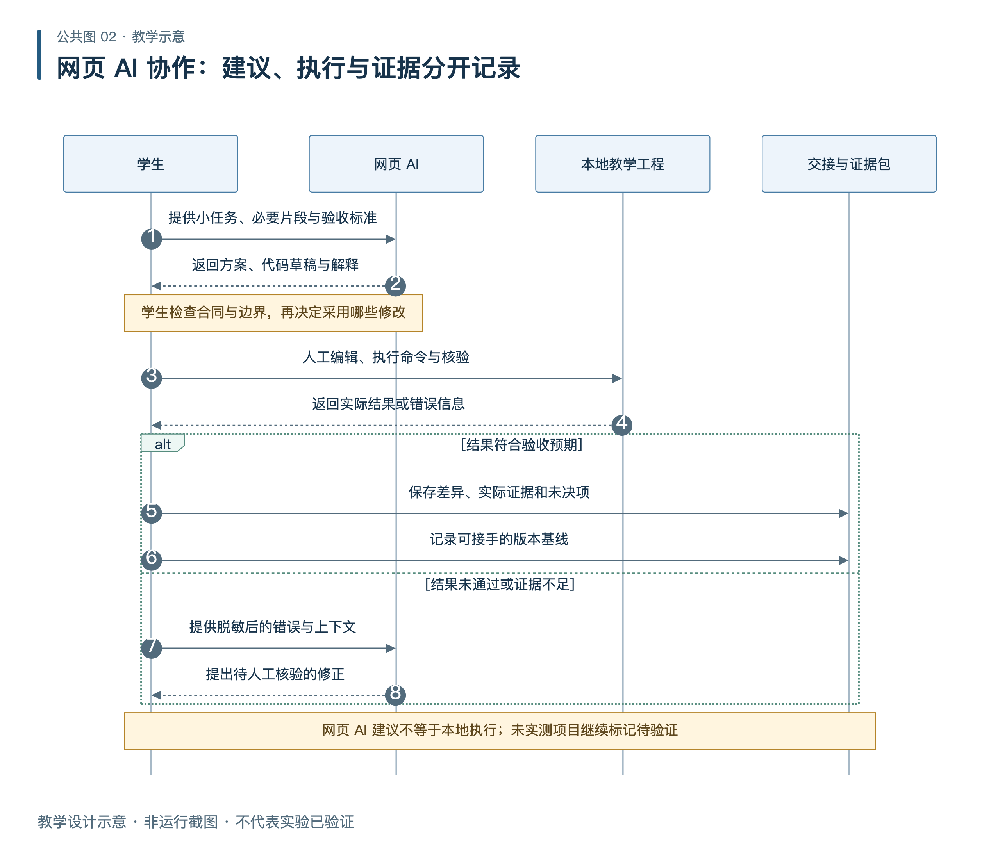
公共图 02 提醒读者：网页 AI 给出建议，学生决定采用哪些修改，并负责本地执行与实际证据。修正建议仍须重新核验，不能把模型的“应该成功”当作运行结果。可编辑 Mermaid 图源。
三类示例
教学推演用于解释概念，例如同时提交相同版本的两个请求。推演结论是规则的预期，不是本机执行结果。
界面示意展示字段、状态、交互和布局关系。它不是现有系统截图；学生可以采用不同配色与结构，只要信息和流程正确。
待实测实验描述拟定教学工程中的操作。教师脚手架和运行条件尚需准备，命令、代码与预期须在该工程上逐项核验后，才能转为正式实验教材。
核心与选做
基础项目采用明确标识的教学模拟数据，无需 AIRIOT 账号或模型 API Key。必修完成设备、空间映射、监测、权限、事件、责任、测试与交付。AIRIOT 的真实只读接入留作进阶；不以接入真实硬件或付费模型决定基础成绩。

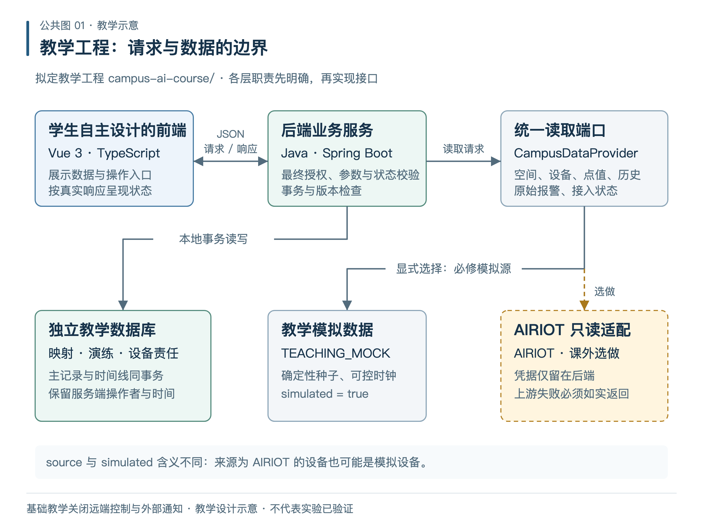
公共图 01 给出全书共用的工程边界。映射、演练与责任保存在独立教学数据库，读取数据通过统一端口显式选择来源；AIRIOT 只读适配属于选做，基础教学关闭远端控制和外部通知。可编辑 SVG 图源。

五个里程碑
| 里程碑 | 完成章节 | 应能解释的问题 |
|---|---|---|
| M1 定义项目 | 01—03 | 谁需要什么，数据和接口为何这样设计？ |
| M2 设备可见 | 04—06 | 页面上的设备怎样经过后端读取出来？ |
| M3 数据可信 | 07—08 | 读数什么时候有效，谁有权做什么？ |
| M4 业务闭环 | 09—10 | 事件怎样合规关闭，责任变化留下什么记录？ |
| M5 可交付 | 11—12 | 如何证明失败路径正确，别人怎样复现和接手？ |
常见术语
| 术语 | 本课程中的含义 |
|---|---|
| 接口合同 | 前后端与数据源共同遵守的字段、类型、请求和错误规则 |
| DTO | 在边界之间传递的数据结构，不等同数据库表或用户实体 |
| 认证 | 确认当前请求代表谁 |
| 授权 | 决定这个身份能否对当前对象执行某个动作 |
| 状态机 | 当前状态下允许哪些动作，以及动作后的状态 |
| 版本冲突 | 提交所依据的记录已经变化，需要回读和重新判断 |
| 事务 | 一组关联修改一起成功，或在失败时一起撤销 |
| 时间线 | 服务端保存的业务动作历史，可追踪操作者、时间和版本 |
| 测试替身 | 为隔离测试而替代依赖的对象；不能证明真实数据库或平台行为 |
| 交接 | 把已完成、实际证据、未解决项和下一任务交给接手者 |
当前阅读边界
本轮目标是可阅读、可继续修订的图文初稿。配图检查证明图片能够正确呈现，内容审校证明规则表述一致；两者都不能替代软件实验、课堂试讲或正式教案。后续继续沿 编写进度与教案转换 完善资源与实操证据。
第 01 章 软件工程入门与网页 AI 协作
本章为教材初稿。文中的对话、数据和代码均为教学样例，操作结果须由学生实际记录。配套教学工程尚未制作，本章不以安装模型、购买 API 或运行智能体工具为前提。课内为 4 学时，按 1＋2＋1 安排，不换算成自然小时。
从一个看起来很小的请求开始
校园值班人员提出：“能不能做一个页面，让我知道教学楼里的设备有没有问题？”小林学过一门编程语言，立刻把这句话发给网页 AI。模型给出一张漂亮的设备表格：绿色表示正常，红色表示异常，还有一个“恢复设备”按钮。小林觉得项目已经完成了一半。
同组的小周却问：“没有收到数据时是什么颜色？这里的异常是通信中断，还是温度超标？按下恢复，会发生什么？”这三个问题把讨论从页面外观带回了工程事实。绿色卡片可以写出来，但它是否表达了正确含义，仍需要需求、数据和验证支持。
本课程将以独立的智慧校园教学工程逐步回答这些问题。我们先从一空间、两台模拟设备开始，最后形成设备读取、监测、权限、演练事件、责任记录和交付文档。所有基础作业都能在没有 AIRIOT 账号、没有模型 API Key 的条件下完成。自主设计 UI 是允许的，但不能用好看的界面替代正确的业务行为。
进入条件与学习目标
你应能理解变量、条件、循环和函数，能够打开网页聊天工具并编辑文本。暂时不要求掌握 Vue 或 Java。教师需准备脱敏演示资料与离线回答样例；其资源包仍待制作，本章已给出可用于纸面审查的短例。
完成本章后，你应能说明一次功能变化经过哪些工程活动；把模糊请求改成有边界的小任务；识别 AI 回答中的推测与实际证据；写出让同学或新对话能够继续工作的交接。学习成果是你能解释、核对和纠正的过程，而不是一段特别长的提示词。
模块一：把代码放回工程过程（1 学时）
1.1 软件工程为什么从问题开始
程序解决的是被定义的问题。若“有没有问题”还没有定义，程序只能把实现者的猜测放大。软件工程把这种猜测变成可以讨论、记录和检验的决定。需求回答“谁遇到什么困难，完成后应看到什么”；设计回答“各部分怎样协作”；实现把设计变为代码；验证寻找实际行为与预期的差距；交付使另一个人能够使用、复现和继续修改。
这些活动会反复发生。发现 online 可能为空时，既要调整显示逻辑，也要检查需求里是否说过“未知”。图 01-01 中的返回箭头表示根据证据修正前面的决定，并不要求每次都重写全部文档。初学者最容易跳过的是需求和交付：自己知道的事情，既没有写给模型，也没有写给接手的同学。

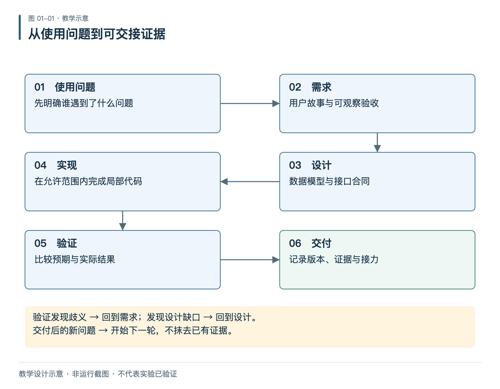
图把五项活动与各自留下的制品连接起来，强调验证会反馈到需求和设计。
可编辑图源：ch01-01-engineering-cycle.mmd · SVG 版式源

| 工程活动 | 台账任务中的具体问题 | 留下的制品 |
|---|---|---|
| 需求 | 查看者怎样区别在线、离线和未知？ | 三态验收说明 |
| 设计 | 谁提供状态，谁负责显示？ | 字段字典和接口草图 |
| 实现 | 怎样读取并显示这三个值？ | 请求函数和显示函数 |
| 验证 | null 是否真的显示为未知？ |
输入、实际结果和判断 |
| 交付 | 同学怎样获得相同结果？ | 版本、步骤与限制说明 |
先完成一个很小但能核对的结果，比同时生成许多互相矛盾的页面更容易学习。本章的最小结果只是一份设备台账需求表。后续才让数据经过后端进入页面，再增加权限与业务动作。每次扩大范围，都要保留前一阶段已经确认的规则。
1.2 一张功能卡怎样避免误解
把“设备管理”改写成一张功能卡：使用者是只读查看者；场景是值班前查看某空间的模拟设备；输入是空间筛选条件；输出是设备名称、通信三态、模拟标记与数据时间；完成标准是返回对象与列表一致、未知不冒充离线。卡片不必描述按钮圆角，也不应偷偷加入远端开关控制。
这里有两个独立判断。source 说明数据由教学模拟提供器还是 AIRIOT 取得；simulated 说明对象是不是模拟对象。即使来自 AIRIOT，也可能仍是模拟设备。事件演练同样不能证明设备发生了真实故障。学生在讲解作品时应直接说明模拟范围，而不是期待观众从一个角落的小字自行推断。
工程制品的价值在于减少下一步的猜测。小周如果只拿到页面截图，无法知道红色是什么意思；拿到功能卡和三态表，就能检查实现。课堂先写三张功能卡：设备浏览、监测值查看、演练事件处置。再写两个范围外项目：真实远端控制、外部通知，并说明它们不属于本轮基础作业。
模块二：与网页 AI 完成一个小任务（2 学时）
1.3 先知道对话框掌握了什么
Qwen3 是模型系列名称，千问或通义网页是学生使用的产品入口，两者不能直接画等号。Qwen3 官方仓库说明了模型系列，但不能据此推定某个学生账号当时调用的具体型号。课堂记录平台、日期及界面显示名称；没有显示就写“未显示”。网页入口与课前检查见工具说明。
本课程按普通网页对话组织协作：你把文本送进去，得到建议，再自己编辑文件、执行命令和记录结果。即使某些产品另有工具功能，也不能假定本轮已经获得本地文件或运行权限。模型不知道你尚未提供的代码、安装版本和数据库状态；“我检查过了”这样的句子，需要有真正的执行来源才能成为证据。
上下文就是模型本轮可以据以工作的材料。材料过少，模型可能补出不存在的接口；材料很长但版本混乱，也会把旧规则当成现行规则。先说明当前目标和合同，再给相关片段；一个文件分段粘贴时，标明文件名与“第几段/共几段”，最后发送“上下文结束”。不必为一次台账需求讨论上传整个项目。
1.4 好坏提示的差别在于是否可检查
下面是故意保留问题的提示，不是推荐用法：
帮我做一个很专业的智慧校园系统，所有功能都要有，代码不要出错。
“专业”“所有”“不要出错”没有给出可观察标准。模型不知道角色、数据源和允许改动的范围，只能选择一套自己的假设。即使返回了许多代码，也难以判断它解决了哪一个已经确认的问题。
改写时增加五项信息：一个目标、必要输入、既定规则、允许范围、验收方式。图 01-02 用同一任务对照两种提示。结构化不等于越长越好；与当前任务无关的背景仍然应删去。

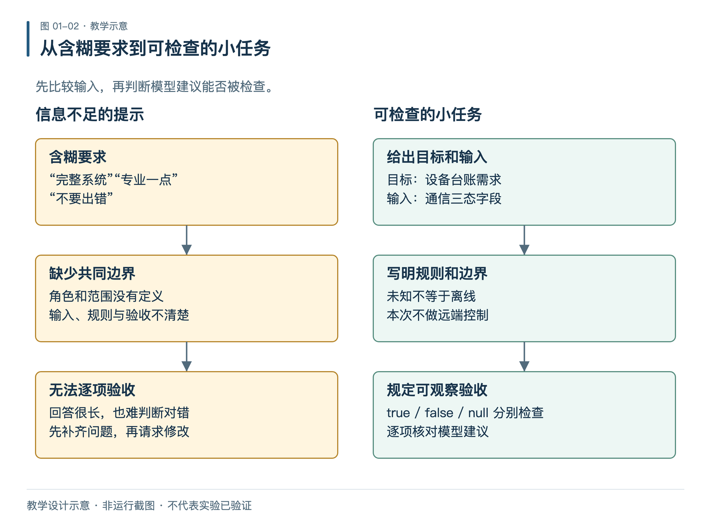
两条路径对比信息不足与信息充分时，人工能否检查回答。
可编辑图源：ch01-02-prompt-comparison.mmd · SVG 版式源

把下面文本复制到普通网页对话即可，不需要模型 API 或命令行工具：
你是软件工程助教。我学过一门语言，没有完整项目经验。
本轮只分析智慧校园教学版的设备台账需求，不生成代码。
使用者是CAMPUS_VIEWER，全部设备为教学模拟对象。
已知字段：id、name、category、spaceId、online、simulated。
online只能是true、false、null，分别表示在线、离线、未知。
请给出使用场景、显示内容、异常情况、可观察验收条件。
不要增加真实控制、通知或模型接入功能；不规定UI风格。
先列影响本轮的信息缺口；缺口阻碍判断时先问我。
你不能读取我的电脑，不得声称已经运行或测试通过。
提交前先在本地文本中保存提示，提交后保留关键回答。网页聊天的历史不是项目合同：一个回答被你采纳后，必须整理进本地需求文件；没有采纳的建议不能悄悄成为下一轮的已知条件。
1.5 三轮协作：从建议到人工判断
第一轮请模型形成需求表。审查时先问内容是否回答了当前目标，再问是否违反规则。假设出现了下面的句子：“未在线的设备统一用红色标为离线。”这是为课堂构造的缺陷回答，不代表某一模型的实际输出。它把“不知道状态”推断成“已知离线”。若系统没有收到通信时间，值班人员可能因此误派维修任务。
第二轮用一个反例纠正它。发送：“你把 null 与 false 合并了。请仅修订通信状态这一行，分别列出三种输入和预期显示，并说明原句会造成什么误解。”这种反馈比“还是不对，重新写”更有效，因为它明确指出了冲突依据和修改范围。
| 教学输入 | 可采用的显示 | 不可推导的结论 |
|---|---|---|
online:true |
在线 | 设备所有业务功能都正常 |
online:false |
离线 | 具体故障原因已经确定 |
online:null |
未知 | 设备已经离线 |
value:0, unit:"kW"，且质量有效 |
0 kW | 数据缺失，或已经计算出节能率 |
value:null |
暂无有效值，并显示质量说明 | 当前功率为 0 kW |
前两列能组成测试的预期，第三列帮助我们限制结论。通信状态、业务故障与测量值不是同一件事。若 AI 建议用 if (!value) 判断缺失，就要意识到这也会把数字零归入缺失。此时不必立刻学习所有 JavaScript 语法，只要给出零与空值两个反例，就能识别逻辑问题。
第三轮请模型审查人工修订后的需求，并要求它只报告仍存在的歧义。如果模型已经给出正确回答，不需要捏造它犯错；可以使用本节的缺陷句练习审查。记录“保留了什么、修改了什么、为什么”，比保存几十张聊天截图更有说明力。
图 01-03 把这个过程画成闭环。跨越“建议”到“已验证”必须经过学生的实际操作，不能从模型回答直接跳到完成。

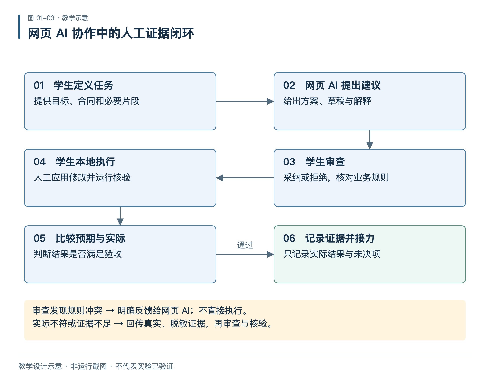
图中的执行者始终是学生，模型参与提出方案与分析反馈。
可编辑图源：ch01-03-ai-evidence-loop.mmd · SVG 版式源

1.6 最小实验：留下可复查的三轮记录
实验只需要文本编辑器与网页聊天工具。先在自己的作业目录建立 ch01-ai-record.md，写上日期、操作者教学代号、平台和显示型号。文件名是作业建议，不表示当前文档包里已经存在这个文件。
- 写出对台账任务的个人理解，至少说明使用者、一个需要和一个范围外动作。先写自己的话，再与 AI 对话。
- 使用结构化提示生成第一版表格，保存原文。用“有依据、待确认、违反规则”给关键句做标记；保留原文以便比较。
- 追加三态反例，要求仅修订对应行。若回答已正确，改为审查本节缺陷句，并注明样例来源。
- 加入有效零值与空值的讨论，人工写明它们属于点值语义，不是
online的第四、第五种状态。 - 形成第三版需求表，逐项核对角色、模拟标记、未知、失败显示和不做项。记录每一项采纳或拒绝的理由。
- 将记录交给同学，让他只看文本复述输入和预期。若必须由你口头补充才能理解，就把缺失条件补进记录。
若网页暂时不可用，可以将本章的缺陷句当成离线模型材料，完成反例、修订与交接。记录应写“离线样例审查”，不能写成“已完成三轮在线调用”。本实验不要求执行应用程序；纸面推演通过也不能宣称项目测试通过。
模块三：把结论变成证据与交接（1 学时）
1.7 哪一种证据支持哪一种结论
“代码能编译”“接口返回两条记录”“页面正确显示未知”“同学能独立复现”是四个不同结论。编译器不会替你判断文案是否误导，页面截图也不会证明后端拒绝越权。工程报告应说清观察发生在哪一层，以及没有覆盖什么。
本章还没有运行工程，所以可以记录“人工核对三态表与合同一致”，不能记录“后端已正确实现三态”。下一章形成需求，只能支持需求可评审；第 04 章即使完成首次贯通，也只覆盖最小读取链路。承认未验证项能帮助下一位同学安排工作，并不会让已有成果失去价值。
对比两种写法：“AI 说已经全部通过”；“我把表中 null 对应项与共同约定核对，改为未知；本次没有运行代码，后续需要用该输入检查页面”。后一种陈述给出了检查对象、依据、实际变化和边界，别人能够复核。未来保存运行日志时，还需补目录、命令、版本、实际输出及证据位置。
1.8 接力不是复制聊天的最后一句
新对话常常没有完整历史。如果只说“继续刚才的任务”，新模型可能继续它猜测的任务。把稳定规则、当前事实和下一件事分开写，可以减少这种漂移。下面是格式示例，实际交作业时应替换“待填写”，不照抄成完成记录：
工作类型：学生需求练习，不是工程运行验收。
目标：定义模拟设备台账中的通信状态显示。
依据：教学接口约定，online为true/false/null。
已完成：待填写实际文件、修订内容和人工检查。
实际运行：本轮未运行应用程序。
仍待验证：页面三态显示、请求失败行为。
下一件事：为设备浏览故事写成功、失败和边界验收。
允许修改：本组需求文本。
不可扩展：远端控制、通知、真实数据和未约定接口。
请同学进行一次“反向复述”：他应能指出当前已有哪份文本、哪一项仍无证据、下一步只做什么。不能复述时，优先补事实，不增加“认真完成”等空泛要求。每人保留一份个人 AI 记录；两人合作时轮换实现者和审查者，不能把全部判断都交给同组同学。
人工检查、常见错误与验收
| 常见现象 | 先检查什么 | 修正方向 |
|---|---|---|
| 回答突然出现设备远程恢复按钮 | 提示是否明确业务边界 | 删除无依据功能，回到需求表 |
| AI 声称看过本地文件 | 本轮是否真的提供过内容或执行证据 | 将结论标为未证实，补必要片段 |
| 回答很完整但无法解释 | 是否直接采纳了陌生概念 | 要求用当前输入解释，再自行复述 |
| 第二轮改坏了第一轮正确内容 | 是否限定修改行与保留项 | 对照前后版本逐项确认 |
| 记录只有“通过” | 是否有检查对象、依据与实际动作 | 改成可复核陈述，无运行则写未运行 |
向网页粘贴材料前，移除密码、会话令牌和真实个人信息。错误定位通常只需要相关代码、路径与错误段。若材料已经包含受限信息，应先在本地整理成无秘密样例，再发给模型；不要把整份配置当成上下文便利包。
| 本章验收项 | 应提交的可观察证据 | 本书给出的状态 |
|---|---|---|
| 解释工程活动 | 把台账活动对应到五个阶段，并说明一次反馈 | 待学生完成 |
| 控制小任务 | 一份结构化提示及明确不做项 | 待学生完成 |
| 分清数据语义 | 三态表、零与空值的反例和修订理由 | 待学生完成 |
| 记录 AI 协作 | 三轮记录或如实标注的离线审查记录 | 待学生完成 |
| 支持下一轮接力 | 同学反向复述及补充后的交接 | 待学生完成 |
课后巩固与答案要点
练习一。 一位同学说：“页面里的数字能动，说明接入了真实校园。”请写出还缺少哪类事实。
答案要点：变化可能来自模拟数据；需核对来源、模拟标记、采样时间及真实对象证据。本课程的动态模拟页面仍然是教学模拟成果。
练习二。 将“请优化设备页面”改写成一个小任务，暂不写代码。
答案要点：可选“修订通信状态显示需求”，明确三态输入、保留现有字段、禁止扩大功能，并用三条可观察结果验收。界面美化也应明确目标和限制，不能只写“更高级”。
练习三。 模型给出一段日志并说测试通过，你没有执行任何命令，应该如何记录？
答案要点：标为模型生成的示例输出，不是实际日志。记录待执行方法，实际运行后再写真实结果，不能修改日期冒充历史运行。
练习四。 如果本轮没有发现 AI 错误，怎样体现自己的判断？
答案要点：逐项核对依据、设计反例、解释为何采纳；也可审查本章明确标注的缺陷样例。发现错误不是唯一学习成果，伪造错误不可取。
进阶选做：用两个可访问的网页工具审查同一需求，保持输入和验收不变，比较遗漏与修订轮次。样本只能说明本次任务表现，不能直接推广为整个模型系列的能力排名；不要求购买额外额度。
交给下一章
带走功能卡、人工修订后的台账需求、代表性 AI 记录和接力摘要。第 02 章将把这些素材变成有编号、有验收、有依赖的需求基线。交接中明确写出“已进行需求练习，尚未开始教学工程实现”，让下一轮工作从准确的起点继续。
第 02 章 需求分析与项目计划
本章为教材初稿，需求表和案例是待实现、待执行的教学材料。课内 4 学时，按 1＋2＋1 安排。需求评审完成不等于软件功能已完成；本章不连接真实校园平台。
“处理完了”究竟是什么意思
值班人员看到一条温度巡查演练事件，希望把它处理完。小林设计了“关闭”按钮，小周却认为还要记录处理过程。扮演管理员的同学提出：“恢复演练来源也应该由我来做。”如果三人直接开始编码，很可能得到三个互不兼容的流程。
需求分析要让这些说法可以相互检验。“处理完了”需要被拆成事实：事件已经分派、处理者已开始工作、已有处置记录、演练来源已恢复、服务端独立核实通过、关闭结论非空，并且提交者有权操作、使用的版本仍有效。只写“能关闭事件”，会把最重要的业务判断留给实现者临时猜测。
本章从第 01 章的功能卡出发，形成需求基线和迭代计划。基线是本组此刻共同认可、可以追踪变化的一组规则，不是永远不准修改的文件。后面发现错误时仍可修订，但要说明影响，而不是为了让代码通过就悄悄降低标准。
进入条件与学习目标
带上上一章的台账需求、三态反例和 AI 记录，先阅读教学接口约定与考核验收基线。教师的完整演示和访谈材料尚待准备；本章场景可以直接用于课堂角色讨论。
完成后，你应能区分业务需要与技术方案；为同一需求写成功、失败和边界验收；说明三角色和本人事件限制；把任务安排到五个里程碑，并解释依赖；处理一次范围变更而不丢失原有证据。
模块一：把人的问题写成项目边界（1 学时）
2.1 用户故事需要有目的
“做一个设备页面”只是交付物名称。“作为只读查看者，我希望按空间查看模拟设备，以便确定本次巡查的对象”才说明了使用者、动作和目的。用户故事帮助我们理解为什么做，但它仍不足以直接验收：未知通信状态怎样显示、请求失败怎么办，还需另外写清。
“页面使用蓝色卡片”属于界面方案；“未知状态不能冒充离线”属于业务语义。学生可以自主选择卡片或表格，也可以改变配色，却不能因此改变字段含义。固定技术栈是课程实施约束，不必强行改写成用户故事。把不同类别分开，有助于判断哪些由小组决定，哪些需要遵守共同合同。
课堂的三个运行角色如下。这里的管理员是系统中的角色，学生是开发者；会写代码并不会让当前登录身份自动拥有管理员权限。
| 角色 | 业务责任 | 必须保留的限制 |
|---|---|---|
| ADMIN | 管理本地空间映射、责任关系，分派及触发/恢复演练；处理合规事件 | 仍受状态、版本和关闭条件约束 |
| CAMPUS_MANAGER | 查看校园信息并处理已分派给自己的事件 | 不能处理他人事件，不能分派或恢复演练来源 |
| CAMPUS_VIEWER | 查看设备、监测及演练记录 | 不允许业务写入 |
权限最终由后端判断。把按钮隐藏只是向使用者说明当前可做什么，不能证明直接发送请求时也会被拒绝。角色需要与对象范围一起描述：“管理人员可以处理事件”不完整；“管理人员只能处理本人已分派且状态允许的事件”才接近可执行规则。
2.2 把必修、选做与范围外放在同一张图里
图 02-01 从使用者需要连接到课程交付，不按“前端页面数”划分范围。必修包括设备浏览、空间映射、监测历史、后端授权、演练事件、设备责任和时间线。真实 AIRIOT 只读接入为课外选做；没有平台账号也不能阻断基础作业。

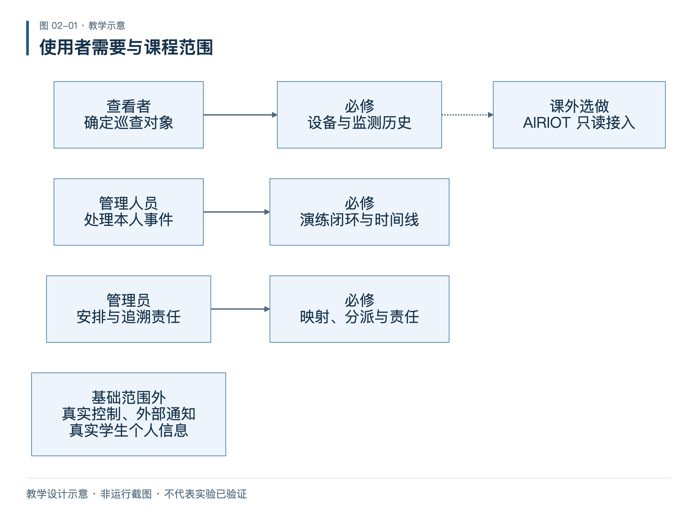
实线连接基础需要与必修能力，虚线标出课外扩展；范围外项目单独列明。
明确范围不是拒绝思考扩展，而是让 48 学时有可实现的目标。最终教学数据集规模为四空间、十六设备、二十八点；首次贯通只用一空间、两设备。这是实施阶段的缩小，不是把最终验收偷偷降成两台设备。没有相应测量数据时，不新增费用、能耗或节能率推算；电压 V、功率 kW 和电能 kWh 不能当成同一种量。
按共同追踪表形成下面六个故事草案。编号与全课程一致，可以在编号后细分子项，但不要把同一个 R06 在另一张表改成别的功能。
| 需求 | 用户故事草案 | 需要继续明确的验收点 |
|---|---|---|
| R01 | 查看者按设备和空间浏览教学设备，确定巡查对象 | 结果来源、空列表和通信三态 |
| R02 | 管理员保存校园、楼栋与空间关系，方便定位 | 合法关联、持久化和拒绝路径 |
| R03 | 使用者看最新值、来源与时间，判断数据是否可信 | 零、缺失、过期、无效 |
| R04 | 使用者查原始历史，观察已有采样变化 | 时间窗、单位、缺失和截断 |
| R06 | 获准处理者完成本地演练事件，留下可追溯过程 | 关闭门槛、版本、时间线 |
| R07 | 管理员登记设备责任，方便未来事件自动分派 | 人员有效、旧事件保持原分派 |
R05 的角色与本人范围、R08 的失败与冲突显示横跨这些故事，R09 对应可复现交付，R10 对应个人 AI 理解与核验。横跨多个页面的要求也必须有人负责，不能因为没有独立菜单就从计划中消失。
模块二：写验收条件，再拆分版本（2 学时）
2.3 用“给定—当—则”消除含糊词
“给定”写已知环境和数据，“当”写一次动作，“则”写必须观察到的结果。三个部分使测试者可以重建情境。不要把步骤写成“正常使用一下”，也不要把结果写成“体验良好”。同一需求至少考虑成功、失败和边界，但无需为了凑数量制造重复场景。
以 R01 为例：给定查看者已通过认证，数据源返回一空间两台模拟设备，其中第二台 online=null；当查看该空间台账时；则列表显示这两条实际记录，第二台显示未知，模拟标记可见。这里的“两条”来自当前输入，不能因为最终数据集预期为十六台就显示十六台。
再加两个条件。给定数据源成功返回空数组，当打开列表时，则显示暂无设备，不能显示接口失败。给定读取请求失败且从未获得成功快照，当打开列表时，则显示不可用及可重试入口，不能显示“设备数量为零”。空结果和未取得结果是不同事实。已有旧快照的刷新失败还应保留旧数据及其时间，说明本次刷新失败，不把旧数据标成新结果。
这些规则不指定布局，却规定了必要信息。一个组采用横向表格，另一个组采用窄屏卡片，都可以用同样的输入验收。自主 UI 因而仍然有共同的正确性标准。
2.4 把事件关闭拆成可以反驳的规则
R06 最容易出现“成功路径看起来顺畅，失败路径全部放行”的问题。关闭前要检查处置状态为 IN_PROGRESS、至少有一条处置记录、演练来源已恢复、服务端独立核实结果为 PASS 且时间有效、结论非空、操作者获准、版本匹配。来源恢复与处置关闭分别保存；恢复动作不会自动替处理者关闭。
先写一个满足所有条件的纸面场景，再逐次移除一个条件。这比一次同时制造多种错误更容易知道拒绝依据。下表是测试设计，不是接口实测报告。
| 用例草案 | 只改变的条件 | 应观察的结果 |
|---|---|---|
| R06-CLOSE-01 | 所有关卡满足，版本匹配 | 关闭成功，主记录和时间线一起保存 |
| R06-CLOSE-02 | 没有处置记录，其余前提可评估 | 拒绝关闭，既有业务记录不因关闭请求被修改 |
| R06-CLOSE-03 | 演练来源仍为 ACTIVE | 拒绝关闭，不把按钮点击解释成来源恢复 |
| R06-CLOSE-04 | 来源已恢复，但尚未独立核实 PASS | 拒绝关闭，提示缺少核实条件 |
| R06-CLOSE-05 | 当前事件版本为 3，请求仍带 2 | 返回 409；保留输入、回读，不自动重放 |
| R05-SCOPE-01 | 由另一位管理人员尝试处理 | 返回 403；前端隐藏按钮不能替代此检查 |
合同采用行锁配合版本检查，并在同一事务中更新主记录与时间线。需求阶段不必写 SQL，但要保留“失败时不能只改一半”的验收目的。并发冲突、时间线插入失败后的回滚，后续必须在真实教学 MySQL 中验证；本章的纸面推演不能替代该证据。
R07 也适合这样分析：设备原责任人为 A，已有事件分派给 A；管理员把责任人改成 B，之后新建事件应按 B 自动分派，旧事件仍归 A。若要调整旧事件，必须单独执行有权限、有版本的分派动作。需求中“更改责任人后全部更新”会破坏已经发生的业务事实，因此不能含糊采用。
2.5 用追踪关系发现遗漏
需求追踪把“为什么做、做在哪里、怎样验证”连起来。图 02-02 以 R06 为例：同一需求会连接第 09 章的规则实现、第 11 章的并发与回滚测试，再连接验收编号和实际证据。需求与用例不一定一一对应；一个权限用例可以同时支持 R05 与 R06。

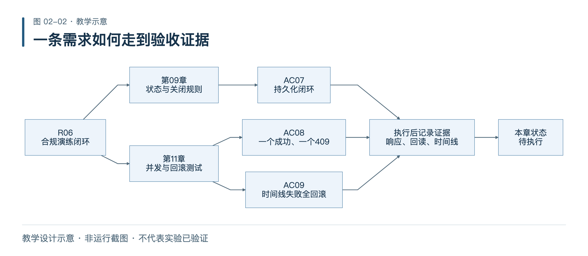
图强调证据尚未执行时必须明确留空，不能只填写一个文件名就判定通过。
可编辑图源：ch02-02-traceability.mmd
| 需求 | 本阶段制品 | 后续实现或测试 | 验收映射 | 当前实际结果 |
|---|---|---|---|---|
| R01 | 三态及空结果验收 | 第 05、06 章设备接口与页面 | AC01 | 待执行 |
| R05 | 三角色与本人范围矩阵 | 第 08、09 章拒绝测试 | AC05、AC06 | 待执行 |
| R06 | 关闭门槛与失败场景 | 第 09、11 章状态及事务检查 | AC07、AC08、AC09 | 待执行 |
| R07 | 新旧事件对照场景 | 第 10、11 章责任与并发检查 | AC08、AC09、AC10 | 待执行 |
检查追踪表时可以从两端追问。从需求端看，哪一条还没有用例？从代码或任务端看，这项工作支持哪个已确认需要？第二个问题尤其能发现 AI 顺手增加的功能。若一张复杂图表没有需求依据，就先记录为候选，而不是立刻占用本轮课时。
2.6 计划围绕可观察结果组织
“本周写前端，下周写后端”很难判断中间是否完成了有用结果。课程采用五个里程碑，图 02-03 展示它们的依赖。M1 的合同支撑 M2 的读取，可信数据和授权支撑后续业务闭环，最终再以复现证明可交付。

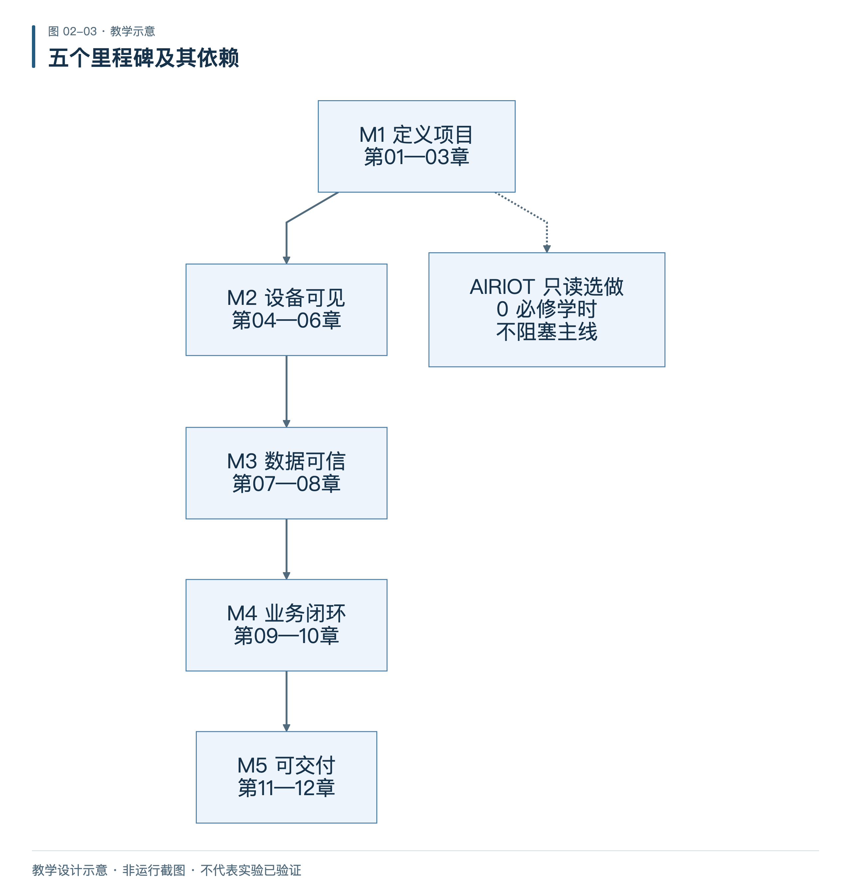
图内章节区间保持全课程的 48 学时结构；AIRIOT 选做位于必修依赖链外。
任务卡应小到能够观察一次明确变化，例如“设备列表区分空结果和读取失败”，而不是“完成全部前端”。卡片写需求编号、前置依赖、交付物、实现者、审查者、验收方法与风险。工作量先用小、中、大描述；第一次完成后记下实际耗费，再校准下一次估计。AI 可以帮助发现遗漏，不能把没有经验依据的数字包装成精确工期。
本课程的 48 学时是教学总量。学习、讨论、调试和核验都占用课内时间，不能把它等同于企业项目的纯编码工时。若进度落后，先减少动画、额外图表和通用管理台，保留授权、版本、关闭门槛与测试。教师预制认证基础和数据库环境，是为了把时间留给这些核心任务。
资源风险同样应进入计划。若机房操作系统、数据库运行方式或 Redis 是否保留尚未冻结，就列出责任人、影响章节和解决条件。本章仍可完成需求与验收；第 04 章真正启动工程前则必须有已验证的资源说明。不要把所有未知一律当阻塞，也不要让阻塞条件在运行时才暴露。
模块三：评审需求并处理变更（1 学时）
2.7 评审者要能提出反例
两组交换需求，审查者任选三条，逐句问“用什么输入能看到它成立，什么输入应被拒绝”。“实时”“安全”“完整”等词要落到合同或明确范围。最新值刷新采用一轮完成后等待 15 秒再发下一轮，离开页面停止；过期阈值等参数由共同合同确定，不能凭“实时”两字许诺零延迟。
评审不是把句子改得更正式。发现缺口时，应判断它是表达不清、违反已定规则，还是确实需要人作决定。前两者可以按合同修订；影响范围的新决定需要记录。例如列表默认使用卡片还是表格，可由小组自主选择；是否开放远端控制已被基础范围排除，不能让模型自行添加。
可复制下面的审查提示，并在末尾粘贴本组表格：
请审查智慧校园教学项目的需求，不写实现代码。
对象是有一门语言基础、无项目经验的学生，课内48学时。
角色：ADMIN管理；CAMPUS_MANAGER只处理本人已分派事件；
CAMPUS_VIEWER只读。后端执行最终授权。
事件关闭要有处置记录、来源恢复、服务端独立核实PASS、
非空结论、有效权限和匹配版本；来源恢复不等于关闭。
事件更新与责任登记使用expectedVersion，旧版本409，不自动重放。
基础范围不含远端控制、外部通知和真实学生个人信息。
按“原句、歧义或冲突、依据、验收建议、是否需要人决定”输出。
请保留R01—R10的含义，不编造工期或运行结果。
我的需求与验收表：[粘贴]
人工审查 AI 建议时，特别核对是否把成功条件删短了、是否把“页面看不到”当成“没有权限”，以及是否把未知的数据补成确定值。每项修改写一句理由，方便下一章判断哪些字段不能被简化。
2.8 一次变更决定应该留下什么
假设使用者新增“发生演练事件时自动给手机发消息”。先记录其目的：希望更快注意到事件。然后分析涉及通知渠道、联系方式、发送失败、重复发送和授权；它明显扩大了当前范围。基础作业的合理决定是延期外部通知，保留已有页面内事件队列，且不声称这已满足所有通知需要。
变更记录可写：“CR-01，关联 R06，提出外部手机通知；决定本轮不纳入；依据为基础范围与课时限制；当前替代为查看事件队列；后续若立项，须另定渠道、数据与验收。”这个记录体现了理解需求目的后的取舍。不要把延期伪装为已完成，也不要因为模型给出了发送代码就跳过决定。
最小实验与人工检查
本实验只编辑本组需求文件，不执行业务写入。建议使用 docs/REQUIREMENTS.md、docs/PLAN.md 和追踪表；目录为学生未来工程的拟定位置，当前可先存为普通文本。
- 从六个故事中选择设备浏览、事件关闭、责任登记三个重点，写清角色和目的。
- 每个重点至少写一个成功与两个失败或边界场景；特别拆开来源恢复与处置关闭。
- 用提示请 AI 找歧义，逐条回查共同合同，再由自己接受、修订或拒绝。
- 给场景添加稳定编号，连接 R 编号、后续章节和 AC 编号；实际结果一栏写待执行。
- 把工作放入 M1—M5，补依赖、审查者与一个资源风险，不把选做接入放入必修前置条件。
- 交换评审并记录 CR-01。保存修订版与差异说明，形成下一章输入。
| 典型错误 | 定位问题 | 修订办法 |
|---|---|---|
| “管理人员能处理全部事件” | 缺失对象范围 | 补本人已分派和他人事件拒绝用例 |
| 验收只有页面截图 | 缺失后端与持久化观察 | 为权限、保存和时间线补相应证据计划 |
| 所有任务都是“大” | 分解仍按技术层而非结果 | 拆成一次可观察变化，并写依赖 |
| 变更后原标准消失 | 没有基线与修订理由 | 保留编号，记录决定及受影响用例 |
| AI 给出精确完成日期 | 缺少班级和实做依据 | 改为相对工作量，试做后校准 |
| 本章验收项 | 可观察产出 | 当前状态 |
|---|---|---|
| 范围与角色准确 | 六条故事、角色矩阵和三类范围 | 待学生完成 |
| 验收可以复核 | 三个重点各含成功与失败/边界条件 | 待学生完成 |
| 追踪关系完整 | R 编号、任务和 AC 映射一致 | 待学生完成 |
| 计划体现依赖 | 五阶段任务板和资源风险 | 待学生完成 |
| 变更有理由 | 一条变更记录及评审修订 | 待学生完成 |
课后练习与答案要点
练习一。 “设备状态实时准确”有什么问题？改写成两条可验收要求。
答案要点：时间含义和准确依据未定义。可改为显示后端返回的通信三态与采样信息；刷新按合同执行，失败保留旧快照并提示。不能自定零延迟或用浏览器当前时间替代采样时间。
练习二。 ADMIN 已把演练来源恢复，管理人员为什么仍可能无法关闭？
答案要点：可能尚未开始处理、无处置记录、未独立核实、结论为空、不是本人事件或版本过期。恢复只满足一部分门槛。
练习三。 给 R07 写一条验证“责任变更不改旧事件”的用例。
答案要点：先以 A 为责任人创建事件 E1，再把责任人改为 B，创建 E2；回读确认 E1 仍归 A，E2 按有效 B 自动分派，责任变更时间线可查。此处只设计预期，后续执行再报告结果。
练习四。 AI 建议增加微信通知以提高完整性，应如何处理？
答案要点：记录目的、范围影响和延期决定；不把建议视为授权或必修任务，不调用真实发送服务。
进阶选做：请同学扮演使用者提出一项改进，不收集真实个人资料。写一次接受或延期决定，说明它如何影响需求、接口、测试和课时。评判依据是推理完整性，不是接受了多少新功能。
交给下一章
交付需求基线、角色矩阵、追踪表、任务板、评审与变更记录。下一章从这些规则设计架构、数据关系和 API。交接要标明课程固定约束、小组自主决定以及真正待确认的资源问题，避免下一轮把界面选择升级成业务规则，或把已定门槛误当可删选项。
第 03 章 架构、数据与接口设计
本章为教材初稿，图、类名与 JSON 是教学设计和静态样例，不是已实现工程。
CampusDataProvider、TeachingMockProvider、AiriotProvider为待实现名称。课内 4 学时，按 1＋2＋1 安排；数据库、并发和 API 均待后续实测。
为什么同一个字段会让两个人都“没有写错”
小林准备写设备页面，认为后端会返回一个设备数组；小周准备写接口，返回的却是带 code、message、data 的对象。两人分别检查自己的片段，都觉得有道理，放在一起后页面却显示空白。另一个组把 online 写成字符串“正常”，随后发现无法表达未知。
这些问题不一定需要更多代码，而需要在两端开始实现前约定数据形状、含义和失败行为。接口合同就是这种约定。架构说明职责，数据模型说明哪些事实要保存，接口合同说明双方如何交换事实。本章把第 02 章的需求转换成这三类设计，并通过样例推演检查它们是否相互一致。
进入条件与学习目标
准备需求基线、角色矩阵与追踪表，阅读教学接口约定。本章可以用纸笔和文本完成；教师仍需在资源制作阶段冻结 Java 方法签名、迁移文件和完整种子数据。
完成后，你应能沿一次请求说明前端、后端、数据源与数据库的责任；区分观测与本地业务记录；读懂概念 ER 图；写出一空间两设备的合法响应；解释来源、空值、版本和两类状态；指出纸面设计尚不能证明哪些运行性质。
模块一：先划分职责，再选择实现（1 学时）
3.1 一次读取经过哪些部分
前端负责收集筛选输入、发送请求、呈现数据和说明状态。后端负责认证后的授权、字段校验、业务判断与持久化；外部数据源提供观测；独立教学数据库保存本组产生的映射、事件、责任与时间线。浏览器不直接连接数据库，也不直接携带 AIRIOT 凭据请求上游。
图 03-01 用两条后端分支区分读取观测与保存本地业务。教学主线选模拟提供器，真实只读适配是选做。前端不需要因更换提供器而重写所有页面，因为后端对外保持同一份合同。

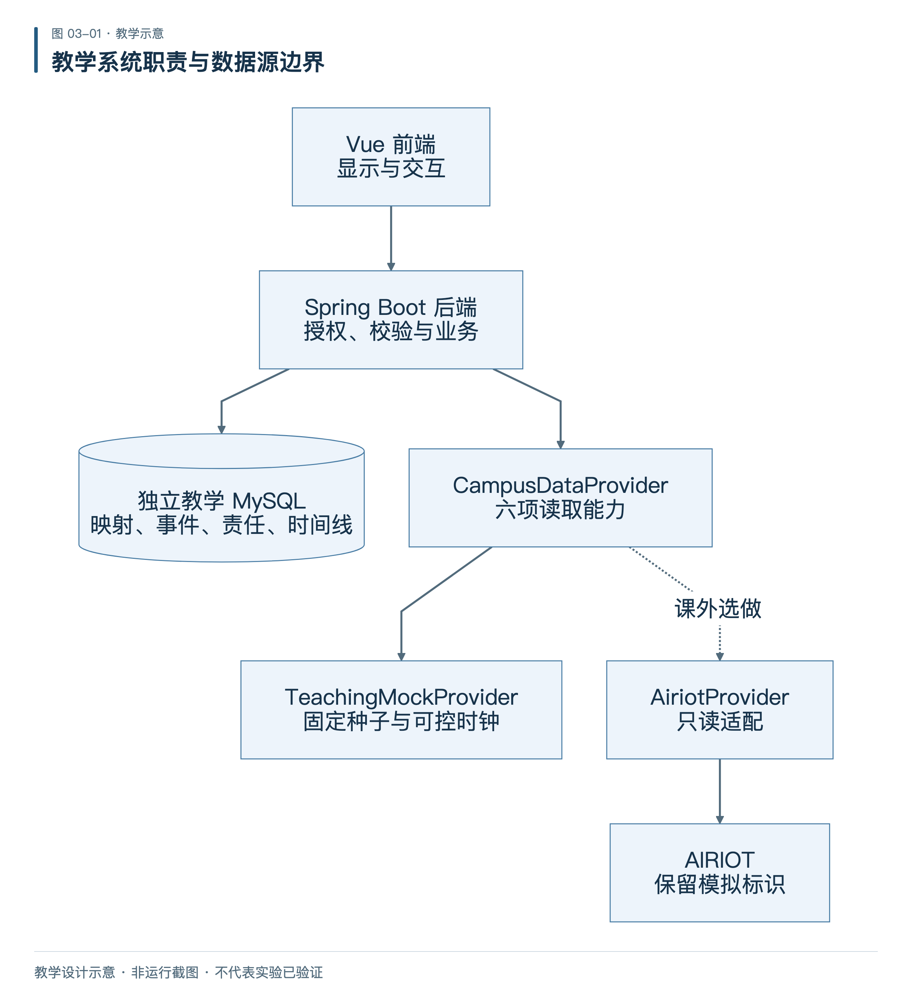
实线为必修路径，虚线为课外只读适配；提供器名称属于教学设计。
可编辑图源：ch03-01-architecture.mmd
沿用的技术栈是 Vue 3、TypeScript、Vite、Pinia、ECharts，以及 Java 17、Spring Boot 3.4.2、MyBatis、Flyway、MySQL。现在不必一次掌握所有工具。可以先把 Vue 理解为组织页面的工具，把 Spring Boot 理解为组织后端服务的基础，把 MySQL 理解为保存本地业务事实的数据库。具体版本由教师冻结，本课不通过追逐最新依赖来评价能力。
3.2 数据源端口为什么不是“随便换一个网址”
端口在这里指业务需要的读取能力，而不是 TCP 端口号。CampusDataProvider 计划暴露空间、设备、最新点值、历史、原始报警、接入状态六项读取能力。业务服务依赖这些能力，具体提供器负责把模拟数据或上游数据整理成合同要求的形式。
模拟提供器使用确定性种子和可控时钟。相同种子、相同时钟与相同故障设置，应便于得到可核对的数据，学生才能解释为什么某点过期。真实提供器失败时必须报相应错误，不能静默返回模拟成功；否则页面可能继续变动，却隐藏了真正的接入失败。
source="TEACHING_MOCK" 表示数据来自教学模拟提供器，source="AIRIOT" 表示来自真实适配路径。simulated=true 仍独立存在：AIRIOT 中的模拟设备也必须保留这个标志。来源不等于真实性，两者都要在设计中有位置。认证基础由教师预制，学生负责业务授权，不能把“教师提供登录”误解为“业务请求已经自动安全”。
模块二：把业务事实变成数据与 API（2 学时）
3.3 DTO、数据库记录和页面模型解决不同问题
DTO 是双方交换数据的形状。Device DTO 包含设备名称、分类、通信状态等前端需要的字段；它不应直接暴露数据库用户实体或上游秘密。数据库记录则服务持久化和约束，可能采用不同列名与表结构。页面模型还可以增加展开、选中等交互状态，这些状态不必写回设备对象。
例如，空间的 buildingId 可以为空，因为本地映射还没建立。前端可以显示“未绑定楼栋”，不能为了方便渲染就写一个不存在的楼栋 ID。设备名称是显示内容，设备 ID 才是关联依据；两个设备同名时，按名称保存责任关系会产生歧义。
先用字段字典回答类型、是否可空和来源，再写 JSON：
| 字段或对象 | 类型与含义 | 设计时特别检查 |
|---|---|---|
Device.online |
boolean | null，通信三态 |
字符串和数字不是三态成员 |
Device.communicationTime |
number | null，epoch 毫秒 |
不用请求时间补成通信时间 |
Point.value/time |
数值或空值 | 有效零保留；缺失不补零 |
Point.quality |
fresh/stale/missing/invalid | 由后端依据教学时钟判断 |
observedAt |
后端本次观察时间，epoch 毫秒 | 不是每个点的采样时间 |
expectedVersion |
非负 JSON 整数 | 字符串、布尔值、浮点形式不接受 |
Capability 中能力值 |
JSON Boolean | 只有严格 true 授权 |
时间的三个角色要分清：采样时间表示源数据何时取得，观察时间表示后端何时组织这次读取，浏览器本地时间仅用于界面格式化等显示。把观察时间复制到每条数据，会掩盖陈旧样本。单位也属于语义，0 kW 是有效功率值，不等于缺失，也不能直接变为累计电能或费用。
3.4 一空间、两设备的最小读合同
首次贯通使用 GET /campus/spaces 和 GET /campus/devices，成功外层为 {code:0,message,data}，列表位于 data.items。接口须在教学认证之后访问。下面为静态样例，时间只是固定的 epoch 毫秒输入，不是本次运行产生的记录；tableId 与标签的示例取值仍须由教师种子包冻结。
{
"code": 0,
"message": "ok",
"data": {
"items": [
{
"id": "teaching_space_01",
"name": "教学空间一",
"type": "room",
"campusId": null,
"buildingId": null,
"floor": null
}
],
"observedAt": 1792281600000
}
}
{
"code": 0,
"message": "ok",
"data": {
"items": [
{
"id": "teaching_env_01",
"tableId": "teaching_environment",
"name": "教学温度设备",
"category": "environment",
"spaceId": "teaching_space_01",
"spaceName": "教学空间一",
"online": true,
"communicationTime": 1792281598000,
"simulated": true,
"switchOn": null,
"tags": [{"id": "temperature", "name": "温度", "unit": "°C"}]
},
{
"id": "teaching_energy_01",
"tableId": "teaching_energy",
"name": "教学功率设备",
"category": "energy",
"spaceId": "teaching_space_01",
"spaceName": "教学空间一",
"online": null,
"communicationTime": null,
"simulated": true,
"switchOn": null,
"tags": [{"id": "power", "name": "功率", "unit": "kW"}]
}
],
"observedAt": 1792281600000
}
}
switchOn:null 是保留合同字段，并非要求制作控制按钮。基础教学的 canControl 对所有角色均为 false。category 固定为 environment、energy、facility、lighting 四类，不用中文显示名替代传输值。界面可以翻译显示文字，但请求与响应仍使用约定枚举。
这两个列表响应保留参考合同的形状，没有自行加入 source。概览和历史合同明确携带 source，数据提供器和教学运行配置也显式选择来源。最小台账可以根据教师确认的教学配置显示“教学模拟”；若需要跨来源的统一列表 DTO，应先协调合同，再同步前后端和测试，不能每章各自加一个字段。
3.5 用 ER 图区分观测与业务记录
图 03-02 是概念关系图，不是已经执行的建表脚本。ER 图中的实体表示一类对象，连线表示数量关系。一个演练事件至少有一条创建时间线，一台设备可以关联多个演练事件。每台纳入教学集的设备预建一条责任主记录；初始 version=0、ownerUid=null 时没有责任变更历史，之后逐次追加。时间线保存历次变化，因此不能只保留主记录里的最后负责人。

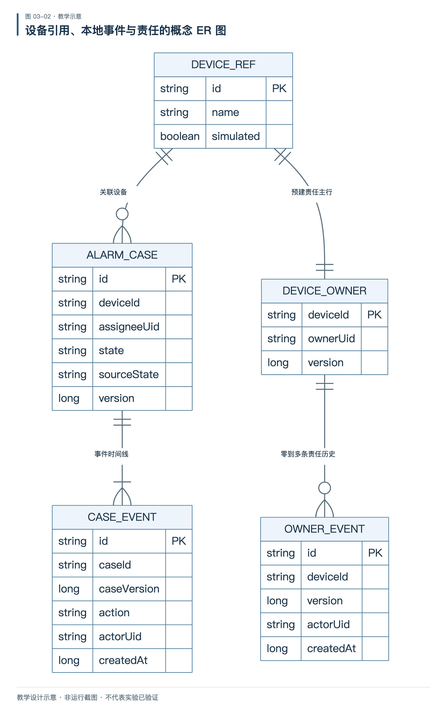
设备是来自提供器的逻辑引用，其余四类对象为拟定本地持久化记录。纳入教学集的设备预建责任主行，version=0 时尚无责任变更历史；事件创建时已有一条创建时间线。连线不意味着向上游建立跨库外键。
可编辑图源：ch03-02-local-records-er.mmd
数据库至少要分别表达事件主记录、事件时间线、设备责任主记录、责任时间线。主记录用于快速读取当前状态，时间线用于解释它如何变成现在这样。事件时间线按事件和版本唯一；责任时间线按设备和版本唯一。迁移编号与实际表名由教师骨架统一冻结，不能复制参考系统的编号就宣称教学数据库已经建好。
一个容易混淆的细节是“未配置责任行”。API 可以返回 ownerUid=null、version=0，表达当前没有责任人；这不要求提供器替我们创建远端人员关系。首次有效登记后版本递增，未来事件参考新的责任关系。已经创建的事件保存自己的 assignee，不会因为责任主记录改变而悄悄改派。
3.6 两类状态不能压进一个“已解决”字段
事件处置状态为 NEW → ASSIGNED → IN_PROGRESS → CLOSED，描述人员处理进度。来源状态为 ACTIVE/RECOVERED/UNKNOWN，描述演练来源事实。两者分开保存，才能表达“来源已恢复，但处理者尚未完成记录”。图 03-03 将来源恢复送入关闭条件检查，而不是直接连到已关闭。

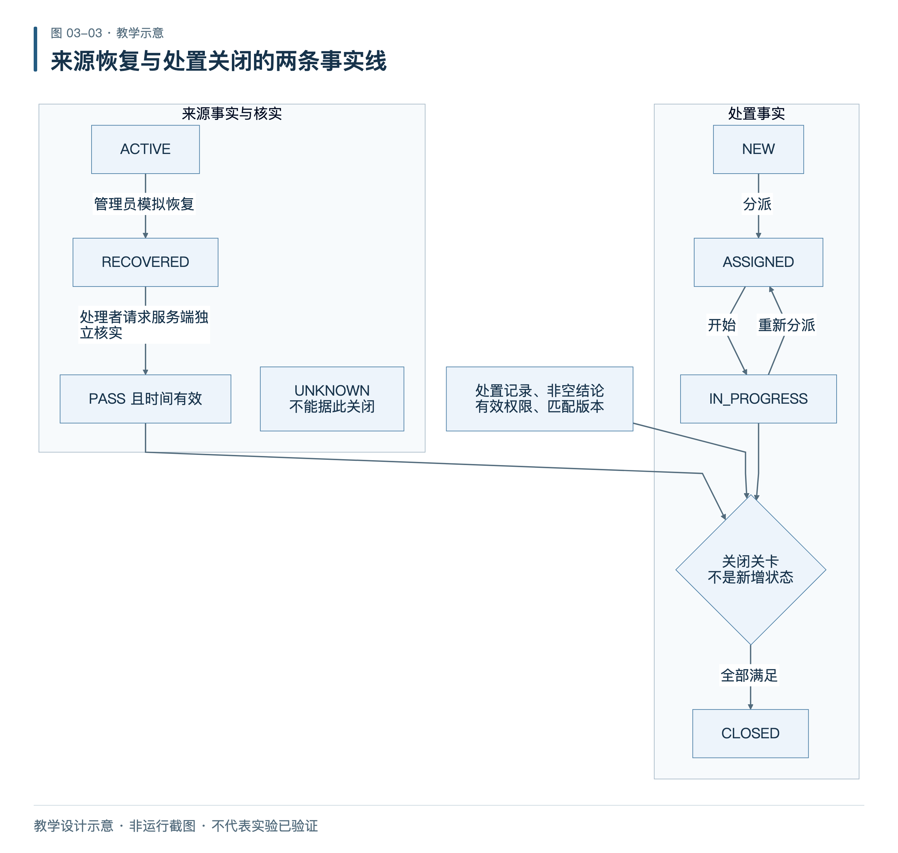
图中的关闭关卡同时接收处置条件、来源核实和权限版本；它不是新增业务状态。
可编辑图源：ch03-03-two-state-axes.mmd
重新分派未关闭事件会回到 ASSIGNED，旧记录保留，新负责人需要重新开始；已关闭事件不再修改。演练触发创建独立 DEMO/LOCAL_DEMO 事件，初始版本为 1，有有效责任人时可自动分派。它不导入、确认或改写 AIRIOT 原始报警，也不证明关联设备真的异常。
关闭还要求至少一条处置记录、来源确已恢复、服务端独立核实 PASS 且时间有效、非空结论、有效权限和匹配版本。核实结论由后端产生，不接受客户端提交“我已核实=true”。管理员负责模拟恢复，获准处理者另行请求核实；这是两个动作，不必强行解释成一定由两位不同的人操作。
3.7 版本描述你依据哪一份事实作决定
假设页面读取事件版本为 3。学生点击“开始处理”时携带 expectedVersion:3，表达“我的决定建立在版本 3 上”。后端事务锁定当前记录，比较版本，确认权限与状态后修改主记录、追加时间线，再一起提交。客户端不能先把版本改成 4，就要求后端接受自己的判断。
两个人都读到版本 3 时，先成功提交的人使版本变化；后一个请求取得锁后发现版本不符，返回 409 VERSION_CONFLICT。图 03-04 展示这个顺序。参考方案使用行锁配合版本检查，不能称为只靠条件更新的纯乐观锁。互斥和版本检查共同解决问题，真实效果仍需数据库集成测试。

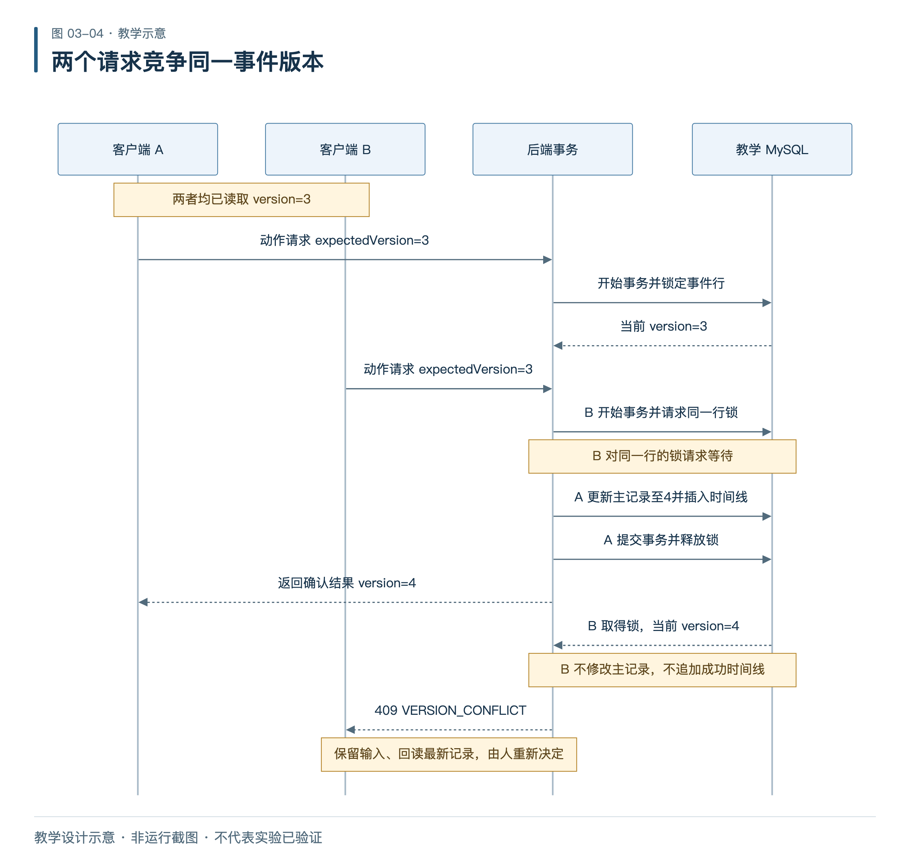
两次提交均携带 3，后端在事务中取得当前记录后判断；顺序仅用于解释，谁先成功取决于实际调度。
可编辑图源：ch03-04-version-transaction.mmd
前端遇到 409 要保留尚未提交的输入，回读最新记录，让使用者重新判断；不能自动把版本换成最新值并重发，因为负责人或状态可能已经改变。时间线插入失败时，同一事务必须撤销主记录修改。前端弹出成功消息无法证明数据库没有只保存一半。
模块三：用样例评审合同（1 学时）
3.8 合同除了成功 JSON 还要写拒绝行为
HTTP 状态表达请求处理类别，响应中的业务码表达业务结果。约定参数无效为 400、身份无效为 401、权限不足为 403、对象不存在为 404、版本或状态冲突为 409。上游故障适当转为 502/503，不应误报成学生登录过期。错误业务码与外层结构沿用教师冻结基础，不在本章另造一套错误 JSON。
设计审查时，可以用四个请求练习。假定事件当前已分派给获准管理人员、版本为 3，事件标识是纯教学代号 E1：
| 教学请求 | 纸面预期 | 理由 |
|---|---|---|
POST /campus/alarm-cases/E1/start，{"note":"开始巡查","expectedVersion":3} |
条件均满足时进入 IN_PROGRESS，版本递增 | 字段、类型、状态及权限都需核对 |
开始成功后，对 /campus/alarm-cases/E1/notes 提交 {"note":"记录演练检查","expectedVersion":4} |
追加处置记录，状态仍为 IN_PROGRESS | 版本取自已确认响应，本例为 4 |
开始请求把版本写为 "3" |
400 | 数字字符串不符合非负 JSON 整数合同 |
开始请求额外提交 actorUid 或 sourceState |
400 | 未知字段和伪造服务端事实须拒绝 |
纸面合法不等于一定成功，实际账户可能被禁用、事件可能已变化。每条预期都要带前提。另取仍为 2 的旧版本请求，格式虽合法，却应为 409；这区分了格式校验与业务冲突。
版本字段也不是所有 POST 的通用要求。场景触发请求为空 body 或 {}；事件创建为版本 1。校园创建、楼栋创建和空间绑定按其合同，不擅自加 expectedVersion。已经恢复、未关闭且版本匹配的事件再次恢复，返回当前详情，不重复增加版本或时间线；关闭后仍禁止修改。
3.9 让前后端角色只靠合同交流
一人扮演前端，另一人扮演后端。前端同学只看文档，说出应请求什么、从哪一层取数组、遇到空值和错误显示什么。后端同学只看文档，说出应该授权谁、校验什么、保存哪些事实。任何必须靠口头补充的信息都写回合同或本组设计记录。
用以下提示辅助评审，不把模型建议直接当共同合同的新版本：
请审查我的智慧校园教学设计，只找冲突和缺项，不生成整套代码。
外层为{code:0,message,data}，时间epoch毫秒，未知用null。
source仅TEACHING_MOCK或AIRIOT，simulated另存。
事件为DEMO/LOCAL_DEMO，处置状态与来源状态分开。
关闭需处置记录、来源恢复、服务端独立核实PASS、结论、权限和版本。
事件更新和责任登记用非负JSON整数expectedVersion；行锁配合版本检查；
主记录和时间线同事务。场景触发为空body或{}。
只依据下列合同、图和样例输出“位置、冲突、影响、修订建议”。
不得增加控制或通知，不得声称数据库或接口已经实测。
我的材料：[粘贴相关内容；长文件按编号分段]
审查模型回答时，检查它有没有把 Provider 设计名称写成已存在类，是否建议前端直连上游，是否把 null 改成默认零，是否省掉独立核实。若合同确需变更，先列影响的 DTO、前端类型、接口测试与章节，再由共同维护者统一修订。本组图与样例不能单方面改变全课程规则。
最小实验与验收
- 从需求圈出空间、设备、事件、责任、时间线，分别标记观测引用或本地业务事实。
- 按图 03-01 画本组架构，并口头沿一次读取解释各层责任。
- 在独立作业文本中抄写并检查两份 JSON，核对 ID 关系、外层、空值、枚举和毫秒时间。可用教师允许的本地 JSON 检查器检查语法，勿把语法通过当业务通过。
- 写出四个请求样例，另做一次版本 3 与旧版本 2 的纸面冲突推演。
- 交换评审，修订字段字典与图，给后续实现留下仍待冻结的方法签名、迁移与夹具清单。
| 常见错误 | 判断方法 | 修订方向 |
|---|---|---|
| 前端把响应直接当数组 | 与成功 JSON 对照取值层级 | 从 data.items 读取 |
| 一个状态同时表示恢复和关闭 | 能否表达已恢复但未完成处置 | 分离两类状态和核实结果 |
| 未配置责任写成版本 1 | 与初始责任合同对照 | 初始版本 0，登记后递增 |
| 把所有用户字段直接返回 | 与 DTO 白名单对照 | 只返回合同允许的身份显示字段 |
| 回滚图只撤销时间线 | 检查主记录是否已变化 | 同一事务撤销全部未完成修改 |
| 本章验收项 | 预期制品 | 状态 |
|---|---|---|
| 架构与来源边界 | 无前端直连上游、无静默模拟回退的图与说明 | 待学生完成 |
| 读取合同一致 | 一空间两设备合法样例和字段字典 | 待学生完成 |
| 本地事实分离 | 概念 ER 图及两类状态解释 | 待学生完成 |
| 版本事务可解释 | 两请求推演与回滚预期 | 待学生完成 |
| 设计可接手 | 评审记录和待制作资源清单 | 待学生完成 |
课后练习与答案要点
练习一。 AIRIOT 返回一台模拟设备，source 与 simulated 应怎样表达？
答案要点：在承载来源的响应中 source="AIRIOT"，对象仍保留 simulated=true。不能把来源标成教学模拟，也不能因上游名称而取消模拟标识。
练习二。 为什么 Device DTO 不应直接复用数据库用户实体？
答案要点：职责、字段和保密边界不同。DTO 应明确列出所需设备字段，不携带账户凭据或与客户端无关的内部字段。
练习三。 两个请求同带版本 3，为什么只比较客户端数字还不够？
答案要点：必须以数据库当前记录为依据，并保证检查和修改的并发控制。本方案在事务中锁定记录，比对版本并原子保存主记录与时间线，随后用真实并发测试验证。
练习四。 时间线插入失败，主记录版本已经加一，这能算成功吗？
答案要点：不能。若确实持久化了这个状态，说明原子性目标未实现；应回滚主记录并修复事务边界。纸面承诺不能充当回滚证据。
练习五。 页面请求未知值时收到 null，把它改成零能否减少前端判断？
答案要点：会伪造测量事实。应在显示层明确未知或缺失，保留真实零值；质量、单位和时间也应保留。
进阶选做：给数据源端口写一页伪接口说明，只列六项读取能力、输入和错误，不固化尚未制作的 Java 方法签名。比较模拟与 AIRIOT 实现怎样满足同一合同，不尝试真实控制或写入。
交给下一章
带走架构图、概念 ER 图、字段字典、请求响应样例、合同评审和待冻结事项。第 04 章将使用教师待制作的最小桩完成首次贯通。交接中保留“设计已写、工程未制作、并发与回滚未实测”的边界，不因图中出现数据库就声称数据已经保存。
第 04 章 开发环境、版本控制与首次贯通
本章为教材初稿。
campus-ai-course/是拟定教学工程，当前文档包不含可运行骨架、下载包、认证基础或数据库。下列工程安装与启动步骤须在教师制作并验证资源后执行；本章没有产生贯通成功日志。独立 Git 与显示函数例子不依赖该工程，但同样不能替代完整实验核验。课内 4 学时，按 1＋2＋1 安排。
两张相同的页面可能证明不同的事
小林把两个设备名称直接写进页面，浏览器很快显示出来。小周则希望页面请求后端，由后端读取模拟提供器，再把结果显示出来。两张页面可能看起来一样，但前者只能证明静态内容可显示，后者才可能证明最小读取链路贯通。
首次贯通的目标不是做完台账，而是让一次经过教学认证的请求跨过前端、代理、后端和教学数据源，并能解释每一段。它还能尽早暴露环境版本、路径和合同问题，避免等到许多页面写完才发现双方从未接通过。完成后要留下可复现基线，方便第 05 章继续完善业务接口。
进入条件与学习目标
需要第 03 章的合同和一空间两设备样例。工程实验开始前，教师必须提供冻结版本骨架、Maven Wrapper、前端锁文件、隔离数据库说明、教学登录基础、模拟提供器与最小读取桩，并完成干净环境预检。机房操作系统、具体 Node 版本、端口分配和 Redis 是否保留仍须在资源制作阶段确定。
资源未到位时，可以完成环境清单、Git 文字练习、显示函数阅读和请求推演；工程贯通应记为资源阻塞。不要在原智慧校园系统中试启动，也不要把本章未给出的数据库配置、登录路径或包地址自行补成已知事实。
完成后，你应能区分源码、构建产物和运行数据；用版本输出检查工具链；保存并检查一次小提交；沿 Network 请求定位错误层次；提供同学可重复执行的运行记录，并说清最小贯通没有覆盖哪些业务。
模块一：环境清单与 Git 基线（1 学时）
4.1 工具安装与工程运行是两个问题
“装过 Java”不能说明当前终端使用了正确版本。系统可能同时装有多个 JDK，编辑器与终端也可能采用不同路径。先读取实际版本，再与教师资源说明比较，比连续重装更容易找到原因。参考前端要求 Node ^20.19.0 || >=22.12.0，课程应从兼容范围中选定一个经过验证的版本，不要求学生自行安装所谓最新版。
下面是只读版本检查。在本机终端逐条执行并保存实际输出；命令不存在也是需要记录的现象。它们检查开发工具，不是在安装或调用模型命令行工具。
git --version
java -version
node --version
npm --version
若版本不符，按教师对应操作系统说明检查程序来源和 PATH。不要把聊天中的版本号复制到记录中。Java 工程拿到后，才在 backend/ 使用资源包内 Wrapper 检查 Maven；macOS/Linux 拟用 ./mvnw -version，Windows PowerShell 拟用 .\mvnw.cmd -version，前提是对应文件确实存在。Wrapper 可能下载所需组件，因此这一步不等同于纯本地查询。
| 对象 | 示例 | 如何处理 |
|---|---|---|
| 源码与配置样例 | 业务代码、pom.xml、无秘密的配置模板 |
纳入版本与审查 |
| 依赖锁定资料 | package-lock.json、Wrapper 配置 |
与资源版本一起保留 |
| 可再生成产物 | node_modules/、target/、dist/ |
不当作学生手写源码提交 |
| 运行与受限数据 | 数据库目录、真实账户配置、会话内容 | 按隔离说明保存，不进入提交 |
拟定工程含 frontend/、backend/、docs/、fixtures/、evidence/。目录存在只说明组织方式，不能证明里面已经有可运行程序。学生拿到资源后，应记录来源、资源版本与完整性说明，先核对文件清单，再执行 README。
4.2 Git 的三个位置
工作区是正在编辑的文件；暂存区是准备放进下一次提交的内容；提交是已记录的一个快照。git add 保存的是调用时选中文件的内容，之后继续编辑不会自动更新暂存区。这解释了为什么提交前还要看 git diff --cached。Git 官方 add 文档说明了暂存与再次暂存的关系。
图 04-01 中有两条差异检查：git diff 看工作区与暂存区，git diff --cached 看暂存区与当前提交。文件已暂存后，普通 diff 为空，不代表没有待提交变化。

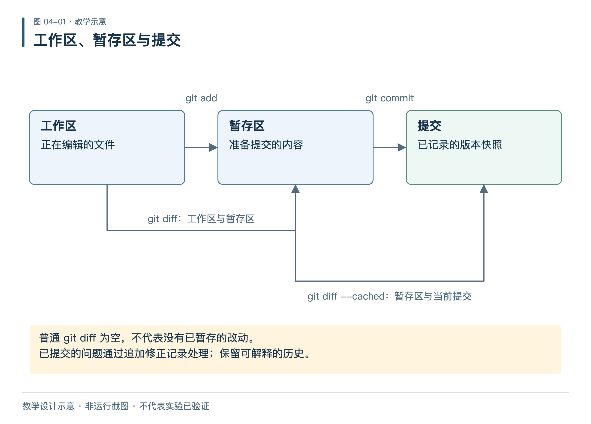
图用一次需求文件修改说明检查、选择和提交顺序；恢复以追加修正记录为主。
可编辑图源：ch04-01-git-workflow.mmd · SVG 版式源

在独立教学工程中，先看当前位置和状态。macOS/Linux 用 pwd，PowerShell 可用 Get-Location；随后使用下列 Git 命令。若提示当前不是仓库，先核对路径和资源说明，不在课程文档目录或别人的项目里随手 git init。
git status --short
git diff
git diff --cached
首次提交前用编辑器检查 .gitignore，确认依赖、产物、数据库目录及秘密配置被排除，同时保留无秘密的样例配置。已经被跟踪的文件不会因为后来加入忽略规则就自动从历史消失。发现异常文件时先停下查明来源，不用清空工作区来制造干净状态。提交时指定本次文件，不把所有改动一并归到自己名下。
4.3 不依赖工程的文字版本练习
教师尚未交付骨架时，可在自己新建的、确认不属于任何现有仓库的空练习目录中操作。用编辑器建立 note.md，写“未知通信状态应显示未知”。以下命令只适用于这个个人练习目录，不用于原系统：
git init
git status --short
git add -- note.md
git diff --cached
git commit -m "docs: record unknown communication state"
git log -1 --oneline
若首次提交提示缺少作者身份，按教师说明设置本仓库的教学署名，不要为了本练习改写全局身份或使用他人的账号。提交成功与否以实际输出为准，本书不提供伪造的提交哈希。
接着在编辑器把“未知”故意改成“离线”，运行 git diff，说明为何这项变化违反合同；然后手工改回并再次检查。这个过程训练先看差异再决定保留什么。若错误已经提交，可在仅有本次练习、工作区干净的条件下追加修正提交；进阶时再学习 git revert，它会记录反向修改的新提交，而不是抹掉历史。Git 官方 revert 文档说明了其行为与干净工作区前提。
模块二：让一次读取穿过前后端（2 学时）
4.4 先核对运行条件，再执行命令
正式实验仅在教师交付并验证的独立 campus-ai-course/ 资源中进行。先核对本组数据库名称、连接位置、端口和种子范围，确认不会连接共享或生产数据。数据库运行方式可能是本地环境，也可能是教师分配的隔离环境；具体启动命令、迁移和停止方式必须由资源 README 给出，本文不假造统一跨平台脚本。
前端仅在含 package.json 与匹配锁文件的 frontend/ 中按冻结说明执行 npm ci。它按锁文件安装；锁文件与清单不一致时会报错，并会替换已有 node_modules。因此不把它当只读检查，也不通过删锁文件来“修好”安装。npm ci 官方文档给出了这些约束。
| 阶段 | 执行前必须确认 | 拟定操作与待实测点 |
|---|---|---|
| 专属数据库 | 本组隔离范围、凭据来源、迁移说明 | 按资源 README 准备，不套用原系统脚本 |
| 后端 | Wrapper、教学配置、认证基础、模拟提供器均就绪 | 按 README 启动；若冻结为 Spring Boot Maven 插件方式，可使用下述条件命令 |
| 前端 | 锁文件、依赖与代理目标正确 | 若 package.json 定义 dev 脚本，使用 npm run dev |
| 浏览器 | 登录方式、真实监听地址和后端可达 | 用教师教学身份登录，再检查请求 |
# 待实测条件命令：macOS/Linux，在独立工程 backend/ 内。
# 仅当教师 README 明确采用此入口，且教学配置已安全就绪时使用。
./mvnw spring-boot:run
# 同一前提下的 Windows PowerShell 入口，勿与上一命令重复启动。
.\mvnw.cmd spring-boot:run
这两条命令不提供数据库、profile 或端口配置，不能脱离资源说明单独保证运行。启动前遇到端口占用，先识别占用者；使用教师规定的备用端口并同步代理配置，不停止未知进程。退出时也只停止本组本次启动的进程，按资源说明保留数据。若认证基础保留 Redis，必须纳入教师的依赖管理，学生不能猜测它可删除。
4.5 用一张时序图解释首次贯通
图 04-02 从“已经通过教学登录”开始，不另造登录接口。浏览器发出 /api/campus/devices，前端开发代理去掉 /api，后端收到 /campus/devices，授权后调用模拟提供器，最后按合同返回两个设备。Vite 的路径代理及重写能力见官方 server.proxy 文档；本课程的目标地址须来自资源配置，不能照搬文档示例的端口。

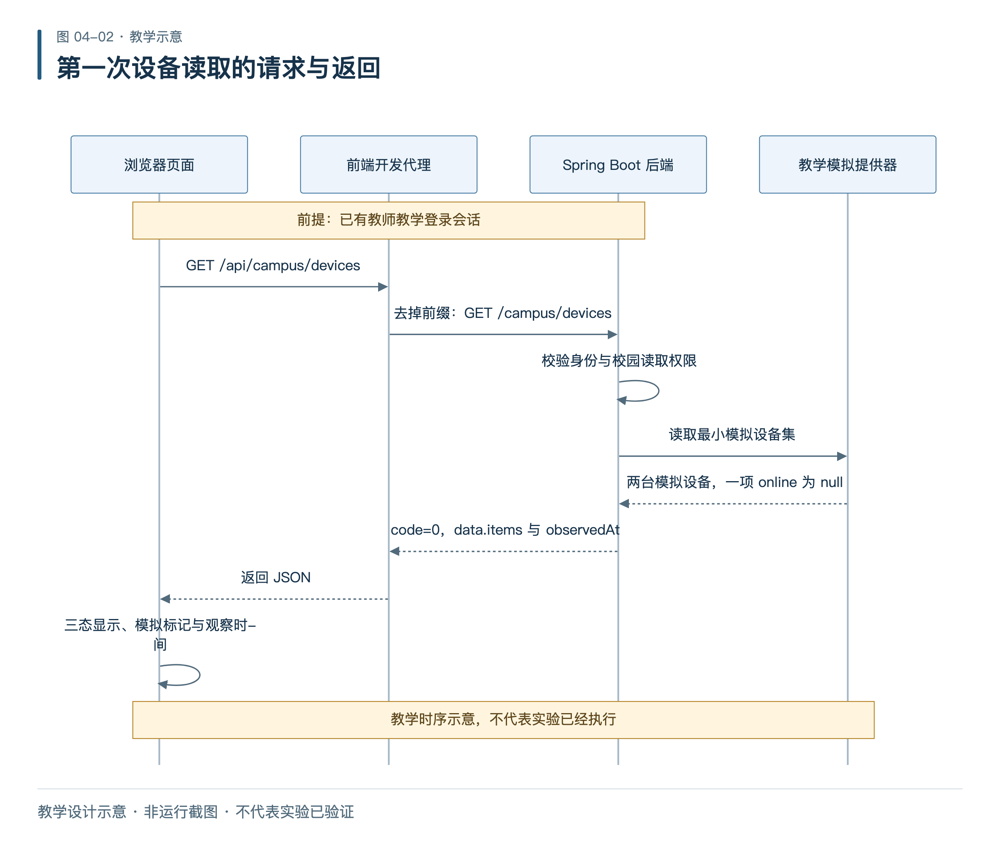
图从已认证会话开始，模拟提供器不是浏览器内的静态数组；图中没有真实运行证据。
可编辑图源：ch04-02-first-request.mmd
打开浏览器开发者工具的 Network，重新加载最小页面，找到设备请求。先核对请求路径、HTTP 状态、响应类型，再看 JSON 层级。合法成功响应应有 code:0，列表在 data.items，观察时间为 data.observedAt。若看到 HTML，即使状态为 200，也没有拿到约定 JSON；若拿到 JSON 却显示为空，要继续查前端解析和渲染。
同时在本组后端日志中找对应路径和时间窗口的请求记录；若骨架提供请求标识，则用标识对应。日志应足够定位请求，不输出身份凭据。把页面、Network 响应与后端记录放在一起，才能说明数据实际经过了哪几层。后端日志没出现时，先查请求是否发出、代理是否命中和日志配置，不能凭猜测直接改数据库。
最小页面只显示名称、在线三态、模拟标记和观察时间。教师最小桩对应 teaching_space_01、teaching_env_01、teaching_energy_01，其中能源设备的通信状态样例为空。此时不用添加筛选图表和事件按钮；第 05、06 章会继续补业务实现与自主 UI。
4.6 独立练习：一个显示函数也需要边界
下面是独立 JavaScript 示例，可保存为个人练习目录中的 status-example.js，用于理解三态显示。它不是完整前端文件，没有请求或认证功能，不能替代最小页面。示例附的是预期解释，学生执行后另记实际结果。
function onlineLabel(value) {
if (value === true) return "在线";
if (value === false) return "离线";
if (value === null) return "未知";
throw new Error("online 不符合 boolean | null 合同");
}
for (const value of [true, false, null]) {
console.log(value, onlineLabel(value));
}
只有已保存该文件且 Node 可用时，才在其所在目录执行 node status-example.js。预期三行分别对应在线、离线、未知。若把 "false" 字符串送入函数，应抛出合同错误，而不是当成离线。这个小例子说明：三态枚举之外的值属于输入错误，不能与合法 null 一起归为未知。
把这种判断放入实际页面时，还要处理请求加载、空列表和失败。模型若建议 value ? "在线" : "离线"，用 null 就能证明它违反合同。先从已知反例说明问题，再要求最小修改，不必让 AI 重新生成整个页面。
4.7 制造一次能恢复的失败
成功页面仍不足以证明错误被正确处理。在个人实验分支或已保存基线的教学工程中，只把当前设备请求改成一个不存在的教学路径，例如 /api/campus/devices-not-found；其他条件不变。预期请求不能被当成合法设备读取，页面说明失败。具体 HTTP 状态须据实记录，不能预先填一张“404 已通过”的截图。
若已有成功快照，保留旧记录和最后成功观察时间，并提示本轮失败；不能继续显示“刚刚更新成功”。若没有旧快照，显示不可用，而不是用两个硬编码设备掩盖失败。某些错误路径可能落入前端 HTML 回退，此时也必须被响应检查识别，不能把 HTML 当 JSON 的成功结果。
保存脱敏后的请求、响应与页面现象，再恢复正确路径，重新读取并确认页面恢复。查看 Git 差异，确保故意的错误路径没有混入最终提交。全过程只作用于本组前端文件，不需要停止后端或改动数据库来制造故障。
模块三：定位问题、提交与复现（1 学时）
4.8 先缩小错误层次
图 04-03 是排障入口，而非“出现 500 就重装环境”的配方。每次只验证一个假设：没有请求，先看事件触发与控制台；请求得到 HTML，先看代理；得到 401/403，先核对教学身份与权限；成功 JSON 仍空白，先看取值层级。错误码提供方向，仍要结合响应与后端记录判断。

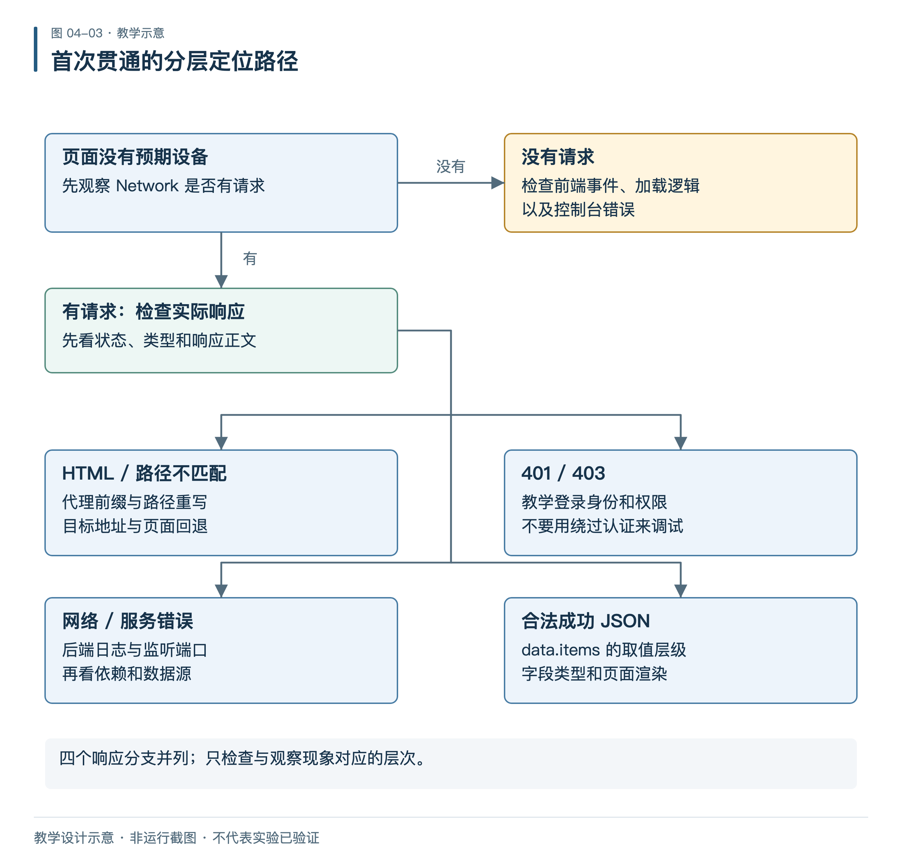
图按可观察现象缩小检查范围，避免同时重装工具、改代理和改业务规则。
可编辑图源：ch04-03-debug-path.mmd · SVG 版式源

向网页 AI 提问时，不要只发“页面没东西”。下面提示保留真实证据位置，未执行项应明确写未执行：
我在独立教学工程做首次前后端贯通，你无法访问我的本机。
预期：已认证前端经/api代理读取后端/campus/devices，显示两台模拟设备。
合同：{code:0,message,data:{items,observedAt}}，online为true/false/null。
资源版本、系统与工具版本：[实际值]
执行目录和命令：[实际值；未执行写未执行]
Network路径、HTTP状态、响应类型及脱敏响应：[实际观察]
控制台与后端相关错误段：[实际观察]
相关代理配置和请求代码：[只粘贴必要文件，不含凭据]
请按证据给出最可能层次、仍缺的信息及一个最小检查步骤。
先定位再提出局部修改；不要删除数据库、重置仓库、升级全部依赖，
也不要通过绕过认证或返回硬编码数据制造成功。
人工重点检查修改能否解释当前证据。例如实际响应是前端 HTML，模型却建议重建业务表，这个建议没有解释请求为何没到正确端点。先解决已观察的因果链，再做相邻回归。发材料前删除 Authorization、Cookie、密码与令牌；不要直接上传带会话信息的完整网络导出文件。
4.9 小提交与他人复现
一个提交尽量说明一个可检查变化，比如“显示设备通信三态并保留读取失败状态”。先运行本次需要的最小检查，再看 git status --short、普通差异和暂存差异，按实际文件路径逐个暂存。提交记录应能分清教师提供的桩与学生新增的代码，不把整套参考成品当个人实现。
复现者只看 README，不听操作者口头补步骤。说明必须包含资源版本、工具版本、执行目录、依赖安装、数据库与配置准备方式、启动和停止入口、实际地址及预期现象。缺失配置来源时，写清由教师按受限方式提供，不把密码写进 README。复现出现新问题，就记录环境差异和修订，不能替复现者填“通过”。
建议用以下简表保存结果。表中没有预填运行成绩，避免把教材示例当成证据：
| 记录项 | 学生执行后填写 |
|---|---|
| 资源/代码版本、系统与工具版本 | 实际标识与输出 |
| 目录、命令与监听地址 | 本组真实值，配置秘密除外 |
| 正常请求 | 路径、状态、JSON 与对应后端记录 |
| 错误路径及恢复 | 实际现象、失败提示、恢复后的观察 |
| 代码改动与提交 | 本次文件、提交标识和检查范围 |
| 复现与限制 | 复现者记录、未验证项或阻塞原因 |
最小实验与验收
- 核对教师资源就绪条件；未就绪时记录阻塞，只进行独立练习。
- 核对本机版本、工作路径、依赖锁文件和隔离配置，建立可解释的基线。
- 按冻结 README 准备并启动本组依赖、后端与前端，逐项保存实际输出。
- 使用教学登录基础获取合法会话，观察设备请求的完整路径，不增加免登录旁路。
- 核对两台设备、在线三态、模拟标记和观察时间；对照响应与后端记录。
- 执行错路径实验，记录失败，恢复正确路径后再读一次。
- 审查差异、提交本次改动，让同学按文档复现，并填写交接。
| 常见错误 | 先查看的证据 | 处理原则 |
|---|---|---|
| npm 找不到项目清单 | 当前目录与资源文件清单 | 进入正确 frontend/，不现场生成另一套项目 |
| Wrapper 或数据库启动失败 | 首个有效错误、工具版本、隔离配置来源 | 修正已定位项，不删除数据碰运气 |
| 200 响应但页面空 | 响应类型、data.items 和控制台 |
200 不是合同校验的替代 |
| 登录后仍 403 | 当前角色和后端读取能力 | 检查权限配置，不移除授权判断 |
| Git 出现大量产物 | 路径、忽略规则和已跟踪状态 | 只保留本次源码变更，查清异常来源 |
| 本章验收项 | 所需证据 | 本书当前状态 |
|---|---|---|
| 环境可说明 | 工具输出、路径与资源版本 | 待实测 |
| 最小读取贯通 | Network JSON、页面与对应后端记录 | 待实测 |
| 错误被识别并恢复 | 失败与恢复的实际记录 | 待实测 |
| 版本可追踪 | 基线、局部差异与提交标识 | 待学生完成 |
| 他人可以复现 | 复现者记录与补充后的 README | 待实测 |
课后练习与答案要点
练习一。 git diff 为空，是否一定可以直接提交？
答案要点：不能。还需检查状态、暂存差异和未跟踪文件；普通 diff 不显示已经暂存的变化，也不证明内容正确。
练习二。 /api/campus/devices 返回 200 和 HTML，最先检查哪里？
答案要点：核对代理前缀、重写和目标地址，以及请求是否落入前端页面回退；这不是设备 JSON，不能显示加载成功。
练习三。 错路径实验后仍显示旧的两台设备，是否一定失败？
答案要点：不一定。若明确保留旧快照、旧时间并提示刷新失败，符合可靠性目标；若伪称本次成功，则错误。
练习四。 最小桩已经返回两台设备，可否报告完整平台或 AIRIOT 接入完成？
答案要点：只能报告本次真实覆盖的最小链路。完整规模、空间持久化、授权拒绝、事件和真实接入均需各自证据。
进阶选做：在教师批准的另一独立环境按 README 复现，记录路径、工具和依赖差异；或在纯文字 Git 练习中研究一次反向提交。选做不要求公网部署，也不把机房尚未确定的运行条件写成既有事实。
交给下一章
交付实际环境表、资源版本、最小桩边界、请求证据、局部提交与复现记录；未运行则交付推演和明确阻塞项。第 05 章在同一合同下补空间与设备的业务分层、校验和本地映射。接手者应能看出哪些来自教师骨架、哪些由学生完成、哪些还只是教材中的拟定步骤。
第 05 章 后端空间与设备接口
课间巡查时，校园管理人员问：“这台环境传感器在哪栋楼？”设备目录只回答它属于 teaching_space_01，并没有校园和楼栋信息。另一位同学提出，直接把设备名称改成“教学楼 A 一层传感器”就能解决。这个办法看似省事，却把名称、位置和关联混在了一起：楼栋改名时，要改多少台设备？两个空间名称相同时，程序又应选择哪一个？
本章沿着这个问题完成两条链路：从教学数据源读取设备；把已存在的空间关联到本地校园和楼栋。前一条帮助人看见设备，后一条给设备补充可管理的位置语义。两条链路在服务层汇合，但数据所有权不同。我们只维护本组教学数据库里的映射，不改数据源中的空间或设备。
本章状态为 DRAFT_WRITTEN，lab_verified=false。以下请求、代码和操作均为教学样例或待实测步骤；拟定的 campus-ai-course/ 工程尚未随本文提供。课堂实施前，教师须完成骨架、认证、数据库、迁移和模拟数据组件的制作及验证。
进入条件与学习目标
你应已完成第04章的最小贯通，能在浏览器网络面板找到一次请求，并区分响应外层与 data。本章继续使用教师准备的教学登录基础；登录后的读取和管理员写入约束从现在就保留，第08章再系统解释和验证。不得为调试把接口临时改成公开接口。
完成本章后，你应能独立完成以下工作：
- 沿一次请求指出 Controller、Service、数据端口、Mapper 和 DTO 的职责。
- 解释空间、设备、校园、楼栋及绑定之间的关联，说明哪部分保存在本地。
- 实现合同规定的读接口和空间映射接口，保留未知值并拒绝非法引用。
- 用写响应、独立回读和持久化证据判断结果，而不是只看提示文字。
模块一 把一个问题拆成边界清楚的请求（1 学时）
1.1 从浏览器到数据，不是一层函数完成所有工作
浏览器发出 GET /campus/devices，并不需要知道设备来自文件、教学模拟器还是选做的 AIRIOT 适配器。Controller 负责接收 HTTP 请求、绑定参数并返回统一结构；Service 负责组织业务、执行校园权限检查；CampusDataProvider 是拟定的数据读取端口，隐藏来源差异；DTO 则规定返回给前端的字段。只有访问本地持久化数据时才需要 Mapper，设备读取不必为了“层次齐全”强行绕一遍数据库。
图 05-01 展示一条设备读取路径。图中的方法文字说明职责，不是已冻结的 Java 方法签名。权限检查先于受保护数据返回；实际认证基础在进入业务服务前识别身份，业务服务仍须决定这个身份能否读取校园数据。

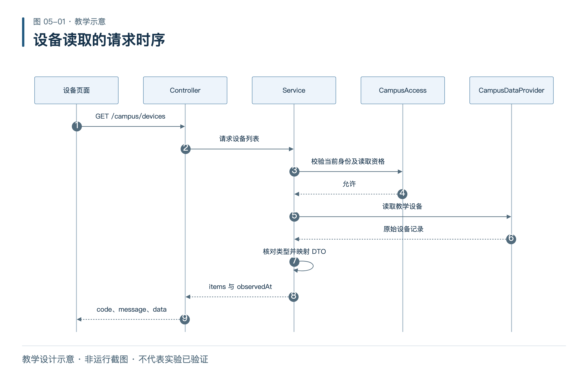
页面经控制器进入服务，服务先检查读取权限，再调用数据端口，将返回记录映射为 DTO 后响应。这里没有前端直连数据源的箭头。
可编辑图源：ch05-01-device-request.mmd
为什么要多出一个端口？假设测试要让某台设备的通信时间缺失。若服务里到处写着网络地址，测试必须协调外部平台；依赖读取端口时，可以给服务一个固定样本。将来选做真实接入，只替换符合端口约定的适配器。数据源必须在启动时显式选择；真实来源失败不能偷偷换成教学模拟成功。
1.2 DTO 是给使用者的合同
数据库实体描述怎样存储，数据源记录描述怎样获取，DTO 描述外部调用者可以依赖什么。它们偶尔字段相同，也不应因此被当作同一个概念。例如数据库字段可能叫 building_id，JSON 字段叫 buildingId；MyBatis 的结果映射负责本地列与 Java 属性的对应，服务里的对象映射负责组合数据源记录和本地关系。这是两种不同的“映射”。
以下是解释空值用的 Java 17 类型片段，省略包名和导入；两个公开类型应分别放入对应文件，最终类名、验证注解及构造方式由教师骨架冻结。它不是完整可运行接口。
// 教学片段：可空字段使用包装类型，不能用 boolean/long 代替。
public record TagDto(String id, String name, String unit) {}
public record DeviceDto(
String id, String tableId, String name, String category,
String spaceId, String spaceName,
Boolean online, Long communicationTime,
boolean simulated, Boolean switchOn, List<TagDto> tags) {}
online=false 表示明确离线，online=null 表示没有足够信息判断；communicationTime=null 表示来源没有给出通信时间。把后者写成当前时间，会制造“刚通信过”的假象。simulated=true 表示对象性质；数据通道 TEACHING_MOCK 则属于来源语义，不能靠类名或设备名称猜测。当前 /devices 的 data 为 {items,observedAt}，不要自行增加另一个外层协议；页面需要来源时，可使用合同中的 overview 来源字段及已明确的教学数据源说明。
Spring MVC 可以将控制器返回对象序列化为响应体，但不会替你判断“未知能否补零”这样的业务含义。理解返回对象与 HTTP 响应体的关系，可参阅 Spring 官方的响应体说明。
1.3 先写成功和失败的含义
本章的读取入口为 /campus/devices、/campus/spaces 和 /campus/locations。设备及空间读取返回 items 与 observedAt；位置读取返回 campuses、buildings、bindings。成功统一包在 {code:0,message,data} 内。空列表表示查询成功但没有记录；来源不可用表示本次无法回答，两者不能都写成成功的 []。
开始编码前，手写一张核对卡：请求属于哪个身份，读取哪种数据，允许哪些空值，什么情况下拒绝。它比“做一个设备接口”的任务描述更准确，也更容易给网页 AI 审查。
模块二 完成读取与本地空间映射（2 学时）
2.1 先理解关系，再写 SQL
一个校园可以有多栋楼，一个楼栋可以关联多个来源空间；一个来源空间在本地最多绑定到一栋楼，并附带楼层文本。设备通过 spaceId 指向来源空间。没有绑定时，空间的 campusId、buildingId、floor 仍可为 null，并不妨碍读取设备。

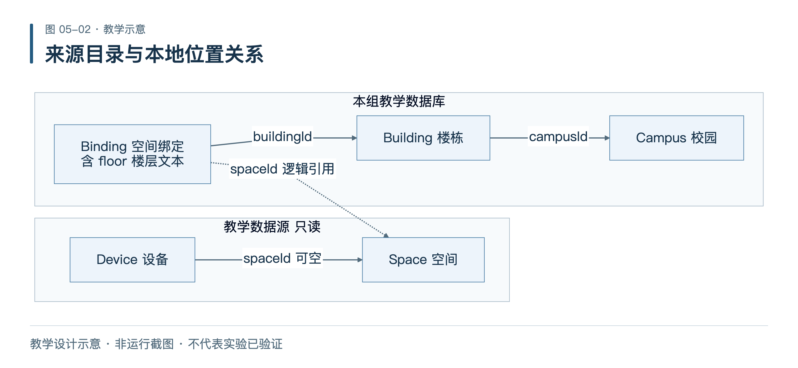
设备属于来源空间，本地楼栋属于校园，绑定保存来源空间标识、楼栋标识和楼层；跨数据源关联用虚线表示，不能在本地数据库直接建立指向外部服务的数据库外键。
可编辑图源：ch05-02-space-relations.mmd
图 05-02 的箭头指向被引用对象，不表示数据被复制过去。spaceId 必须经数据端口确认存在，buildingId 和它所属的 campusId 则在本地校验。学生不能把空间名称当成主键：两个“实验室”可以位于不同楼栋，而同一个空间也可能更名。保留稳定标识才能避免误绑。
2.2 读取两台设备，检查一处未知
在教师发布并验证资源包后，先在自己的独立教学工程建立本章工作分支，记录资源包版本和合同版本。打开教师提供的两个最小样本：teaching_env_01、teaching_energy_01，所属空间为 teaching_space_01。此处只规定已确认的标识，完整点位名称和单位清单须以冻结夹具为准，不能自行冒充最终清单。
先选一台设备逐字段抄出期望 JSON，再实现端口到 DTO 的转换。刻意让其中一个独立夹具缺失通信时间，检查 JSON 是否仍包含 communicationTime:null。若转换器把空值隐藏了，就回到 DTO 和序列化配置查原因，不让前端用字符串“未知”反向掩盖接口差异。
接着接入 Controller，沿图 05-01 逐层记录输入与输出。若使用日志，只输出请求路径、结果数量和安全的错误摘要，不输出会话凭据或整份账户对象。最终数据集目标为四空间、十六设备、二十八点；数字来自实际返回记录，不能在业务代码里固定“返回十六台”。教师移除一个独立测试样本后，应能观察到实际数量变化。
2.3 先创建校园，再创建楼栋
以下是待实测的 HTTP 请求正文。实际地址、登录方式和代理前缀由教师工程说明确定；不要把这些片段发送到现有学校演示站点。三项写操作均以管理员身份执行。
POST /campus/locations/campuses
Content-Type: application/json
{"name":"教学校园"}
校园创建后，执行 GET /campus/locations，从真实响应中取得新校园的标识。不要假定数据库一定从 1 开始。再创建楼栋：
POST /campus/locations/buildings
Content-Type: application/json
{"campusId":"替换为刚回读的校园标识","name":"教学楼 A"}
这里的占位文字必须替换为回读值，不能原样当作正确请求。Service 先检查当前身份具备管理资格，再检查名称是否为有效文字、去除首尾空白后是否为空，以及校园是否存在。字符串长度等尚未写入共享合同的细节，沿教师冻结的验证规则处理并记录；不能在各组代码里自行发明不同上限。空名称返回 400，不存在的引用对象返回 404；被拒绝时不得出现孤立楼栋。
Mapper 负责参数化读写，返回受影响记录或持久化结果；它不决定“谁有权建楼”。教师提供迁移模板，学生核对表、主键、引用和映射字段，不改已应用迁移。若发现模板缺少必需字段，应新增课程迁移并由教师统一验证，而不是在共享数据库临时改表。
2.4 绑定空间，并证明改变发生在哪里
取得楼栋标识后执行第三条请求。floor 是合同中的楼层文本，不应强行转为正整数；例如“地下一层”需要仍能表达。
PUT /campus/locations/spaces/teaching_space_01
Content-Type: application/json
{"buildingId":"替换为刚回读的楼栋标识","floor":"一层"}

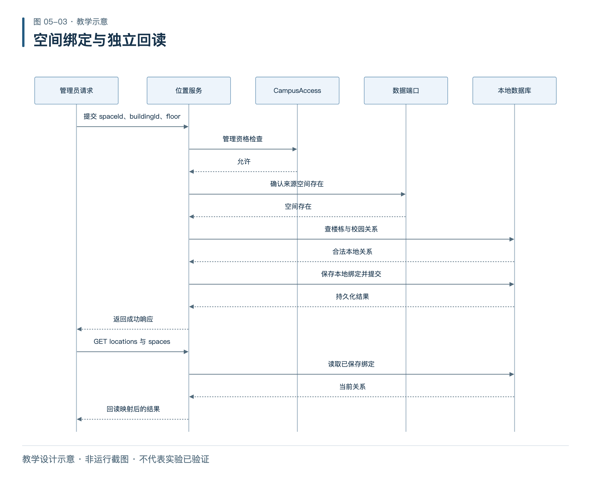
管理员通过授权、来源空间和本地关系检查后，仅向本地数据库保存绑定；成功响应之后，再次发起读取核对当前关系。图中没有修改来源空间的调用。
可编辑图源：ch05-03-binding-readback.mmd
服务随后读取空间时，把本地绑定合并进 Space DTO。GET /locations 能看到绑定而 GET /spaces 仍没有楼栋，说明存储和组合返回之间还有缺口，不能交给前端自行猜楼栋。回读时也应核对数据源原空间、设备记录没有被改写。
本章映射接口没有 expectedVersion 字段，不能为了“所有写入统一”擅自添加。事件更新和设备责任登记在后续章节按合同使用版本。绑定保存的数据库事务与后续独立 GET 是两个步骤：GET 失败时，写入可能已经提交，页面应说明结果尚待确认，先回读，不能自动再创建校园。
2.5 用小任务与网页 AI 协作
将以下提示复制到通义等网页聊天工具，随后补充本次必要的合同、目录和相邻文件。Qwen3 仅作为课程案例，记录网页实际显示的型号；未显示就写“未显示”。不用 API Key，也不要求聊天工具直接访问本机。
你是我的 Java 业务接口助教。请先阅读我随后提供的合同、DTO、一个相邻 Controller 和教师数据端口定义。
只协助 GET /campus/devices：Controller 调 Service，Service 保留校园读取授权并依赖数据端口。返回 {code:0,message,data}，data 为 {items,observedAt}。
不要臆造端口方法签名。online 和 communicationTime 可为 null，所有教学设备 simulated=true；不要把来源失败改成成功空列表。不得新增 AIRIOT 网络调用、账号或关闭认证。
先解释数据经过各层的方式及最少修改文件；我检查后，再逐文件给修改与正常、缺失、失败三个验证例。不能声称运行过我的工程。
收到回答时，先找假设，再读代码。如果 AI 写了 catch (Exception e) { return List.of(); }，追问它如何区分“零台设备”和“读取失败”，并要求只修这一个边界。如果它直接给出一个不存在的 provider.getAllDevices()，把实际端口定义贴回去，而不是为迁就答案随意改共用接口。学生负责保存文件、检查差异和执行教师核验过的测试入口；网页中的“应该通过”不能抄入证据。
模块三 用证据判断接口是否完成（1 学时）
3.1 最小实验与人工检查点
两人轮换实现者和检查者：实现者先读出预期，检查者再发请求。依次完成设备读取、校园创建、楼栋创建、空间绑定及独立回读。每次只增加一个变化，上一条还没有回读就不继续堆功能。若独立工程资源尚未发布，本节只能做请求推演和代码审查，实际结果一栏必须留为“待执行”。
成功路径之后增加三个反例：空白校园名称、不存在的校园标识、不存在的空间标识。对每个反例，保存脱敏请求、HTTP 状态、安全的业务消息和事后回读。再用教师针对本组提供的停止及启动方式重启教学后端，验证已提交关系仍在；不能操作现有 system/ 的服务或把重建数据库当成重启。
人工检查时，请作者现场指出：空值在哪里保留，权限在哪里判断，关联在哪里确认，数据保存在哪个库。若只能回答“AI 生成的”，应回到最小切片逐层解释，暂不扩展删除、导入或通用后台。
| 待执行验收 | 预期行为 | 需保留的证据 |
|---|---|---|
| 两台样本与完整目录 | 字段一致，最终实际规模可核对 | 响应、资源版本、数量计算位置 |
| 通信时间缺失 | null 保留，不伪造时间 |
特定夹具及响应 |
| 三项映射写入 | 两种读取均反映本地关系 | 写响应、locations 与 spaces 回读 |
| 空名称与不存在引用 | 400 或对应 404，无错误记录 | 拒绝响应、事后读取 |
| 来源不可用 | 明示失败，不返回成功空目录 | 故障夹具、响应 |
| 持久化与边界 | 重启后可读，来源对象未改 | 本组重启记录、前后对照 |
3.2 常见错误及定位顺序
| 现象 | 先定位什么 | 修正方向 |
|---|---|---|
| 响应缺少楼栋字段 | DTO、数据库列映射、服务组合返回 | 在正确边界补齐，不在前端写固定楼名 |
| 浏览器 200，但界面报错 | 外层 code 与 data 结构 |
对齐响应及请求封装，保留失败含义 |
| 绑定到同名错误空间 | 使用的是名称还是稳定 ID | 让选择器提交 ID，名称仅供人阅读 |
| 失败后多出两个校园 | 是否把未知结果当作必然失败重试 | 先回读已提交状态，再决定操作 |
| 重启后关系消失 | 保存的是内存集合还是本组数据库 | 核对实际持久化路径和连接目标 |
3.3 练习与答案要点
**练习一：**某设备 online=null，同学为了页面整齐改成 false。请写出失真的含义。**答案要点：**未知通信状态被改成明确离线，后续巡查可能产生错误结论；DTO 保留 null，页面显示“未知”。仅改显示文案不能修复已经丢失的语义。
**练习二：**空间绑定的写响应成功，但紧接着的 GET 超时，是否应再次执行创建校园？**答案要点：**不能据此判定原操作失败。写入提交与回读网络结果是两个事实，应先重新读取并核对标识；创建操作没有本章保证的自动重放机制。
**练习三：**为什么不能只用外键验证 spaceId？**答案要点：**空间来自数据端口，不一定存在于同一个数据库。服务先检查来源空间，本地外键或关联校验负责楼栋与校园；两种检查覆盖不同边界。
课后把其中一个错误定位过程写成“输入—预期—实际—修正—复查”的短记录。进阶可研究空间名称唯一规则或映射并发，但须先明确新合同，不能把个人扩展作为全班必修要求。
交给第06章的材料包括本章实际完成的接口、脱敏响应样本、空值规则、错误状态、资源包版本和未通过项目。前端据此设计设备台账；尚未完成的接口仍标待完成，不能让界面用固定数据掩盖后端缺口。共用依据见教学接口约定。
第 06 章 前端设备台账与自主 UI
第05章的接口已经能回答“有哪些设备”。现在请想象一位值班人员拿到一屏 JSON：设备标识很准确，却不容易找到需要巡查的那一台。他想先选空间，再找环境设备，查看通信状态，最后打开详情。前端的任务是把这些动作连成一条清楚的路径。
你可以选择表格、卡片或其他布局，也可以设计自己的颜色和字体。评价页面的首要问题是“别人能否完成任务”。若一个精美卡片把 online=null 画成绿色在线，或者接口失败时显示“暂无设备”，外观越可信，误导反而越大。本章会把交互设计与数据语义放在一起实现。
本章状态为 DRAFT_WRITTEN，lab_verified=false。页面图为教学界面示意，不是运行截图；代码是解释机制的片段。操作须待教师完成并验证独立 campus-ai-course/ 骨架后实施，当前文档包没有可运行前端。
进入条件与学习目标
进入实验前，先取得第05章真实执行后的设备、空间与位置响应，以及尚未通过的接口清单。教师还须提供固定依赖的 Vue 3、TypeScript、Vite、Pinia 基础、路由和请求封装说明。不要一边猜后端字段，一边让 AI 生成一套新的前端合同。
完成本章后，你应能解释页面的数据来源，写出组合筛选和结果数量，区分加载、空结果与失败，正确展示在线、离线、未知三态，并用键盘及窄屏完成一次设备查找。你还应能指出哪些状态属于当前页面，哪些状态需要在页面之间共享。
模块一 从巡查任务设计信息结构（1 学时）
1.1 先画动作，再选组件
把值班人员的任务写成一句话：“找到指定空间中的环境设备，识别通信状态并打开详情。”据此，页面至少需要名称搜索、类别选择、空间选择、结果数量、设备识别信息和详情入口。教学来源及模拟标记应处于容易发现的位置，不能藏在只有开发者会看的控制台。
图 06-01 选用表格作为桌面主视图，窄屏改用卡片。这只是一种信息组织方法，不是必须复刻的答案。上方保留筛选与来源，列表里保留名称、空间、通信和操作。没有必要先加入地图、动画或复杂统计；这些装饰不能替代主要任务。

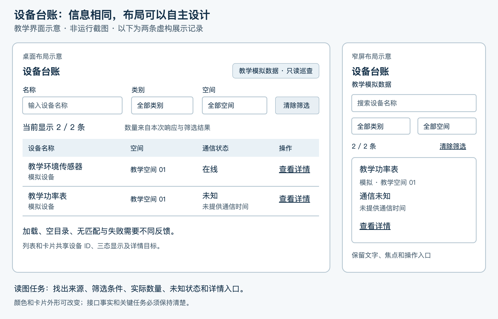
左侧桌面布局依次为标题、教学模拟来源、搜索和筛选、结果数量及两条设备行；右侧窄屏保留相同操作和一张设备卡片。示例显示两条返回记录，不代表最终十六台设备已加载。
可编辑图源：ch06-01-device-wireframe.svg

在纸上补画另三个画面：请求正在进行；查询成功但没有匹配结果；第一次请求失败。每个画面只回答读者现在最需要知道的事。失败时提供重试和简明原因；无匹配时提供清除筛选；加载时告知正在读取，不把结果数量先写成零。
1.2 一个组件承担一个可以说清的职责
组件拆分的依据是职责，不是把每一行 HTML 都做成文件。台账页面组织资源状态与筛选条件，筛选组件接收选项并发出变化事件，列表组件显示结果，通信标签组件统一三态文字。设备详情只接收稳定设备标识，不依赖用户从哪一行点进来。

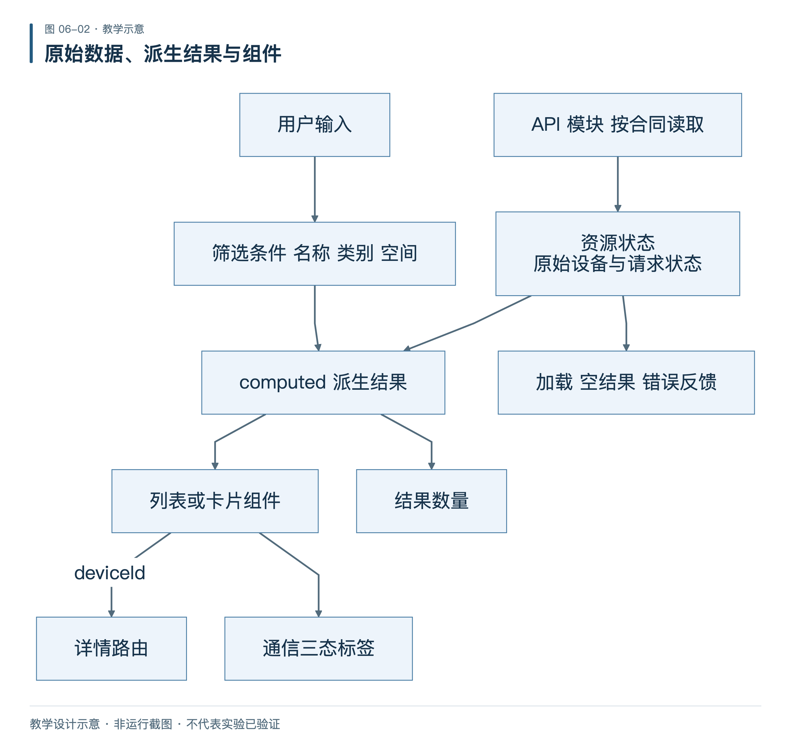
API 产生原始资源，用户输入产生筛选条件，二者共同计算列表与数量；请求状态决定反馈，设备标识决定详情目标。图中没有修改原始列表来完成筛选的箭头。
可编辑图源：ch06-02-components-state.mmd
父组件通过 props 向子组件传数据，子组件通过事件表达“用户想更换空间”这样的意图。子组件不要直接改父组件传来的设备数组。这样可以追踪每次变化的来源，避免同一状态被多处偷偷改写。这个单向数据约定可参阅 Vue 官方 props 指南。
1.3 本地状态与共享状态
只在台账使用的搜索文字，先放在页面的 ref 中；筛选结果用 computed 得到。需要跨页面共享的能力与身份，在教师骨架约定的 Pinia store 中管理。设备数据是否共享，要看详情页的读取策略；共享时只保留一份明确来源，不要在 store、父组件和子组件各复制一份并分别更新。
还要区分“接口事实”和“显示文字”。online:null 是事实，“通信未知”是中文显示；category:"energy" 是合同值，“能源”是标签。若把显示文字写回设备对象，后端字段比较和分类筛选就会失效。组件可以转换表达，不能改变事实。
模块二 实现设备列表 筛选与详情（2 学时）
2.1 先把响应读对
打开第05章保存的响应，沿 {code,message,data} 找到 data.items。再读教师请求封装：调用者得到的是整个外层，还是已经解包的 data？这一步必须从代码确认。同样的 response.data 写在不同封装上，可能分别代表外层或业务数据；多解包一次会得到 undefined。
设备类型沿共享合同定义，至少保留 id、tableId、name、category、spaceId、online、communicationTime、simulated 和 tags，并与后端可空字段一致。若使用参考合同中的 spaceName、switchOn，也须保持原语义。不要为了列表方便把 online 改成不含 null 的 Boolean。
类型声明能帮助检查代码，不会自动验证网络 JSON。教师请求层需要按冻结合同进行基本结构核验；字符串 "false" 不是 Boolean false。遇到结构不符，应显示可定位的错误并保留安全摘要，不能用 as Device[] 假装完成校验。教师会在后续资源制作中确定统一验证方式，本章不安装新的验证库。
若请求封装使用 Fetch，HTTP 失败仍需检查响应状态，不能只靠 catch 判断所有非成功响应；网络失败与服务器返回错误是不同情况。接口业务状态也要独立检查。这一点可核对 MDN 的 Fetch 使用说明。
2.2 让筛选成为可解释的计算
先渲染两台最小设备，再补齐完整数据。将名称、类别、空间三个条件放在一处计算，结果由全部条件共同决定。以下是教学片段，假设已从教师冻结类型文件导入 Device，且请求成功后由资源层赋值 devices；这段不含完整请求、错误处理或页面模板。
import { computed, ref } from 'vue'
// Device 必须导入本工程按合同定义的类型，本片段不另定义第二套。
const devices = ref<Device[]>([])
const keyword = ref('')
const category = ref<Device['category'] | ''>('')
const spaceId = ref('')
const visibleDevices = computed(() => {
const q = keyword.value.trim().toLocaleLowerCase()
return devices.value.filter((device) => {
const nameMatches = device.name.toLocaleLowerCase().includes(q)
const categoryMatches = category.value === '' || device.category === category.value
const spaceMatches = spaceId.value === '' || device.spaceId === spaceId.value
return nameMatches && categoryMatches && spaceMatches
})
})
const visibleCount = computed(() => visibleDevices.value.length)
空名称条件匹配全部设备，空类别和空空间表示不限制。三个条件通过 && 组合，因此“名称符合”不会覆盖“空间不符”。清除按钮将三个条件恢复为空，不需要重新造一份设备数组。不要把 devices 直接赋成筛选后的数组，否则清除筛选时原记录已经丢失。
数量文案可以是“显示 3 / 16 条”，分别来自派生结果和当前成功响应的原始列表。若这次只返回两条，就显示“2 / 2”，并在完整性信息中如实说明资源状态，不能为了最终规模目标显示“2 / 16”并暗示其余十四条已在浏览器。当前设备接口不是分页接口，不能自行添加尚未定义的服务器分页参数。
2.3 不用真假判断吞掉未知
通信三态的显示可以先写为一个容易检查的纯函数，再由表格和卡片共同使用。
// 教学片段：只负责已通过合同校验的三态显示。
function communicationLabel(online: boolean | null): string {
if (online === true) return '在线'
if (online === false) return '离线'
return '未知'
}
online ? '在线' : '离线' 会把未知归为离线；online || '未知' 会把明确离线归为未知。颜色只能辅助文字，不能用绿色圆点独自承担含义。通信时间缺失时显示“未提供通信时间”，不要自动填当前时间。
空间也有两层未知：设备的 spaceId=null 表示未提供来源空间；有来源空间但没有本地楼栋绑定，则显示空间名称，并说明“尚未绑定楼栋”。把二者都写成“无设备位置”会让管理人员不知道下一步该补来源数据还是登记本地关系。
教学来源可在页面头部展示“教学模拟数据”；若页面读取 overview，则同时使用真实返回的 source。不要把 /devices 没有返回的来源字段随意塞入 Device。每个模拟设备保留标记，真实 AIRIOT 中的模拟对象将来也同样需要 simulated=true。
2.4 将加载过程也当作界面的一部分
图 06-03 刻意区分“接口返回空目录”和“筛选没有匹配”。二者都没有可显示设备，但下一步动作不同。首次失败不能出现“暂无设备”；已有成功快照后重试失败，可以保留旧数据，同时标明更新失败及最后成功时间。身份切换后的旧数据则要清理，第08章会解释原因。

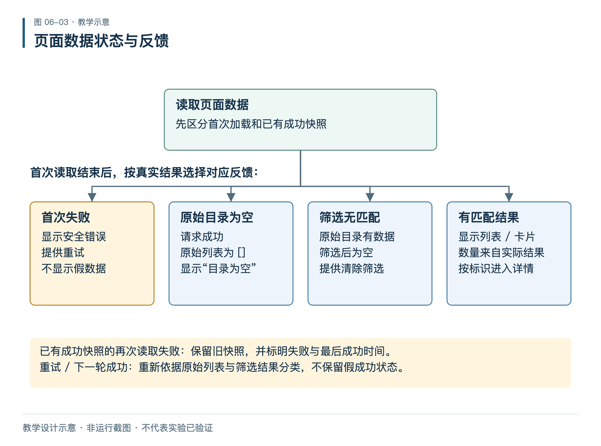
首次读取进入加载，成功后区分原始空目录、筛选无匹配和正常列表；首次失败展示错误，已有结果的再次读取失败保留带说明的旧快照。
可编辑图源：ch06-03-page-states.mmd · SVG 版式源

实现时，可以使用明确的状态字段或带类型的联合状态，避免多个 Boolean 出现“既加载又空又报错”的不可能组合。至少保存原始数据、是否曾成功读取、本次请求状态和安全错误信息。渲染分支先判断首次加载或首次失败，再计算成功数据的空状态。
2.5 详情入口传递标识，并处理直接进入
列表循环使用 device.id 作为稳定 key，详情导航也使用该标识。数组下标会随着筛选和排序改变，不能承担设备身份。前端详情路由的名称和路径由教师工程冻结；它与后端 API 路径属于不同层，不能因为做详情页就凭空调用合同中没有的 /campus/devices/{id}。
当前合同下，详情可以从已读取的设备列表按 ID 查找；直接刷新详情页时，要通过既有读取接口重新获取列表再查找。找到前显示加载，成功读取后仍找不到才显示“设备不存在或已不在当前目录”。请求失败时应显示无法读取，不能误称设备被删除。第07章再把这个设备的合法点位与历史查询连起来。
2.6 最小实验与网页 AI 小任务
按以下顺序在拟定工程实施，结果均待实测：先手绘四种状态，再核对类型和请求封装；完成两台设备的普通列表；增加三种筛选和清除；接入详情；最后切换完整资源并做三态样例。每一步保存一个可解释的差异，不一次替换整页。
请作为我的 Vue 3 助教。我会提供真实 Device 类型、请求封装、现有列表页面和纸面草图。
本轮只做名称、类别、空间组合筛选与结果数量。按全部条件共同匹配，不修改原始设备数组；类别和空间提交合同值与 ID。
沿用现有组件和依赖，不安装新 UI 库。online 的 true、false、null 分别为在线、离线、未知。来源和模拟标记不能删。
先说明状态放在哪里、每个 computed 依赖什么；随后给最小修改及清除筛选、无匹配、有效离线三个检查步骤。
不要新增后端接口，不声称已在我的浏览器测试。若缺少文件或封装定义，明确指出缺少什么。
当 AI 建议“一律用 Pinia 保存所有变量”时，请它说明哪些变量需要跨页面共享。若它给出大量视觉样式，却没有首次失败分支，把任务拉回状态图。一次回答只解决当前缺口，学生亲自运行教师验证过的类型检查入口，并查看实际网络响应。模型名称按网页实际显示记录，无法确认写“未显示”。
模块三 检查交互与解释页面状态（1 学时）
3.1 让同学完成一个具体任务
把“找出指定空间中的环境设备并打开详情”交给同学，先不口头指导。观察对方是否看见筛选标签、能否理解未知状态、是否打开了正确设备。记录卡住的位置和实际操作，再讨论原因。偏好蓝色还是绿色属于视觉选择；找不到“清除”按钮或误把未知当在线则是可验证的问题。
用键盘从搜索框开始，依次访问选择器、清除、详情和返回，确认焦点可见且顺序合理。每个输入有可感知标签，图标按钮有文字名称；错误不能只靠颜色。窄屏时可改用卡片或明确可滚动表格，但关键操作不能被固定宽度或覆盖层藏住。记录开发工具实际视口宽度，这种仿真不等于实体手机验收。
| 待执行验收 | 预期 | 证据与人工检查点 |
|---|---|---|
| 数据解包 | 列表对应 data.items 的实际记录 |
网络响应、页面与请求封装位置 |
| 组合筛选及清除 | 条件共同生效，清除后原数据恢复 | 输入顺序、结果 ID 与数量 |
| 三态和来源 | 在线、离线、未知明确，模拟标记可见 | 三个独立夹具及页面 |
| 加载、空与失败 | 反馈不同，失败不冒充空目录 | 状态截图、实际 HTTP 结果 |
| 详情与刷新 | ID 对应正确，直接进入可重新读取 | 路由参数、读取记录 |
| 键盘及窄屏 | 主要操作可达，无关键信息遮挡 | 焦点路径、视口及截图 |
3.2 常见错误与定位
页面空白时，先检查控制台安全错误和响应结构，再检查组件取值，不立即重写整个页面。数量始终十六时，查它是否绑定了硬编码或原始列表长度。筛选后点击错设备，查 key 和路由是否使用下标。离线显示未知，查真假默认表达式。接口失败却出现“无匹配”，查渲染分支是否在成功之前使用了初始空数组。
还有一种问题只在快速操作时出现：A 请求较慢，B 请求后发先到，A 最后又覆盖 B。筛选在本地计算时通常不需要每次输入都请求；确需异步读取时，记录本次查询身份，取消或忽略过时结果。第07章会把这一问题延伸到历史和轮询，第08章则要求旧身份的响应绝不能恢复新身份页面的权限。
3.3 练习与答案要点
**练习一：**接口成功返回十六条，当前筛选只匹配三条。页面应显示哪个数字？**答案要点：**可显示“3 / 16 条”，两个数字各有来源；若只写结果数，写三条。最终预期规模不能代替当前响应数量。
**练习二：**设备有 spaceId，但对应空间 buildingId=null。应该删除详情入口吗？**答案要点：**不应。设备仍存在，可以显示来源空间和“尚未绑定楼栋”；位置缺项不意味着设备不可读取。
**练习三：**同学将筛选函数的三个条件改成 ||，会怎样？**答案要点：**只要名称、类别或空间任意一项符合就入选，违背组合筛选。用一台名称符合但空间不符的夹具，即可发现差别。
课后用同一份数据画另一种列表，说明它如何帮助同一个巡查任务。进阶可做排序或筛选条件保留，但先规定刷新、返回和清除的行为，不增加必修后台功能。
交给第07章的材料包括详情入口、按合同定义的类型、资源状态、已验证的三态显示、请求封装说明、实际截图和未通过项目。当前不把电压、功率做成费用或能耗卡片；数据含义和历史展示将在下一章展开。共用依据见教学接口约定。
第 07 章 实时监测、历史与数据质量
值班人员看到功率卡片上写着“0 kW”，准备判断设备已经停机。此时有三种可能：设备确实采到了零；数据没有返回，被程序补成了零；十分钟前的零仍留在页面上，被当成当前读数。数字相同，能够支持的判断却完全不同。
本章要让每个读数携带解释它所需的证据：值、单位、采样时间、观察时间、质量和来源。我们将从一个最新点值走到一条历史曲线，再故意制造缺失和失败，检查页面是否仍然诚实。“实时”在本课程中表示按约定刷新观察，不表示无延迟，也不表示已经连接真实设备。
本章状态为 DRAFT_WRITTEN，lab_verified=false。图表和 JSON 均为教学样例，实验待教师完成模拟数据、可控时钟、故障夹具和图表骨架后实测。当前文档没有提供已验收的监测程序。
进入条件与学习目标
第06章应已能按稳定 ID 打开设备详情。你需要阅读共享合同中的 Point、History、来源和教学参数，并取得教师冻结的点位单位清单。必须使用可控教学时钟，不通过修改电脑系统时间制造故障。
完成后，你应能手算质量边界，解释零和未知的不同；用 epoch 毫秒正确请求历史；让图表与原始样本对应；实现不重叠的刷新；在失败、截断及离页时保持正确状态。基础作品只要求一类合法点位的历史视图，不要求堆叠多个大屏。
模块一 读数成立需要哪些条件（1 学时）
1.1 一条点值有两个时间
Point.time 是采样时间，即来源声称测量发生的时刻；响应的 observedAt 是本次观察时间。后端应在一次观察中使用一致的可控时钟基准，避免列表前后两条点因读取当前时间不同而落在阈值两侧。前端负责显示后端判定结果，不根据浏览器时钟自行改成另一种质量。
例如观察时间为 1700000060000，采样时间为 1700000000000，相差 60000 毫秒，也就是 60 秒。这里用的是固定教学时刻，不是当前实测记录。若用观察时间替换采样时间，所有历史读数都会显得刚刚更新，刷新按钮也会变成掩盖过期的工具。
HTTP 成功只说明请求得到了响应。quality="fresh" 说明该点通过本课程的新鲜度规则，也不能证明传感器校准正确。数据来源、对象是否模拟和质量是不同维度：source="AIRIOT" 的对象仍可能 simulated=true；教学模拟器也可以故意返回 stale。
1.2 用边界例子理解四种质量
共享合同固定如下规则：合法采样距观察时间超过 60 秒为 stale，恰好 60 秒仍为 fresh；未来超过 5 秒为 invalid，未来 5 秒以内作为时钟容差，保留原始时间。值或时间缺失为 missing；非预期类型、非有限数值或非法时间为 invalid。所有有效数值都包括零。

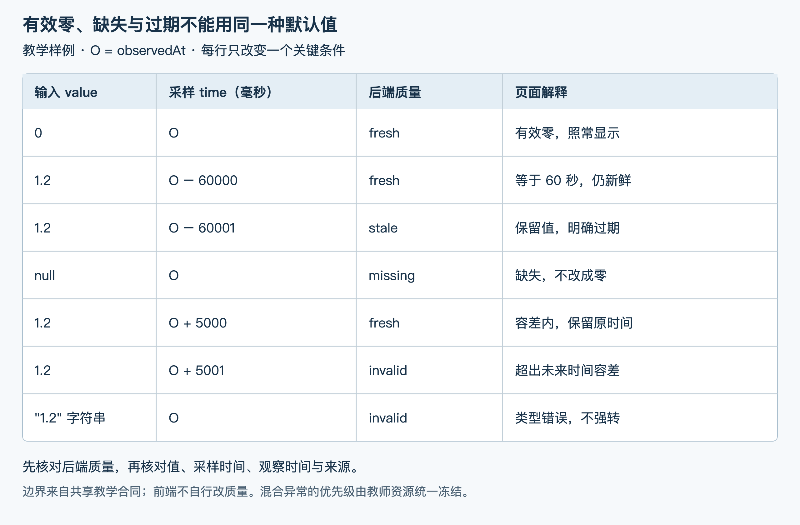
观察时间固定为 O，合法零在 O 时刻是 fresh；O 减 60000 毫秒仍 fresh，减 60001 毫秒为 stale；缺失值为 missing；O 加 5000 毫秒在容差内，加 5001 毫秒为 invalid。另列数值字符串为无效类型。
可编辑图源：ch07-01-quality-cases.svg

读图后先在纸上判断，再看程序。每条夹具尽量只触发一个问题，避免“值缺失又是未来时间”使质量优先级难以判断。多异常并存的判定优先级须在教师资源中统一冻结，本章不自行增加共享合同规则。非法原始值应在数据适配边界识别，不能先用 Number(rawValue) 强制转换，再声称类型正确。
null 是没有可用值，0 是测得的零，字符串 "0" 又是另一种类型。JSON 不能表达 NaN 或正负无穷，适配器测试这类数值时要使用适合的内部夹具，不把它们写成所谓合法 JSON。前端数值格式化也应检查 null，不能用 value || 0 或 value || '--'。
1.3 单位限制了能够讲述的结论
V 表示电压，kW 表示功率，kWh 表示能量。一个 1.2 kW 的瞬时读数没有给出持续时间，也没有累计电量。即使有几条功率样本，在采样间隔、缺失、积分规则和计量边界尚未明确时，也不能自动生成用电量、费用或节能率。
本章在标题、坐标轴和样本表保留单位。两条曲线数值相近但单位不同，不能放在同一尺度上比较大小。基础实验先完成单点历史；同单位多设备比较是进阶，且仍需逐台保留来源、时间和失败信息。
模块二 从最新值走到可信的历史展示（2 学时）
2.1 先实现一个可解释的最新值
在教师发布的独立工程里，读取 /campus/overview，按 deviceId、tagId 找到当前设备的合法采集点。不要用列表第一个点冒充所有设备的温度，也不要从名称猜测单位。最新值卡片至少显示点名、格式化后的值或“缺失”、单位、采样时间、后端质量、观察时间和来源。
对 stale 保留原数值，同时明确标记过期；对 missing 显示缺失原因或缺项；对 invalid 显示无效，安全的异常说明由后端提供。不要把无效原值当成正常曲线点。完整性另行计算：返回十六台设备，不表示二十八个点都有效；期望数量、实际数量与质量数量是不同指标。
以下类型片段仅解释显示函数的输入，完整 Point 仍须沿共享合同包含设备、表和点位标识。本片段不是运行时校验器。
type Quality = 'fresh' | 'stale' | 'missing' | 'invalid'
type PointDisplay = { value: number | null; quality: Quality; unit: string }
function valueText(point: PointDisplay): string {
if (point.quality === 'invalid') return '无效'
if (point.value === null) return '缺失'
return `${point.value} ${point.unit}`
}
// stale 的标签、采样时间和观察时间仍须在组件中单独显示。
若 value 有值但 time=null，质量为 missing；界面可以保留值并明确“采样时间缺失”，不能因为显示函数返回数字就移除质量标签。值、时间和质量应一起阅读，不能用一个字符串函数承担整个判断。
2.2 把历史查询条件固定下来
历史入口为 GET /campus/history，参数为 deviceId、tagId、from、to。所有时间都是 epoch 毫秒。课堂提供 15 分钟和 1 小时选项，最大跨度 6 小时，每次最多 1000 样本；这是教学版规则，不是对现有学校系统参数的描述。
教师资源应给出同一可控时钟的当前观察基准。相对时间选择由这个基准计算，不能把电脑当前时间与冻结历史混用。选好窗口后保存本次的 from/to，完成前不要反复改变它们。边界样本包含规则由教师冻结的合同补充与测试统一，学生不得各自裁剪不同端点。
后端校验设备是否属于允许目录、点位是否属于该设备、时间是否为合法毫秒值、顺序和跨度是否有效。不允许前端提交任意表名、项目地址或来源凭据。非法参数返回 400，不存在的目录对象按合同返回 404；上游失败为适当的 502/503，不能被当作学生登录过期。
下面的 JSON 是固定教学样例，用于核对一条曲线与表格；不是接口运行证据。
{
"code": 0,
"message": "ok",
"data": {
"source": "TEACHING_MOCK",
"deviceId": "teaching_energy_01",
"tagId": "power",
"unit": "kW",
"from": 1700000000000,
"to": 1700000180000,
"observedAt": 1700000180000,
"samples": [
{"time": 1700000000000, "value": 0},
{"time": 1700000060000, "value": null},
{"time": 1700000120000, "value": 1.2},
{"time": 1700000180000, "value": 0.9}
],
"truncated": false,
"issues": []
}
}
此处 null 表示来源明确返回的缺失样本，原始表仍保留该行。若某时刻完全没有样本，不得新造一行并声称实际测量过。样例没有额外问题说明，缺失仍可由原始样本直接发现。
2.3 图上的点必须能回到样本表
先渲染原始样本表，再接图表。这样可以逐个核对：第一条是否为零，最后一条时间是否正确，单位是否一致，缺失值是否还在，返回记录是否被悄悄合并。若为绘图需要排序，应使用副本，明确时间顺序，不删除原始样本；同一时间出现多条记录时，不能擅自取平均或去重。

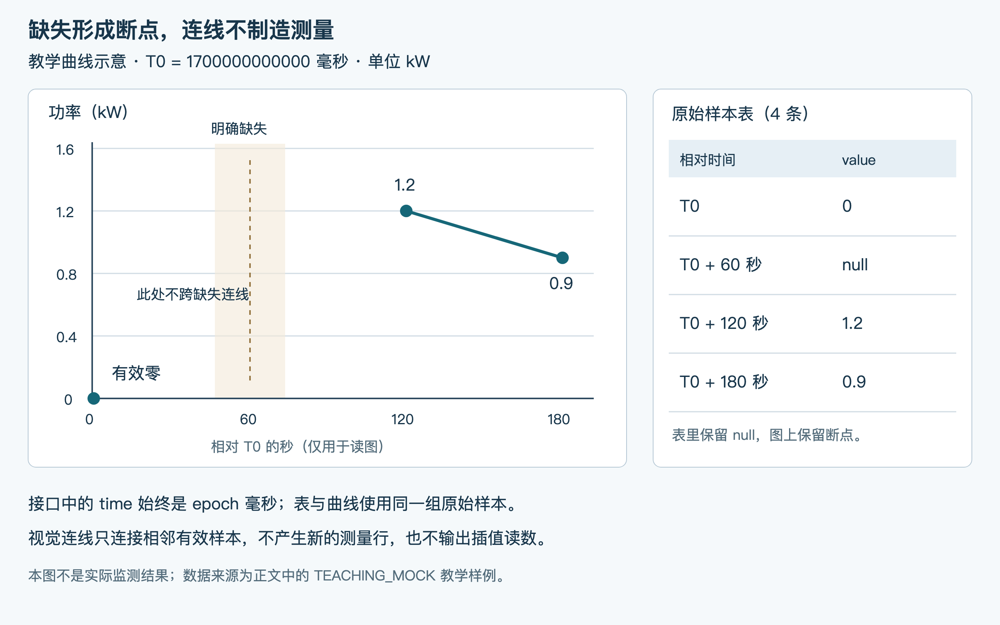
T0 的 0 kW 保留在零刻度；T0 加 60 秒为 null，曲线在此断开；加 120 秒和加 180 秒分别为 1.2、0.9 kW，可以视觉连线，右侧表保留四条原始记录。横轴为相对 T0 的秒，仅用于读图，接口时间仍为 epoch 毫秒。
可编辑图源：ch07-02-history-gaps.svg

图 07-02 的连线帮助眼睛跟踪有效样本，不产生中间测量。缺失或无效样本按断点处理，不能跨越明确缺失画连续趋势。教师 ECharts 骨架须把空值交给缺失表示并关闭跨空值连接；实际选项按冻结版本验证，不凭空调用“补齐曲线”的方法。图上可交互读取的测量值应能回到真实样本。
truncated=true 表示当前返回结果不完整，页面须说明限制，不能只显示“最近一小时全部数据”。恰好收到 1000 条也不能自行推断一定截断，后端必须有明确的截断判定。issues 保留查询限制或局部问题；空样本显示“本次查询没有样本”，失败显示“本次查询失败”，二者不能共用一个结论。
2.4 一轮结束后再等 15 秒
使用固定间隔启动请求，若一次读取耗时超过间隔，就会发生重叠。共享合同采用更简单的节奏：本轮无论成功还是失败，都在完成后等待 15 秒，再发下一轮。请求超时由教师请求封装提供，避免永不结束的请求让循环永久停住。

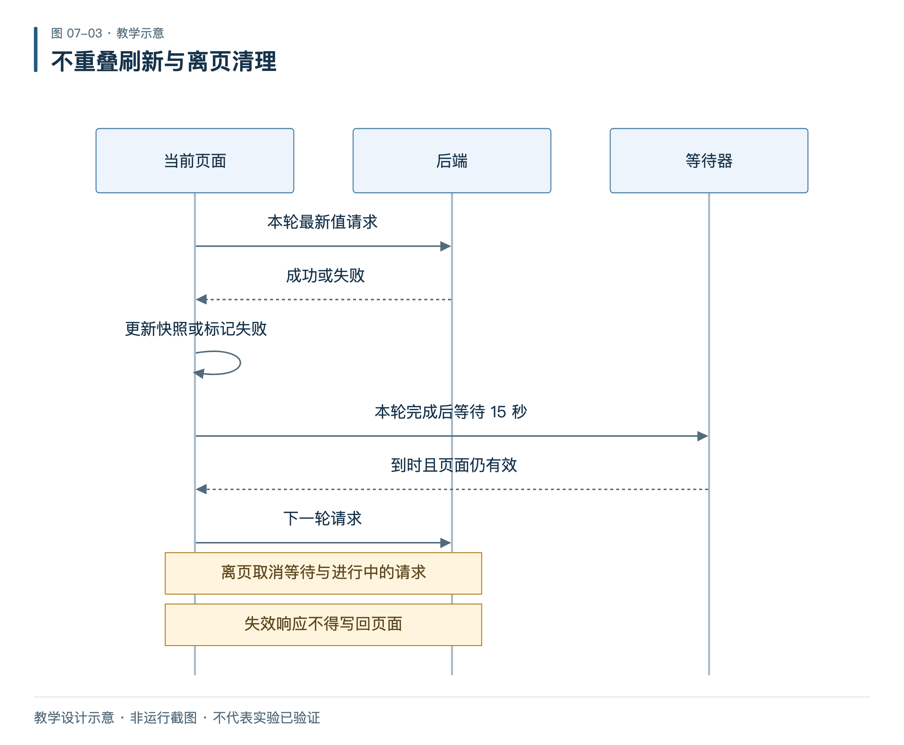
请求完成后才开始十五秒等待；页面离开时清理等待器并取消进行中的请求，已经失效的响应也不能重新写入状态。
可编辑图源：ch07-03-refresh-lifecycle.mmd
以下为流程伪代码，读取最新值、取消当前请求 等不是现成 API。实施时要接教师的请求封装和页面生命周期，不可原样粘贴当作可运行代码。
进入页面：建立本次生命周期标识，立即执行一轮
一轮：
如果页面已失效，则返回
开始请求，并保留本轮标识
成功且标识仍有效：保存快照与成功观察时间，清除本次错误
失败且标识仍有效：保留同一查询的旧快照，记录本次失败
本轮完成且标识仍有效：安排 15 秒后的下一轮
离开页面或更换生命周期：
使旧标识失效，取消等待，取消当前请求
旧请求即使迟到，也不能提交结果或安排新一轮
取消请求与阻止旧结果写回要同时考虑。设备或点位切换后，新结果属于新查询，旧设备快照不能放在新标题下面。历史请求至少用设备、点位和窗口识别本次查询；快速切换时忽略过时响应。Vue 对请求副作用的清理方式可参阅 官方侦听器说明，实际 API 仍以教师冻结的 Vue 版本为准。
刷新失败后，旧快照中的 quality 是上次后端观察时的判断。前端保留它，但同时标明“更新失败，以下为上次成功数据”及时间；不能在旧 fresh 标签旁只写“实时正常”。也不要用浏览器时钟偷偷重算后端质量。若同时查询多个点，应分别保存结果、错误和观察时间；一个点失败不清空全部成功点。
2.5 最小实验与网页 AI 协作
实验先完成一个最新点、一类历史和原始表，再增加轮询。按独立夹具顺序检查有效零、缺失、阈值、未来时间、截断、接口失败和离页。教师若尚未提供错误注入入口，这些项标待制作，不在现有平台上制造故障。
我正在做智慧校园教学项目。请先阅读我提供的 Point/History 类型、详情页、请求封装和两份模拟响应。
本轮只做数据展示和请求生命周期。时间为 epoch 毫秒；质量由后端判定。超过 60 秒才 stale；未来超过 5 秒 invalid；有效零保留，缺失不补零，原始样本不插值。
历史默认 15 分钟或 1 小时，最大 6 小时，最多 1000 样本，准确呈现 truncated 与 issues。source 与 simulated 分开，不能把 V/kW 变成 kWh、费用或节能率。
最新值每轮完成后等 15 秒，离页停止，失败保留同一查询的旧快照并显示时间；切换设备后旧响应不能覆盖新结果。
先用文字解释两份响应会怎样显示，再给最小改动和边界检查。不要新增数据源连接，不声称已经实测。
审查 AI 输出时尤其寻找 value ?? 0、time = Date.now()、跨空值连线以及 setInterval 无清理等写法。不能只要求“让图正常”，应把错误样本和预期一起提交。学生自己执行检查，记录实际模型显示名称、修改文件和未验证假设。
模块三 用故障判断页面有没有误导（1 学时）
3.1 人工核验顺序
一人选择固定夹具，另一人只看页面解释发生了什么，再打开响应核对。若观察者把缺失说成停机，或把旧数据说成刚采样，说明界面还没有准确表达信息。证据至少同时包含输入样本、后端判断和页面表现，单独一张漂亮曲线不足以定位问题。
| 待执行验收 | 预期 | 证据 |
|---|---|---|
| 有效零及缺失 | 零可见，缺失不变零 | 固定样本、原始表和页面 |
| 60 秒边界 | 60000 毫秒 fresh，60001 毫秒 stale | 可控时钟及后端结果 |
| 未来时间边界 | 5000 毫秒容差，5001 毫秒 invalid | 独立时间夹具及结果 |
| 历史限制 | 窗口及上限合法，截断提示准确 | 请求、样本数、限制说明 |
| 刷新失败 | 保留同查询旧快照并明确最后成功时间 | 两次请求及页面变化 |
| 生命周期 | 不重叠，离页无新轮次，迟到结果不写回 | 网络时间线、切页步骤 |
| 多查询部分失败 | 成功与失败分别表达 | 每个查询的结果及时间 |
测试刷新时，让教师故障夹具的耗时超过十五秒，观察下一轮是否仍等本轮完成后再开始。离页后等待一个完整周期，检查没有新轮次；若请求已发出后才离页，还需验证它的迟到结果不会恢复页面状态。这些是待执行方法，不是本稿已有测试成绩。
3.2 常见错误及定位
时间落在 1970 年附近，先核对输入单位和字段含义，不随意乘一千“修到看起来合理”。曲线掉到零，检查适配和图表转换有没有默认值。质量刚好在阈值处错误，检查是否把“超过”写成“大于等于”。每次刷新采样时间都变新，检查是否错误使用观察时间。离页仍请求，检查定时器、请求清理和旧请求的 finally 分支，而不只是把组件隐藏。
设备切换后出现上一台曲线，检查查询标识和响应提交条件；部分查询失败导致所有图消失，检查是否使用一次总失败覆盖了每个资源的状态。问题应沿“原始样本—后端 DTO—请求响应—显示转换”追踪，而不是直接在图上修补数值。
3.3 练习与答案要点
**练习一：**O 为观察时间，合法采样为 O−60000 毫秒和 O−60001 毫秒，分别是什么质量？**答案要点：**前者 fresh，后者 stale；共享合同说“超过 60 秒”，边界必须单独测试。
**练习二：**查询成功返回空样本，能否说该设备一直为零？**答案要点：**不能。空样本只说明本次范围内没有返回测量；既不能推断零，也不能推断设备坏了。需同时查看窗口、来源及 issues。
**练习三：**上次读取显示 fresh，本次请求失败，前端应把质量改成 stale 吗？**答案要点：**不自行重算后端质量。保留上次判断的上下文，明确当前更新失败、快照时间和采样时间，让使用者知道它不是新的质量确认。
**练习四：**只有 1.2 kW 的读数，能否算出本月费用？**答案要点：**不能。缺少可核对的累计电量、时间覆盖和计费规则，数值单位也不同。
课后写一例“图看似合理但证据不足”的修正说明；进阶可比较同单位多设备，但不能省略各自失败和采样语义。交给第08章的材料包括已实现只读接口、质量夹具、刷新与历史状态、实际检查记录和权限待测项。共用依据见教学接口约定。
第 08 章 登录、角色与权限验证
查看者登录后，没有看到“创建校园”按钮。同学因此写下：“权限测试通过。”另一位同学复制管理员曾经使用的请求，在查看者自己的会话里发送，数据库却新增了一条校园记录。页面隐藏得很好，服务端仍然允许不该发生的操作。
本章从这个失败案例认识权限。登录确认当前是谁，授权决定当前身份能否执行某项操作。界面帮助人选择合适入口，后端负责守住业务规则。还要更进一步：两个管理人员属于同一种角色，但第09章中，他们只能处理分别分派给本人的事件。角色相同并不意味着对象范围相同。
本章状态为 DRAFT_WRITTEN，lab_verified=false。所有请求、身份代号和检查结果均为教学设计及待执行预期。教师认证基础、独立账号和恢复工具仍须制作验证；本稿不要求学生从零实现密码算法、JWT、通用账户管理，也不使用现有学校平台凭据。
进入条件与学习目标
进入实验前，应已有第05—07章的设备读取、空间写入和监测页面。教师需要提供至少四个独立教学身份：ADMIN、MANAGER A、MANAGER B、VIEWER；角色只有 ADMIN、CAMPUS_MANAGER、CAMPUS_VIEWER 三种。A、B 是两个管理人员的代号，不是新角色，也不是可直接复制的真实登录账户。
完成后，你应能画出可信身份进入业务服务的路径；根据当前有效账户和启用角色生成能力；在读写服务加入授权；清理前端过时权限；设计并执行越权和撤权测试。本章完成现有功能的权限验收，事件对象范围先准备规则和用例，第09章实现事件后必须完整执行，不能提前记为通过。
模块一 从业务规则得到权限矩阵（1 学时）
1.1 认证与授权回答两个不同问题
认证回答“这个请求代表谁”。教师提供的基础组件校验会话或凭据，并向后端提供可信身份。业务代码不从请求体读取一个 uid 就相信那是操作者。授权回答“这个当前身份能否执行这项动作、影响这个对象”。能登录的人不一定拥有校园读取角色，能读的人也不一定可以写。
身份有效性和角色资格会变化。管理员撤销了某个角色后，用户手上仍可能保留旧登录会话。若业务服务只相信会话创建时记录的旧角色，撤权就没有真正生效。教学合同要求依据当前有效账户与启用角色判断；禁用、锁定或角色撤销必须影响后续请求，不能靠“请用户退出重登”代替后端落实。
账户、角色、能力和对象范围分别承担不同职责。账户有稳定 uid；角色表示一组业务资格；能力供页面表达可用入口；对象范围回答这条事件是否在当前人的处理范围内。任何从浏览器传来的角色文字，都不能自己授予权限。
1.2 三角色与四身份
| 操作 | ADMIN | CAMPUS_MANAGER | CAMPUS_VIEWER |
|---|---|---|---|
| 读取设备、监测、空间及演练记录 | 允许 | 允许 | 允许 |
| 空间及设备责任登记 | 允许 | 拒绝 | 拒绝 |
| 分派、演练触发与模拟来源恢复 | 允许 | 拒绝 | 拒绝 |
| 开始、记录、核实、关闭事件 | 所有符合业务条件的事件 | 仅本人已分派且符合业务条件的事件 | 拒绝 |
| 远端设备控制、外部通知 | 关闭 | 关闭 | 关闭 |
为什么需要两个 manager？只用一个管理人员，测试容易一直选择他自己的事件，从而漏掉对象范围。A 和 B 拥有相同角色，能专门检验“角色通过但对象不属于本人”的情况。这个差异在图 08-01 中通过第二道判断表达。

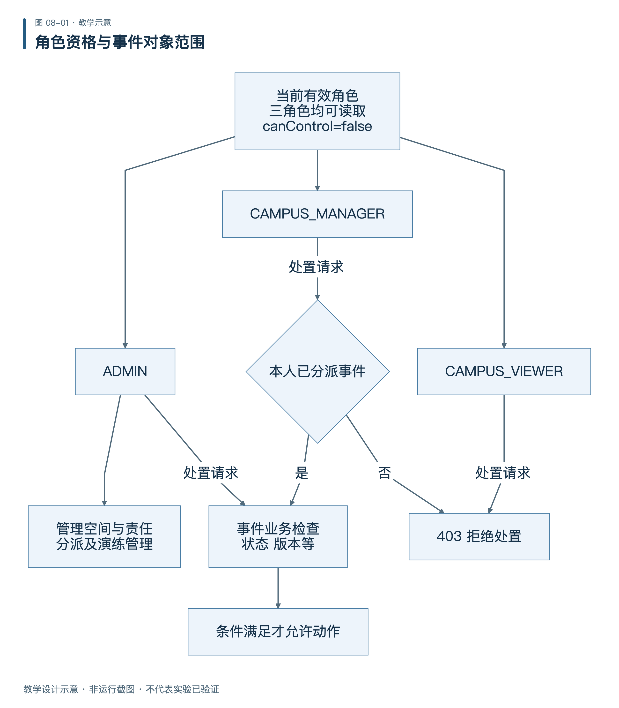
三个角色都可读取，管理员具有管理资格；管理员和本人范围内的管理人员仍须通过事件业务检查；查看者及处理他人事件的管理人员被拒绝，所有角色的设备控制关闭。
图中的管理员处置路径仍进入业务检查，并不绕过状态机。例如未分派事件不能直接开始，已关闭事件不能再写，旧版本不能覆盖新决定。授权通过只是进入业务检查的资格，不能替代第09章的状态、来源恢复、核实和版本条件。
1.3 能力不是万能通行证
GET /campus/capabilities 返回 roles、canRead、canControl、canAdmin、canAudit、canHandleAlarms、canAssignAlarms、canRunDemoScenarios。基础教学中 canControl 对所有角色一律为 false。管理员管理映射和责任，管理人员具备处理资格但仍受本人范围约束，查看者只读。
canHandleAlarms=true 表示有处理资格，不表示用户可以处理列表里的每一条事件。事件详情要结合已分派人及业务状态呈现动作，后端在执行动作时重新判断。前端不能因为拿到一次能力响应，就缓存一个永久的“全能管理员”身份。
接口包含 canAudit 并不要求本章增加通用审计后台。基础课程的审计证据将在事件和责任时间线中形成；参考系统 /campus/audit 主要针对模拟开关，不能当成课程全部行为的综合审计接口。
模块二 让身份 能力与服务端拒绝连起来（2 学时）
2.1 找到可信身份，再找业务边界
阅读教师认证流程图，标出认证组件怎样把当前身份交给业务层，再找出现有设备读取和校园创建的入口。实际类名、会话保存方式和错误转换以教师骨架为准，学生不为了完成业务授权而替换认证基础。
业务授权宜集中在 CampusAccess 一类组件中，由服务调用。Controller 校验 HTTP 参数，Service 在实际操作前调用读取或管理检查，Mapper 执行已获准的持久化访问。若只在某一个 Controller 加判断，另一条调用同一业务服务的入口就可能漏掉规则。也不要在每个 Mapper SQL 里临时拼一个角色字符串，令授权规则散落到难以检查的位置。
图 08-02 用拒绝路径说明边界。它是教学逻辑图，不规定框架每个过滤器的执行顺序；实际认证和异常处理仍沿教师基础。业务状态与版本分支用于为后续事件模块预留认识，本章映射接口不因此新增 expectedVersion。

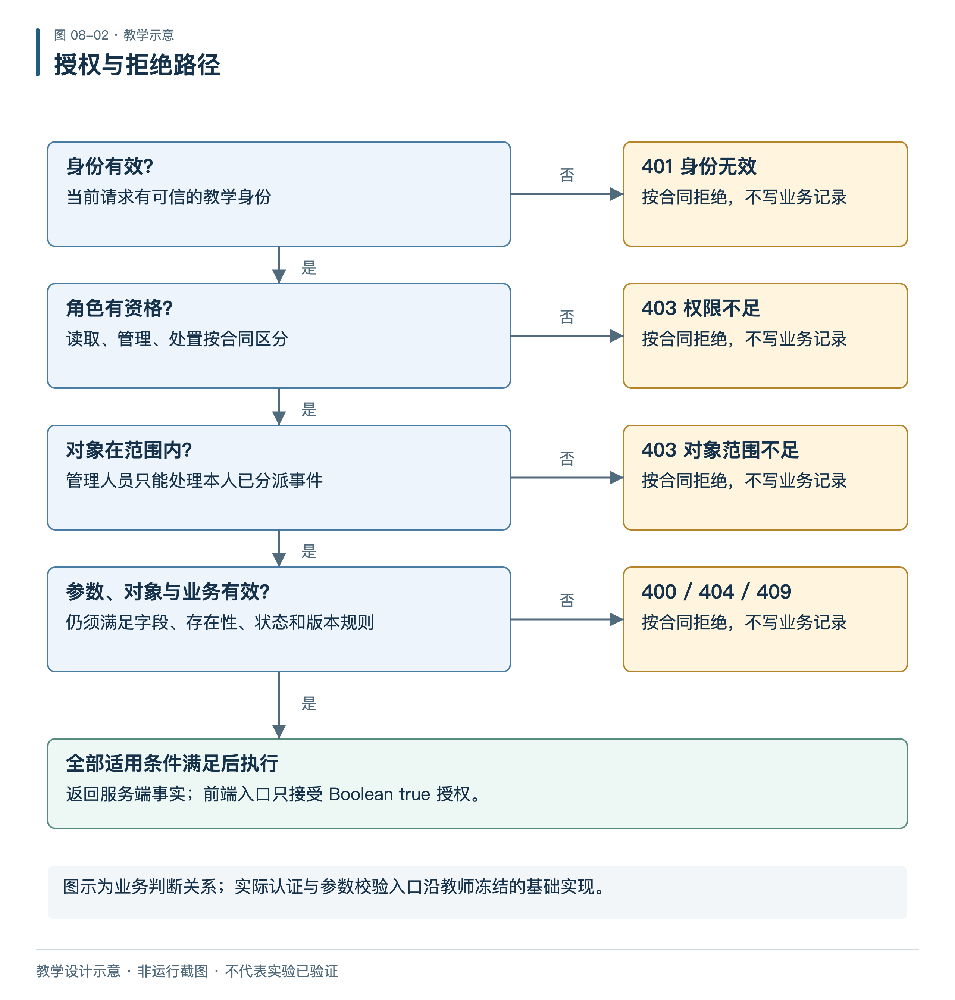
无有效身份的请求返回 401；角色或适用对象范围不符返回 403；授权通过后仍检查参数和业务条件，只有全部满足才执行操作。被拒绝的写请求不得产生业务记录。
可编辑图源：ch08-02-denial-path.mmd · SVG 版式源

本章先给 /campus/devices、/campus/spaces、/campus/locations、overview 和 history 等读取链保留校园读取资格检查，再给创建校园、创建楼栋、绑定空间保留管理员检查。服务不能用 name 是否为空来替代权限检查，也不能为“排除权限问题”临时允许所有人。
2.2 对象范围应写成独立、可解释的判断
下面是第09章将使用的授权伪代码。当前身份已经过有效性检查，角色来自服务端当前数据；这不是现成方法签名，也不表示事件接口已经实现。
是否具备该事件的处理范围（当前身份，当前事件）：
若当前有效角色包含 ADMIN：允许进入事件业务检查
否则若不包含 CAMPUS_MANAGER：拒绝
否则若事件 assigneeUid 为空：拒绝
否则若事件 assigneeUid 不等于当前身份 uid：拒绝
否则：允许进入事件业务检查
明确的非空判断很重要：未分派事件不是“任何 manager 都能处理”。uid 比较也必须使用服务端当前身份与当前事件，不能使用前端提交的 assigneeUid 来替换数据库记录。前端可能把按钮状态算错，后端仍须拒绝越界动作。
将来的事件更新还要在同一事务里读取并锁定当前记录，检查本人范围、版本和状态，再更新主记录与时间线。若对象在另一请求中被重新分派，不能继续相信几秒前页面打开时的负责人。这里先记下检查位置；完整事务和并发验证在后续章节执行。
2.3 能力字段只接受 Boolean true
能力由后端产生，前端仍要严格解释。"true"、1、null、缺失都不能授予权限。下面片段表达的只有显示判断，真实网络数据还应通过教师请求层的结构核验。
// 教学片段：capabilities 是已经核对结构的响应或 null。
const canShowManagement = computed(
() => capabilities.value?.canAdmin === true,
)
Boolean("false") 得到真，因此“统一转 Boolean”会把错误输入变成权限。不要在异常时补一份管理员默认能力；初始、加载失败和未确认身份时都采用不授予能力的状态。前端路由守卫和按钮可见性应读取同一个能力来源，避免菜单说不行、深链接却显示可提交表单。
读取能力失败时，先清除旧能力，显示无法确认当前权限，再提供重试。如果是明确 401，由认证流程处理身份失效；403 表示没有相应资格；网络故障不能冒充“账号已被删除”。即使暂时没有管理入口，后端仍按当前真实角色判定每次请求。
2.4 退出和切换身份要使旧响应失效
第07章提到慢请求可能覆盖新查询。权限里的后果更严重：管理员先请求能力，随后退出并登录查看者；旧管理员响应最后返回，把查看者页面重新点亮。只在退出时清空 store 不够，还必须阻止旧响应写回。

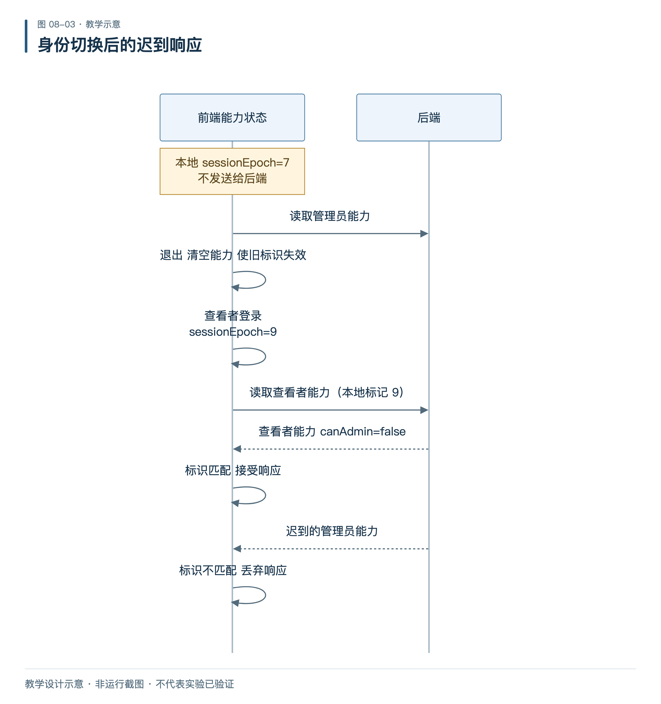
管理员请求尚未返回时先退出并切到查看者；前端接受当前身份的能力，丢弃旧管理员的迟到响应，管理入口不会恢复。
可编辑图源：ch08-03-identity-race.mmd
sessionEpoch 是前端内部的生命周期标识，用来判断结果属于哪次身份状态；它不是会话凭据，也不是事件的 expectedVersion。实施时在退出、切换身份等边界递增，清除旧能力和身份相关数据，并取消旧请求。提交响应前比较生命周期标识；同一身份的能力刷新还要识别请求先后，避免较旧请求覆盖较新的撤权结果。
对于已打开的业务页面，退出时同时停止第07章的轮询。保留同一身份刷新失败时的旧监测快照，与跨身份保留旧数据是不同情况。前者有清楚时间标记可以帮助观察，后者可能把旧身份范围的数据交给新身份，必须清理。
2.5 最小实验按身份和接口展开
先确认教师资源已发布、每组数据库独立、四个教学身份可用，记录当前实际身份代号。用 ADMIN 读取设备并创建一个带明确教学标记的校园，回读确认。随后分别用 MANAGER A、MANAGER B、VIEWER 读取同一目录，检查许可一致；再用各自会话发送同样的校园创建请求，预期全部 403，且数据库不增加记录。
POST /campus/locations/campuses
Content-Type: application/json
{"name":"本组权限实验校园"}
以上是待实测请求正文，具体会话由教师提供的本地 API 请求工具管理，证据中不得保存 Cookie、令牌、密码或完整认证头。不要把管理员请求原封不动复制后误带管理员会话，也不要向现有学校演示接口执行这些写入。
再执行无登录身份的读取请求，预期受保护入口返回 401。最后测试撤权：按教师专用于本组的可恢复工具撤销某个测试身份的管理角色，保留其有效查看角色和当前会话，再次发起管理写入，应由当前权限拒绝；恢复种子后回读确认。这个安排能够清楚测试“身份仍有效但已无管理资格”的 403，不把角色撤销与身份失效混成一个案例。
账户禁用测试单独进行，由认证基础按无效身份规则处理；不通过修改现有系统账户或猜测密码完成。教师未提供隔离与恢复工具时，将该项记为资源待制作，继续完成可独立验证的规则和前端状态审查。
2.6 用网页 AI 查缺口，不把权限交给猜测
请作为业务授权审查助教。我会提供权限矩阵、教师认证模块说明、CampusAccess 相邻代码、capabilities 类型和空间写服务。
本轮仅补齐已有读取与空间写入的业务授权。ADMIN 可管理，CAMPUS_MANAGER 和 CAMPUS_VIEWER 对本章已有功能只读；canControl 对所有角色 false。
使用服务端当前有效身份和启用角色，不相信请求中的角色、actorUid 或时间。前端仅 Boolean true 授权，失败清除旧能力；旧身份迟到响应不能写回。
先列出缺少授权的位置与证据，再给小步修改及三角色允许/拒绝用例。不要重写密码、JWT 或通用账户管理。
第09章本人事件尚待实现，只提供范围规则和待测用例，不能声称已通过。分开说明隐藏按钮、路由阻止、后端拒绝和数据库无变更各证明什么。
对 AI 回答做两项人工检查：它是否为了简单只看 roles.includes(...) 的前端字符串；它是否只写了允许路径而没有拒绝路径。把实际脱敏错误和最小代码贴回网页，要求修正一个缺口，不提交凭据。学生记录网页实际显示的模型名称，未显示则如实写明。
模块三 用拒绝证据证明边界（1 学时）
3.1 一条拒绝需要三类证据
先证明测试身份正确，再证明服务端明确拒绝，最后证明业务没有发生。请求返回 403 而数据库已经新增记录，仍是严重缺陷；页面没有按钮但没有发直接请求，也不足以证明后端边界。每条证据记录资源版本、身份代号、操作、预期、实际状态和事后回读，秘密字段脱敏。
| 待执行验收 | 预期 | 验证证据 |
|---|---|---|
| 四身份读取 | 三种角色均可读已授权校园数据 | 各身份独立响应 |
| 空间写入 | 仅 ADMIN 允许，其余 403 且无新增 | 直接请求、数据库或独立回读 |
| 无有效身份 | 受保护接口 401 | 无身份请求结果 |
| 严格 Boolean | 字符串、数字、null、缺失不授权 | 能力状态夹具及页面 |
| 能力失败与退出 | 旧权限清空，旧数据和轮询清理 | 故障、切换及网络记录 |
| 迟到管理员响应 | 不恢复查看者管理入口 | 可控延迟及响应顺序 |
| 角色撤销 | 当前会话后续写入被拒绝 | 撤销、请求、恢复记录 |
| 本人事件 | 本章仅形成用例，第09章再执行 | A/B/未分派测试计划 |
第09章至少要补做：A 处理已分派给 A 的合规事件；B 对同一事件被拒；A 对未分派事件被拒；重新分派给 B 后 A 立即失去处理范围；ADMIN 也不能跳过关闭门槛；VIEWER 不能通过直接请求处置。届时需同时检查主记录、版本和时间线，被拒绝的动作不应留下成功业务变化。
3.2 常见错误与定位
| 现象 | 定位重点 | 修正方向 |
|---|---|---|
| 查看者直接请求仍能写 | 业务服务是否调用授权 | 在执行边界补规则并重测拒绝 |
| 退出后旧按钮重现 | 迟到响应是否写回 store | 失效标识、取消及提交条件一起检查 |
| 撤权后旧会话仍可管理 | 是否只信登录时角色快照 | 根据当前有效账户和角色授权 |
| 所有请求都是 401 | 登录基础、会话携带、代理路径 | 修复认证链，不扩大角色绕过 |
| 数据源失败使学生退出 | 上游错误是否误转 401 | 按合同返回适当 502/503 |
| 测试声称拒绝却多一条记录 | 检查是否先写后授权或异常处理错误 | 先授权，核对事务和事后状态 |
403 不是普通页面错误，它可能是正确保护。调试时先确认预期，再决定是否修改代码；不要看到红字就请求 AI “把报错去掉”。同样，HTTP 200 也不是任何身份都应该得到的目标。
3.3 练习与答案要点
**练习一：**管理人员能力中 canHandleAlarms=true，能否处理同角色同学的事件？**答案要点：**不能。该能力只表示处理资格，后端还要核对当前事件的已分派 uid，且所有业务门槛仍成立。
**练习二：**把按钮隐藏、加路由守卫、后端返回 403，哪个可以单独证明被拒操作没有写入？**答案要点：**三者都不能单独证明数据没有改变。后端拒绝是必要证据，还要检查持久化结果；前两者主要说明界面行为。
**练习三：**能力响应中的 canAdmin 是字符串 "false"，Boolean(...) 的处理为何危险？**答案要点：**非空字符串转换为真，可能错误开放入口。只接受 JSON Boolean true，并对不合合同的数据报出可定位问题。
**练习四：**本人范围检查在打开详情时做过一次，更新时能否省略？**答案要点：**不能。事件可能已重新分派；执行时必须用当前记录、当前身份及版本重新判断，和后续事务规则配合。
课后提交一个查看者绕过页面仍被拒绝的测试设计和一例权限误判的修正记录。进阶可研究角色缓存失效，但须保留当前角色变更对后续请求生效的合同，不能以缓存方便为由削弱边界。
交给第09章的材料包括权限矩阵、可信身份获取位置、当前角色查询方式、能力状态与清理逻辑、已有功能的实际拒绝证据、两个 manager 的独立身份代号，以及尚未执行的本人事件用例。第09章完整事件实现后再验收这些用例；本章的规则推演不替代后续实际请求和数据库证据。共用依据见教学接口约定。
第 09 章 演练事件与状态机
校园管理人员打开设备页，看见温度巡查演练提示，点击“已处理”，页面便出现一个绿色对勾。这个操作看起来很顺利，但旁观者仍然不知道：谁接下了任务，做过什么检查，演练来源有没有恢复，以及谁判断可以结束。如果页面刷新后对勾又消失，还说明这次操作可能根本没有保存。一个可信的业务系统需要把这些问题逐一回答出来。
本章以 teaching_env_01 的温度巡查为贯穿场景，把一句“有人跟进并完成事件”拆成可判断、可拒绝、可追溯的动作。这里的事件由教学程序创建，保留 sourceType=DEMO、sourceScope=LOCAL_DEMO、simulated=true。它不表示关联设备真的发生温度异常，也不修改采集值或上游原始报警。页面上的标题应说明“本地演练事件”，避免让使用者误以为接到了真实故障。
本章为可读初稿，状态为 DRAFT_WRITTEN，lab_verified=false。下列请求、代码和版本变化均为教学样例或待实测预期；拟定教学工程尚未随正文交付。
进入条件与学习目标
进入本章前，应能读取设备、解释一个接口的请求与响应，并完成第 08 章的三角色授权。教师须准备独立 MySQL、可重复种子、可控时钟、认证基础，以及 ADMIN、MANAGER A、MANAGER B、VIEWER 四个虚构身份。A、B 都属于 CAMPUS_MANAGER，四个身份不等于四种角色。教师还须提供动作路由、DTO、Mapper、事务入口和详情表单骨架；学生在两个实践学时内补齐业务规则，不从空目录重造整套框架。
学完后，你应能根据当前状态预测一个动作是否允许；解释模拟恢复、服务端核实与关闭的区别；完成带时间线的事件闭环；在 409 后保留输入并重新判断；指出哪些结论还需要第 11 章的真实数据库实验。每一项能力都应有可展示的图、请求或回读结果。
模块一 从业务叙述建立状态机（1 学时）
1.1 状态记录的是当前业务位置
状态机由状态、动作和迁移条件组成。NEW 表示待分派，ASSIGNED 表示已有负责人、等待开始，IN_PROGRESS 表示正在处理，CLOSED 表示按规则结束。把它们写成枚举，可以减少“处理中”“处理中呢”“processing”同时存在的混乱；真正限制行为的仍是服务端判断，枚举本身不会阻止非法请求。
图 09-01 展示合法迁移。新事件没有有效设备责任人时进入 NEW，有有效责任人时可直接进入 ASSIGNED。管理员重新分派任何未关闭事件后，都回到 ASSIGNED。因此状态不是只能向右递增的数字：工作交给另一个人后，需要新负责人明确开始，旧记录仍然保留。

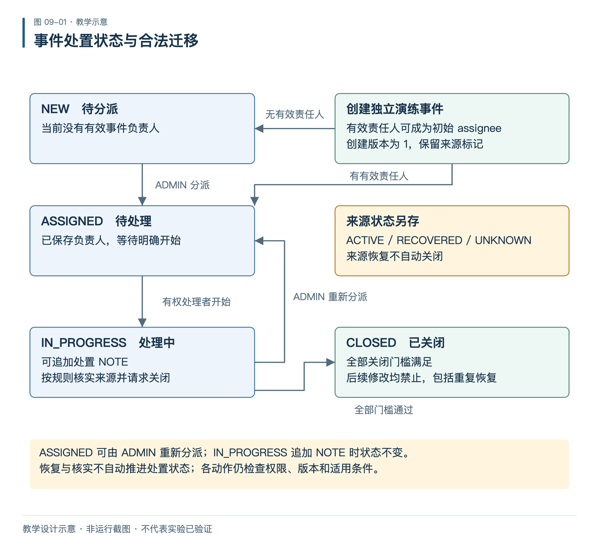
图中自循环表示状态未变但可能产生新的时间线；已关闭节点没有业务修改出口。
可编辑图源：ch09-01-state-machine.mmd · SVG 版式源

| 当前状态 | 合法动作及主要条件 | 动作后的状态 |
|---|---|---|
| NEW | ADMIN 指派当前有效处理人员 | ASSIGNED |
| ASSIGNED | ADMIN 或事件本人开始处理 | IN_PROGRESS |
| IN_PROGRESS | 有权处理者追加 NOTE | IN_PROGRESS |
| 任一未关闭状态 | ADMIN 指派或重新指派有效人员 | ASSIGNED |
| IN_PROGRESS | 有权处理者满足全部关闭门槛 | CLOSED |
| CLOSED | 修改请求均拒绝，包括重复恢复 | CLOSED，记录不变 |
例如 A 已写下一条“检查了教学样例的时间与质量”的记录，ADMIN 把事件交给 B，B 不能直接点击关闭。重新分派意味着新的工作交接，B 要重新开始处理。不过合同没有要求删除 A 的记录，也没有规定必须补一条“本次分派之后”的 NOTE；不要在实现中偷偷加上未经约定的新门槛。
1.2 来源恢复不等于工作结束
同一事件有两个维度。处置状态回答“工作推进到哪一步”；来源状态 ACTIVE/RECOVERED/UNKNOWN 回答“演练来源现在是什么情况”。处理中且来源仍 ACTIVE、处理中且来源已 RECOVERED，都是合理组合。把两者合并为一个“已完成”布尔值，会丢掉中间过程。
ADMIN 的“模拟来源恢复”操作将本地演练来源改为 RECOVERED，设置 sourceRawStatus=DEMO_RECOVERED 和服务端恢复时间。它保持处置状态不变，并将核实结果重置为 PENDING、核实时间清空。随后，有权处理者独立发起核实请求，由后端检查来源。前端不能提交一个 PASS 字符串替后端作决定。“独立”指核实是另一个服务端动作，并不新增“核实者必须与恢复者不同”的角色制度；课堂用 ADMIN 恢复、A 核实，便于观察分工。
关闭是多个条件的合取，即每个条件都为真才允许。图 09-02 将门槛分组，便于人工查缺。缺少其中一项时，应修复对应前提，不能为了让按钮可用而绕过判断。

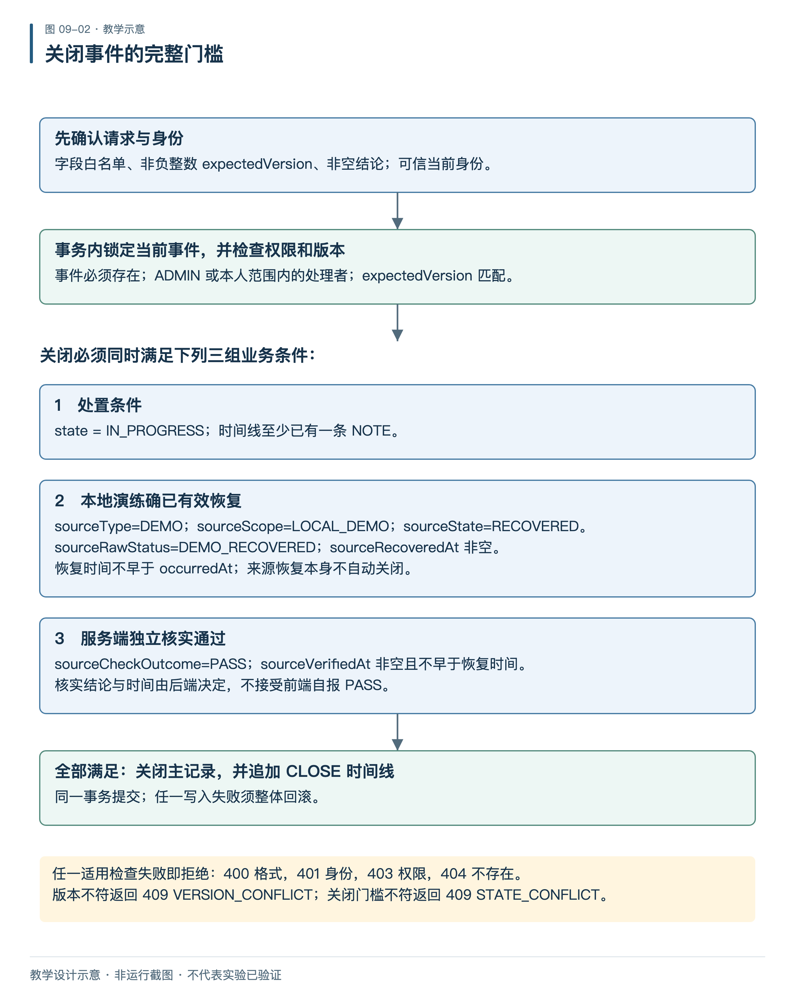
格式校验、授权与版本检查先完成；来源、处理记录和结论共同决定是否可关闭。
可编辑图源：ch09-02-close-gates.mmd · SVG 版式源

课堂可把下面的伪代码当作规则阅读题。方法名和变量名仅用于说明，须在教师冻结骨架后映射到真实代码；它省略了前面的身份、权限、请求格式和版本检查。
canClose = case.state == IN_PROGRESS
AND timeline contains NOTE
AND case.sourceType == DEMO AND case.sourceScope == LOCAL_DEMO
AND case.sourceState == RECOVERED
AND case.sourceRawStatus == DEMO_RECOVERED
AND case.sourceRecoveredAt != null
AND case.sourceRecoveredAt >= case.occurredAt
AND case.sourceCheckOutcome == PASS
AND case.sourceVerifiedAt != null
AND case.sourceVerifiedAt >= case.sourceRecoveredAt
AND trim(request.disposition) is not empty
时间比较使用 epoch 毫秒数值，不能比较界面上的“下午三点”字符串。时间相等符合“不早于”的规则。时间由服务端产生，即使学生把电脑页面时间改了，后端也不能把客户端时间当作恢复证据。
1.3 角色与对象范围要同时判断
ADMIN 可操作所有符合状态规则的事件，但仍不能跳过关闭条件。A、B 可以开始、记录、核实和关闭分派给自己的事件；他们都不能分派、触发或模拟恢复。VIEWER 可以读取事件和时间线，不能写入。仅检查 CAMPUS_MANAGER 角色会让 A 操作 B 的事件，因此服务端还要比较当前用户 uid 与 assigneeUid。
课堂先写四个反例：VIEWER 直接发关闭请求；A 开始 B 的事件；ADMIN 关闭没有 NOTE 的事件；对 CLOSED 再恢复。先预测拒绝依据，再写代码。前两项是权限问题，通常返回 403；后两项在请求版本正确时是状态问题，返回 409 STATE_CONFLICT。测试一条规则时，应让其他前提有效，避免一个请求同时犯三种错误而难以解释结果。
模块二 实现并观察一个完整闭环（2 学时）
2.1 把动作放在清楚的接口边界内
事件详情来自 GET /campus/alarm-cases/{id}，详情含 timeline，列表不含。七类时间线动作是 DEMO_TRIGGER、ASSIGN、START、NOTE、DEMO_RECOVER、VERIFY_RECOVERY、CLOSE。操作者、时间和版本来自后端，页面只展示回读结果，不能在请求结束前自行追加一条“成功”历史。
| 目的 | 请求 | body 的合法字段 |
|---|---|---|
| 创建温度演练 | POST /campus/demo-alarm-scenarios/temperature-patrol/trigger | 无 body 或 {} |
| 分派、开始、记录 | POST /campus/alarm-cases/{id}/assign、/start、/notes | assign 为 assigneeUid、note、expectedVersion；其余为 note、expectedVersion |
| 模拟恢复 | POST /campus/demo-alarm-events/{id}/recover | expectedVersion |
| 请求核实 | POST /campus/alarm-cases/{id}/verify-recovery | expectedVersion |
| 关闭 | POST /campus/alarm-cases/{id}/close | disposition、expectedVersion |
恢复路径里的 id 是 AlarmCase.id，不是设备 id，也不是 sourceId。expectedVersion 只用于合同规定的事件更新与责任登记；不要给场景触发或读接口添加这个参数。它必须是非负 JSON 整数，"4"、4.5、true 均不合格；其他未知字段同样应拒绝。note 去除首尾空白后为 1—500 字符，disposition 为 1—2000 字符，uid 为 1—64 字符文字。
以下是“事件当前版本恰为 4”时的核实请求 body 教学样例。成功响应的通用外层为 {code:0,message,data}；此处不伪造执行输出。
{"expectedVersion":4}
2.2 版本说明请求基于哪一次阅读
假设两个页面都读到 version=4，A 先写入一条记录，服务端变为 5。另一个页面仍以 4 关闭，可能没有看见 A 刚留下的重要信息。409 VERSION_CONFLICT 提醒使用者依据最新事实重新判断。版本表达的是“我依据哪一版作决定”，它不替代身份、权限或状态检查。
参考实现采用行锁配合版本检查：同一事务中 SELECT … FOR UPDATE 锁定主记录，核对当前权限、版本和状态，修改主记录，再插入时间线，最后提交。它不是纯乐观锁更新。锁协调数据库事务，版本防止旧页面的决定覆盖新状态，两者解决的问题相关但不同。时间线插入失败，主记录也必须回滚；否则“事件已关闭但没有人关闭过它”会成为无法解释的事实。
事件创建版本为 1。有效修改通常递增版本，时间线记录该 caseVersion，详情按 caseVersion、id 排序。一个必须记住的例外是重复恢复：未关闭、已经恢复且 expectedVersion 匹配时，返回当前详情，不再加版本或恢复时间线。旧版本不能借幂等之名绕过检查，已关闭事件也不能借此修改。其他动作不能自行套用这个例外。
2.3 按版本账本完成最小实验
操作前确认使用教师准备的独立教学库，场景开关启用，canControl 仍为 false。本实验的种子要求 teaching_env_01 尚未登记责任人，以便看到 NEW；若已有责任人，使用教师提供的独立重置夹具或新测试副本，不删除同学的业务数据。下面是预期账本，实际执行时另记事件 id、版本和时间。
| 步骤 | 身份与动作 | 输入版本 | 预期版本和事实 |
|---|---|---|---|
| 1 | ADMIN 触发温度巡查 | 不传 | v1，NEW，DEMO_TRIGGER |
| 2 | ADMIN 指派给 A，写明理由 | 1 | v2，ASSIGNED |
| 3 | A 回读后开始 | 2 | v3，IN_PROGRESS |
| 4 | A 保存具体处置 NOTE | 3 | v4，仍 IN_PROGRESS |
| 5 | A 在恢复前请求核实 | 4 | v5，UNKNOWN，核实时间 null |
| 6 | ADMIN 回读后模拟恢复 | 5 | v6，RECOVERED，核实 PENDING |
| 7 | ADMIN 按当前版本重复恢复 | 6 | 仍 v6，时间线不增加 |
| 8 | A 回读并请求核实 | 6 | v7，PASS，核实时间有效 |
| 9 | A 填结论后关闭 | 7 | v8，CLOSED |
在步骤 3 后额外尝试关闭，应被拒绝且不改变版本。步骤 4 的记录可写“核对教学样例来源、采样时间与质量，记录当前演练状态，等待管理员模拟恢复”，不要写成实际维修了温度传感器。步骤 5 返回 UNKNOWN 是一次成功完成的核实动作，核实结论尚不满足关闭；不能把 HTTP 成功理解为恢复已确认。
图 09-03 帮助检查每一步由谁发起、由谁决定。实际实验中，每次换身份都要使用该身份的真实教学登录会话；修改页面上的角色标签不算切换身份。请求之间重新读取详情，不能一直沿用第一步的列表对象。

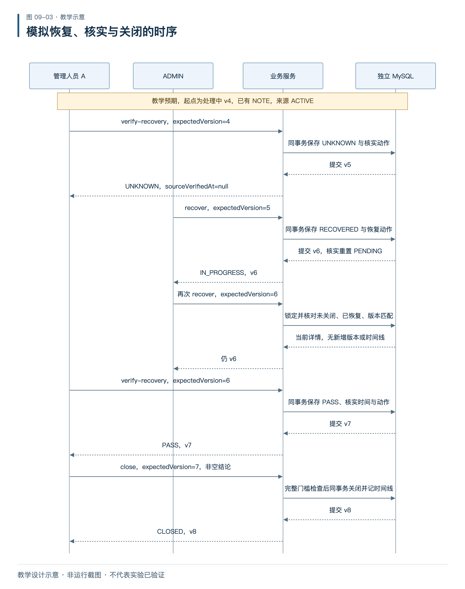
示例沿用上述版本账本，恢复前核实、重复恢复和关闭各自有不同结果。
可编辑图源：ch09-03-recovery-sequence.mmd
最后刷新页面，从详情 API 重新读取 CLOSED 和完整时间线。刷新后仍在，只说明本次数据已能回读；完整的断言还要比对主记录与时间线，并在第 11 章检验真正的并发与失败回滚。
2.4 冲突时让使用者重新作决定
打开同一事件的两个页面，保存各自读到的版本。在一个页面合法修改，另一个使用旧版本提交，用于观察过期页面处理；这不是第 11 章的真实并发实验。收到 409 后保留用户输入，读取最新负责人、状态、版本和时间线，提示记录已变化。让用户比较后决定取消或重新提交，禁止程序拿到新版本立即重放旧请求。
如果回读也失败，页面应标明当前显示的是旧快照，保留输入，等待再次读取。不能先把本地版本加一，也不能清空表单假装完成。状态冲突需要解释“为何当前动作不允许”；权限不足需要解释“当前身份没有范围”；这些提示帮助使用者采取不同动作。
模块三 审查 AI 建议并完成核验（1 学时）
3.1 一次只交给网页 AI 一个动作
使用通义等网页聊天工具，Qwen3 只作为模型案例；记录网页实际显示的型号，无法看到时写“未显示”。先贴本章规则和一个动作涉及的 DTO、服务、Mapper、页面片段，明确文件名。以下提示可直接复制，方括号由学生填写，不需要模型 API 或 CLI。
我正在独立教学工程实现 DEMO/LOCAL_DEMO 事件的 [close 动作]。
合同与当前代码：[分块粘贴，标注文件名，最后发送“上下文结束”]。
只允许修改：[文件清单]。先复述关闭门槛、权限和版本规则，
列出最小改动与四个反例，信息不足先问我，再逐文件给出代码。
主记录与时间线必须在同一事务；actor 和时间取自后端。
本项目使用行锁配合版本检查，禁止自动重试旧决定。
不要增加接口、放宽关闭条件或把未知来源当作已恢复。
你无法访问我的电脑，验证步骤只能标待执行。
若 AI 建议“只要 sourceState 为 RECOVERED，就关闭”，学生要指出遗漏的 NOTE、独立核实及时间、结论、权限和版本。若建议“409 后替换 expectedVersion 再自动提交”，要说明业务事实可能已经变化。把一条被纠正的建议、人工理由和实际回归结果写入 AI 记录；没有遇到模型错误时，可以审查教师提供的缺陷样例，不编造经历。
3.2 以反例检查真实行为
| 验收项 | 人工检查点与应保存的证据 | 本稿状态 |
|---|---|---|
| 闭环 AC07 | 实际请求、刷新后的八个版本及动作；幂等恢复没有额外时间线 | 待执行 |
| 关闭门槛 | 分别缺 NOTE、恢复、PASS、有效时间或结论时被拒；其他条件有效 | 待执行 |
| 范围 AC05/AC06 | VIEWER 写入和 B 处理 A 的事件被后端拒绝 | 待执行 |
| 重新分派 | 处理中事件回 ASSIGNED，旧记录保留，新负责人先开始 | 待执行 |
| 版本与输入 AC11 | 旧版本 409、输入保留、回读且无自动重放 | 待执行 |
| 关闭保护 | CLOSED 的修改被拒，主记录与时间线未变 | 待执行 |
恢复后关闭失败，先按详情检查核实是否仍 PENDING，再看版本，不删除状态门槛。事件“自己换了负责人”，检查是否有明确 ASSIGN 时间线；没有则继续定位是否动态使用了设备 owner。页面显示成功而详情未变，检查是否在请求完成前改了本地状态。不要在前端补造历史来遮盖后端事务问题。
课后练习与答案要点
- 事件 IN_PROGRESS、来源 RECOVERED、核实 UNKNOWN，能否关闭？**要点：**不能；来源恢复只是条件之一，须由服务端独立核实 PASS 且时间有效，同时满足其他门槛。
- ADMIN 已把事件从 A 改派给 B，A 拿旧页面提交 NOTE，应如何处理？**要点：**后端重新检查本人范围和当前版本，不写入；测试应拆开范围与版本两条用例，不依赖多重错误的优先返回次序。前端保留文字、回读后提示当前负责人。
- 已恢复、未关闭、v6 的事件收到 expectedVersion=5 的重复恢复，会直接成功吗？**要点：**不会；只有版本匹配才适用无变更例外。expectedVersion=6 时返回现有详情，版本与历史不增加。
- 如何解释核实返回 HTTP 成功却不能关闭？**要点：**请求执行成功和核实结论是两个层面；未恢复时记录 UNKNOWN，核实时间为空，不能把外层 code=0 当作 PASS。
进阶可为每条关闭门槛设计边界用例，尤其是时间相等、时间为空和重分派后的状态。不得把真实设备控制或外部通知混入本章必修流程。
交给下一章
交接状态图、接口与版本规则、实际事件 id、脱敏时间线、AI 审查记录及未通过项。第 10 章将给新事件增加设备责任人的自动分派依据，事件自己的负责人仍独立保存。若本章只完成设计或代码尚未运行，交接照实写出；真实数据库并发和回滚仍交第 11 章核验。
第 10 章 设备责任与审计追踪
温度巡查事件 E1 已经交给管理人员 A。第二天，管理员调整分工，把设备责任人改为 B。打开 E1 时，页面也突然显示 B 是负责人，A 原来处理过的痕迹却没有变化。B 会以为自己接到了一项从未确认的工作，A 则可能以为任务已经交接。问题不在姓名显示，而在系统把“设备现在归谁”与“这件事交给了谁”混成了一个事实。
本章沿用 teaching_env_01，建立当前责任、责任历史、事件分派之间的清楚关系。我们先保存责任人 A，创建 E1，再改为 B 并创建 E2，用两个事件证明责任变更的影响范围。这里使用教学模拟设备和虚构账户，责任登记只进入本组数据库，不修改 AIRIOT 模型，不发送外部通知。
本章状态为 DRAFT_WRITTEN，lab_verified=false。拟定教学工程及资源尚待制作；以下数据、步骤与界面说明均为教学样例和待实测预期。
进入条件与学习目标
应已完成第 09 章事件动作和时间线，能读取设备与当前用户能力。教师须准备责任行与历史表的迁移、责任页面骨架、处理人员候选接口，以及 ADMIN、MANAGER A、MANAGER B、VIEWER 四个独立身份。A、B 属于同一个 CAMPUS_MANAGER 角色；教师还需提供只作用于隔离教学账户的资格失效夹具及恢复方法，不要求学生从零制作账户管理后台。
完成后，你应能说明 owner 与 assignee 的差别，实现首次版本 0 的责任登记，解释旧版本冲突，并依据真实回读的时间线回答“谁在何时把谁改成了谁、为什么”。更关键的是，你能用 E1/E2 的负责人及版本证明没有发生隐蔽改派，而不只展示一张责任页面截图。
模块一 设计可以追溯的责任关系（1 学时）
1.1 当前责任是规则输入，事件负责人是一次决定
设备责任人 ownerUid 是当前分工：新事件创建时，系统可以用它寻找候选负责人。事件负责人 assigneeUid 是一次具体分派的结果，保存在事件自己的记录中。创建之后，它只能通过明确的事件指派动作改变。二者即使恰好同为 A，也不应该共用一个字段或在显示时互相替代。
这类似班级小组更换组长：新的组长负责后续安排，昨天已经交给某位同学的任务不会在没有交接的情况下自动转移。数据库设计要保留这种时间上的区别。图 10-01 用四类记录展示当前值与历史值，箭头“创建时读取”尤其重要：它不是每次查看旧事件都重新读取 owner。

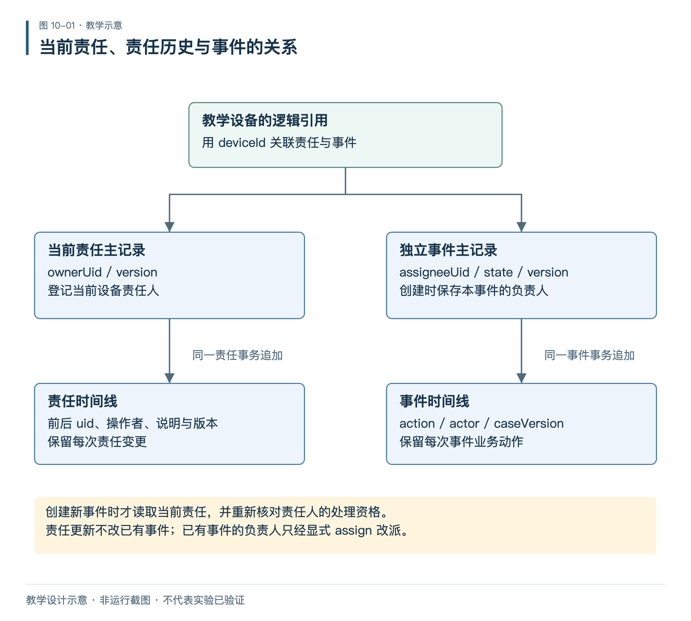
责任与事件各自有主记录和时间线，创建事件时读取当前有效责任人。
可编辑图源：ch10-01-owner-event-model.mmd · SVG 版式源

| 记录 | 主要内容 | 回答的问题 |
|---|---|---|
| DeviceOwner | deviceId、ownerUid、ownerName、version、updatedAt | 这台设备目前登记给谁 |
| DeviceOwnerEvent | 前后 ownerUid、actorUid/actorName、note、createdAt、version | 某次责任为何改变、由谁操作 |
| AlarmCase | deviceId、assigneeUid、state、version 等 | 这一件事件现在交给谁、进行到哪 |
| AlarmCaseEvent | action、前后状态与负责人、操作者、caseVersion 等 | 事件实际经历了哪些动作 |
责任历史里的 previousOwnerUid 和 ownerUid 指向变更前后的人，actorUid 指执行登记的人。管理员将 A 改为 B 时，不能把 B 写成操作者。事件时间线使用 caseVersion，责任时间线使用 version，两者属于不同对象，不能拿责任版本作为事件请求的 expectedVersion。
1.2 没有登记也是一个明确状态
未配置设备应有责任行，ownerUid、ownerName、updatedAt 为 null，version=0。这不等于接口失败，也不是“设备管理员自动负责”。页面应显示“未登记责任人”，不要从当前登录者或设备名称推测一个负责人。预建责任行还让首次登记可以锁住一个确定对象；迁移和种子制作须保证它确实存在。
下面是 GET /campus/device-owners/teaching_env_01 的 data 教学样例，不是实际返回记录。完整响应仍使用通用外层。首次时间线为空与版本 0 一致。
{
"deviceId":"teaching_env_01",
"ownerUid":null,
"ownerName":null,
"version":0,
"updatedAt":null,
"timeline":[]
}
合同要求写入明确的有效负责人，不接受 null 清空。“我想暂时不分配”是新的需求，不能直接把清空按钮加到当前实验。写入范围也限于冻结的教学设备清单，不能因为请求里有一个 deviceId 就自动纳管未知设备。
1.3 稳定标识和显示姓名的职责不同
姓名帮助人阅读，uid 用来识别人。两人可能同名，一个人也可能更改显示名。责任历史的最小合同保存前后 uid 和操作者姓名，并没有承诺前后责任人姓名快照字段。展示时应保留 uid；如通过当前候选表补充显示名，要标明这是当前名称，不能把它冒充当时保存的名称。
图 10-03 稍后展示的历史卡片以 uid 为依据。学生不要把当前 ownerName 填到所有旧历史中，也不要为了修复显示问题擅自添加未同步的数据库字段。若课程以后要求完整姓名快照，应先改合同、迁移和测试，再统一实现。
模块二 登记责任并验证新旧事件的差异（2 学时）
2.1 让表单提交一项明确决定
页面读取 GET /campus/device-owners 显示当前责任列表；详情来自 GET /campus/device-owners/{deviceId}，含 timeline。人员下拉项读取 GET /campus/alarm-cases/handlers，该接口只提供 uid、displayName 和 currentUid，不应带回完整用户实体或凭据。所有校园读取角色可看合同允许的记录，只有 ADMIN 能登记。
保存时调用 PUT /campus/device-owners/{deviceId}，body 只有 ownerUid、note、expectedVersion。以下 uid 为讲解代号，实验时必须替换为教师种子中真实返回的 uid；不能把文本“A”直接当作账号标识。
{
"ownerUid":"manager-a",
"note":"本轮教学温度巡查由管理人员 A 跟进",
"expectedVersion":0
}
保存按钮需要已选择候选人、非空说明与当前版本。前端检查使错误更容易理解，后端仍须独立校验字段白名单、字符串长度、JSON 整数和操作者权限。uid 为 1—64 字符，note 去首尾空白后为 1—500 字符。上传 actorUid、updatedAt、version 等额外字段应返回 400，不能静默接受后再信任它们。
下拉框只反映“读取当时”的资格。用户选好 B 后，B 可能被禁用、锁定或撤销处理角色，因此保存责任和创建事件时都要重新核对当前账户及角色。前端把 B 留在选项里不构成授权依据。ADMIN 也不能将事件随意交给 VIEWER。
2.2 把主记录与历史作为一个事务
服务层接收请求后，在当前身份检查通过的基础上核对设备范围与候选人资格，在事务内锁定责任行、比较 expectedVersion、更新责任主记录，再插入一条历史，整体提交。参考方式是行锁配合版本检查。历史插入失败必须使主记录和版本一并回滚，不能捕获异常后仍返回成功。
下列是业务步骤伪代码，尚不是可编译实现。资格检查、clock 和 mapper 名称须由教师骨架冻结。读者应能逐句解释为什么需要这一步，而不是只把 @Transactional 粘贴到某个方法上。
require current user is ADMIN
validate allowed fields, teaching device and current handler eligibility
begin transaction
owner = lock owner row for this device
require owner.version == request.expectedVersion
previousUid = owner.ownerUid
nextVersion = owner.version + 1
update owner with requested uid, server time and nextVersion
insert owner history with previousUid, requested uid, note,
current actor, server time and nextVersion
commit transaction
return reread owner detail and timeline
首次版本 0 成功后为 1，下一次使用回读到的 1。说明的存在能区分“为何换人”，版本能区分“基于哪一次阅读换人”，时间线能区分“实际发生过什么”。三者互相补充。责任时间线按 version、id 排序，不能只按本地格式化时间排序，因为同一时刻可能出现多个记录。
expectedVersion 不适用于设备读取、空间映射或场景创建。也不要把第 09 章重复恢复的特殊幂等规则扩散到责任接口；本章只按合同执行责任登记，未约定的无变更优化留到独立变更评审。
2.3 用 E1 和 E2 完成最小实验
先确认本组数据库标识、种子版本和四个身份。为避免旧实验污染，使用教师冻结的本章夹具：设备为 teaching_env_01，初始责任 version=0，温度巡查引用同一设备。不要为得到 0 而删除整个数据库；已有练习应保留或在另一个隔离副本继续。
- 以 ADMIN 读取责任详情和人员候选，记录初始 version、ownerUid 和 timeline。若初值与夹具不符，先定位数据版本。
- 登记 A，说明分工原因，再刷新回读。预期 version=1，历史从 null 到 A，actor 是 ADMIN，时间来自后端。
- ADMIN 触发温度巡查，记录事件为 E1。创建动作不传 expectedVersion；预期 E1 version=1、ASSIGNED、assigneeUid=A，创建时间线说明分派结果。
- A 读取 E1 并开始处理。另存 E1 的负责人、版本、状态、时间线条数，作为责任变更前基线。
- ADMIN 将设备责任改为 B，传刚回读的责任版本 1。预期责任 version=2，新增 A 到 B 的责任历史。
- 用新的 GET 读取 E1。它仍归 A，其事件版本、状态和时间线不因责任变更而改变；不要只看前端缓存。
- ADMIN 再触发一次，记录 E2。预期是另一个事件 id/sourceId，version=1，按当前有效 B 自动分派。
- 用 B 请求开始 E1，应被拒绝；用 A 对本人仍有效范围内的 E1 执行合法动作，再观察结果。若确需把 E1 交给 B，ADMIN 必须显式调用事件 assign，并留下 ASSIGN 时间线。
图 10-02 是实验的判断基准。它把责任版本与事件版本分在不同位置：责任从 1 变为 2，不会推动 E1 的版本。两个事件也不共用一条事件记录；不能通过反复覆盖同一个演练事件来制造“新事件”的演示效果。

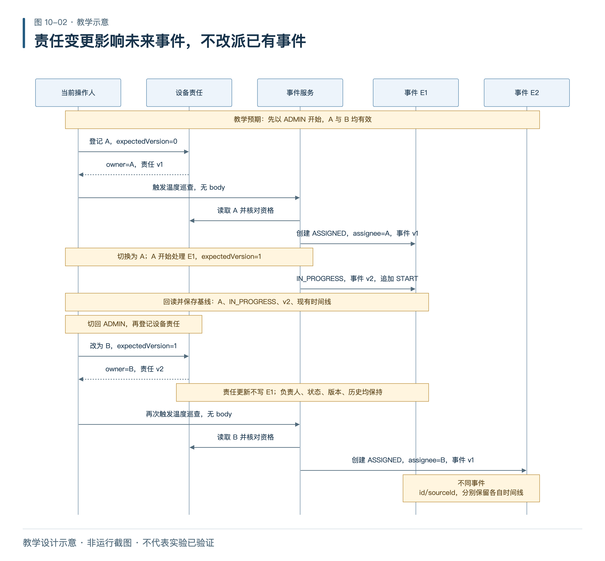
E1 的负责人在创建时保存，A 开始处理后 E1 为 IN_PROGRESS、事件 version=2。随后设备责任改为 B，不改变这份基线；只有显式 assign 才改变 E1 的负责人。E2 使用后来登记的 B。
可编辑图源：ch10-02-future-assignment.mmd
继续做资格失效实验：由教师提供的限定夹具使 B 暂时失去有效处理资格，再触发 E3。预期 E3 为 NEW、assigneeUid=null，创建时间线说明不能自动分派的原因。当前责任主记录仍可显示登记的 B；“登记存在”与“此刻有处理资格”不是一回事，不要悄悄清空责任历史或把 E2 改回 NEW。实验后按夹具说明恢复 B，并留下恢复记录。该步骤尚待教师实现，不能臆造一个通用禁用账号接口。
2.4 拒绝请求也要验证数据没有变化
保存责任前留一个旧详情窗口，完成一次更新后，再从旧窗口提交。预期 HTTP 409 VERSION_CONFLICT，表单保留所选人和说明，回读最新责任与时间线，由用户重新判断。严禁自动把新版本填入旧请求并重发，否则管理员可能在没有阅读同事变更理由时覆盖决定。
另以 VIEWER 直接调用 PUT，预期 403；再用 ADMIN 测试额外 actor 字段，预期 400。两个测试不要混为一个请求，否则无法辨别测到的是字段校验还是权限。每次拒绝后回读责任版本与历史数量，确认未发生业务写入。B 失效的精确错误响应应随教师冻结实现核验；不能只凭某个 HTTP 码认定资格检查正确，还要证明没有非法分派。
模块三 通过时间线重建事实（1 学时）
3.1 审计从可回答的问题开始
本章必修审计通过责任 timeline 和事件 timeline 完成。现有系统 /campus/audit 主要承载模拟开关操作，不能当作责任历史的通用查询入口。课程主线的远端控制与外部通知关闭，不能为了得到“审计日志”而先去操作一个开关。
让同桌只看回读后的两条责任历史：第一条是 null 到 A，第二条是 A 到 B，均有 actor、note、createdAt、version。再给出 E1、E2 的创建时间线，让对方说明为何两个负责人不同。图 10-03 提示应如何阅读，而不是将当前值复制进每张卡片。

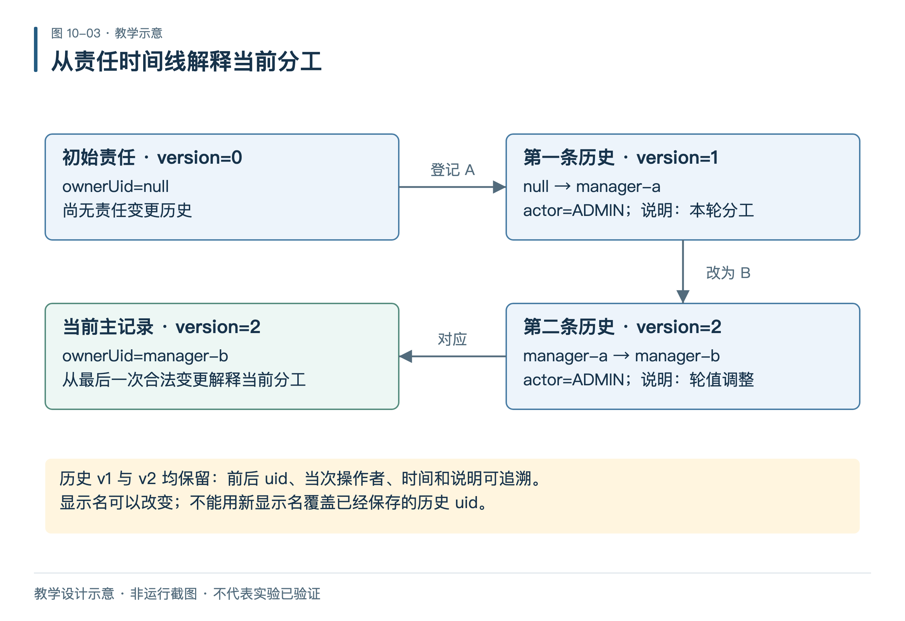
图内 v1/v2、t1/t2 是教学符号；真实时间须来自服务端 epoch 毫秒，顺序以版本和 id 为准。
可编辑图源：ch10-03-responsibility-timeline.mmd · SVG 版式源

一份合格追溯报告可以用一段话完成：“根据责任 v2 的记录，ADMIN 因轮值调整将 A 改为 B；E1 在 v1 责任期间创建并分派给 A，事件详情未出现后续 ASSIGN，因此仍归 A；E2 在责任变更后创建，自动分派给 B。”把“根据哪条记录”说清楚，比写一句“审计功能正常”更有解释力。
时间线是系统保存的业务事实，不能据此声称硬件真的维修、人员线下真的到场，也不意味着它具备防数据库管理员篡改的全部能力。基础课程验收的是受控接口、同事务保存和可回读追踪，不扩展成完整的合规审计平台。
3.2 网页 AI 协作与人工审查
将以下提示提交给通义等网页工具，按文件分块粘贴代码；记录实际显示的模型，不把 Qwen3 当作每次必然可选的型号。操作仍由学生在自己的工程中完成。
我在实现设备责任登记，合同和相关文件如下：[粘贴]。
本次仅处理 [责任事务/创建时自动分派/历史展示] 一个问题。
ADMIN 才能写；候选人必须是当前有效处理人员；首次版本为 0。
责任更新与历史同事务；actor 和时间由服务端产生。
旧事件保存自己的 assignee，责任变化只能影响之后创建的事件。
禁止增加批量改派、清空责任、远端控制和未知合同字段。
先列出可能破坏历史的代码位置，再给最小修改和待执行用例。
没有我的实际回读证据，不要宣称通过。
审查 AI 时重点看三个地方：查询旧事件是否把 owner 动态填给 assignee；责任保存是否顺手批量更新事件表；时间线模板是否遍历历史却始终读取当前 ownerName。把每个问题与 E1/E2 的失败现象相连，避免只说“代码风格不好”。
3.3 验收与常见错误定位
| 检查项 | 应保存的实际证据 | 本稿状态 |
|---|---|---|
| 首次登记 | 责任 0→1、null→A、服务端 actor/time | 待执行 |
| 新旧事件 AC10 | 责任变更前后 E1 对照、E2 创建详情 | 待执行 |
| 历史可信 | A→B 原因与独立回读，旧 uid 保留 | 待执行 |
| 人员资格 | B 失效时 E3 为 NEW，并有未分派原因 | 待执行 |
| 拒绝边界 AC05/AC11 | VIEWER 403、旧版本 409、伪造字段 400，数据不变 | 待执行 |
| 事务风险 AC09 | 本章提供待测路径，第 11 章补真实 MySQL 回滚 | 待执行 |
首次登记总是冲突，先查种子中的责任版本是否为 0，以及页面是否拿错事件版本。旧事件跟着换人，查动态关联与批量更新，不能靠刷新页面“修好”。所有历史都显示 B，检查行模板绑定的数据来源。禁用 B 后仍被自动分派，查创建时是否再次核对资格，不能把清浏览器缓存当作后端修复。历史数量增加但主记录没变，则追查是否存在分离事务或失败后的部分提交。
课后练习与答案要点
- B 是设备当前责任人，是否可以处理仍分派给 A 的 E1？**要点：**不可以。管理人员权限取决于具体事件 assignee；更换责任不构成事件改派。
- 为什么 ownerName 不能用作关联键？**要点：**同名和改名会破坏稳定身份；使用 uid，显示名称与历史快照语义另行说明。
- E1 已关闭，管理员把设备改为 B 后能否自动重开 E1？**要点：**不能。责任变化不改旧事件，CLOSED 也禁止修改；新演练创建新事件。
- 给出一条足以识别“责任更新顺带改旧事件”缺陷的断言。**要点：**仅执行责任 PUT 前后，E1 的 assigneeUid、state、version 与 timeline 保持一致；E2 则使用新责任人。
- 候选下拉里仍有 B，保存时后端发现其角色已撤销，谁的判断有效？**要点：**以后端当前资格为准，拒绝非法登记；页面回读候选并保留解释所需输入。
进阶可以增加只读历史筛选，或讨论姓名快照需要怎样扩展合同与迁移，不要求制作综合审计平台。交给第 11 章的材料包括责任模型、E1/E2/E3 标识、基线与回读对照、人员资格夹具说明、缺陷及 AI 审查记录。页面演示正常尚不能代替数据库并发和回滚证据。
第 11 章 测试调试与质量改进
一组同学演示了事件闭环，页面顺畅，时间线完整，于是写下“全部测试通过”。另一组同时修改设备责任，结果两人都收到成功，后提交的人覆盖了先提交的人；还有一组让时间线保存失败，却发现主记录已经更新。日常演示没有碰到这些情况，但它们直接影响系统是否值得信任。
本章把“我看起来做对了”变成“在明确条件下，记录能够支持这个结论”。我们从规则独立写预期，再用合适的层级验证：纯函数可用单元测试，权限需要真实身份请求，锁和事务必须进入真实 MySQL。测试的价值在于发现问题并缩小不确定性，而不只是积累绿色标记。
本章状态为 DRAFT_WRITTEN，lab_verified=false。拟定教学工程、并发模板和故障注入点尚待制作；文中没有实际测试成绩。所有“应”“预期”均指未来实验的判断标准，不得复制成执行结果。
进入条件与学习目标
第 09—10 章应已形成事件和责任模块，学生能定位请求经过的路由、业务服务和数据库操作。教师须预备每组隔离 MySQL、确定性种子、可控时钟、ADMIN/A/B/VIEWER 四身份、JUnit/Vitest 与 API 测试入口、并发屏障、仅测试环境可用的时间线失败注入点。模板应让学生集中检查业务，不把两学时实践变成并发框架开发课。
完成后，你应能从一条需求导出成功、拒绝和边界用例，证明同版本并发一成功一 409，分别证明事件与责任事务的整体回滚，并写出可复现缺陷单。你还要能解释：某项测试通过到底证明了什么，哪些内容仍未执行、被环境阻塞或没有覆盖。
模块一 从风险建立独立的测试预期（1 学时）
1.1 预期不能从待测代码照抄
假设有缺陷的代码只检查来源 RECOVERED 就允许关闭。若把它交给 AI，要求“根据代码生成测试”，AI 可能生成同样宽松的预期，结果所有测试都绿。应先从合同写出关闭的完整条件，再让 AI 协助组织测试代码。需求是判断尺，代码是被判断的对象，不能反过来。
用“给定—当—则”写一条测试。例如：给定事件 IN_PROGRESS、已有 NOTE、有效恢复与 PASS、当前处理者获准且版本匹配；当 disposition 仅为空白；则请求被格式校验拒绝，主记录与时间线不变。为检验结论为空，其他前提必须有效，否则失败可能来自未恢复，无法证明结论校验存在。
测试需要可观察的断言。“没有报错”太弱，“响应为 403，事件 version 和 timeline 未变”更具体。拒绝请求往往还要检查没有写入副作用；HTTP 失败但记录已变化同样是缺陷。对输入类型，可以分别测试负数、字符串、浮点数和 Boolean 的 expectedVersion，不要只测一个错误值。
1.2 按证据能力选择层级
图 11-01 不是“上一层通过就包含下一层”的阶梯。每种检查覆盖不同边界：编译器能发现类型不一致，却不知道管理员是否越权；浏览器能展示输入保留，却不能单独证明数据库的提交原子性。

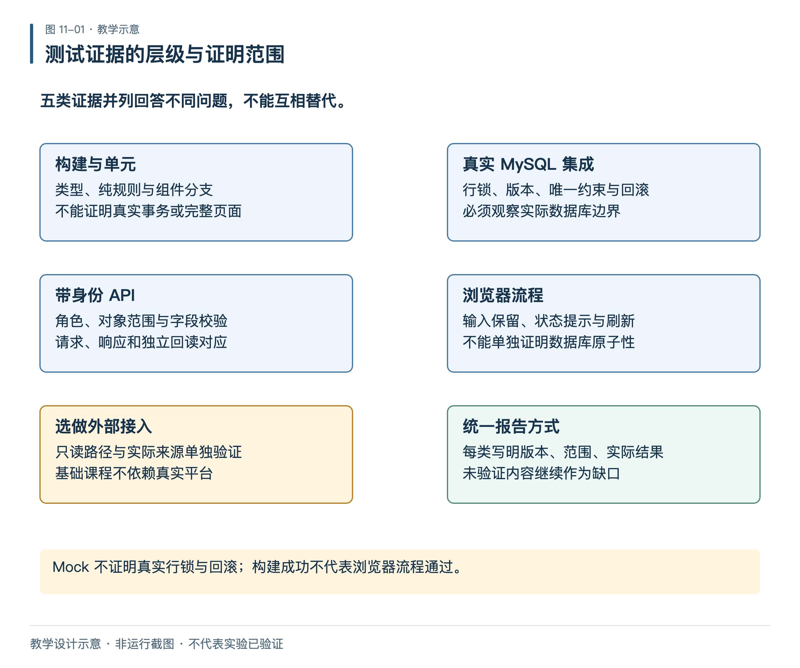
各层围绕同一需求提供不同证据，外部接入只在选做范围单独报告。
可编辑图源：ch11-01-evidence-layers.mmd · SVG 版式源

| 风险及关联验收 | 合适的检查 | 必须观察的内容 |
|---|---|---|
| 有效零被隐藏 AC03 | 函数或组件测试 | 0 与 null 分别显示，非有限值不能伪成正常值 |
| 关闭条件遗漏 AC07 | 规则单元＋API 集成 | 逐项缺条件被拒，边界时间相等合法 |
| 越权 AC05/AC06 | 带实际教学身份的请求 | VIEWER、非本人、失效角色被拒 |
| 同版本覆盖 AC08 | 真实 MySQL 并发请求 | 恰一成功、一 409，主行与新增历史一致 |
| 部分提交 AC09 | 真实 MySQL 故障注入 | 失败后的字段、版本、历史均与基线一致 |
| 冲突后的假成功 AC11 | 浏览器及网络记录 | 输入保留、回读明确、没有自动重放 |
Mock 可以隔离网络或某个业务分支，帮助精确构造空值和错误；它不能证明 MySQL 的行锁、唯一约束和事务实际生效。内存数据库即使语法相似，也不能替代本章要求的真实 MySQL 证据。若环境未就绪，保留已完成的单元结果，将数据库项记为阻塞，并写明缺少的教师资源。
1.3 先为每次实验建立基线
证据至少记录需求编号、源码标识、资源包和种子版本、执行时间、数据库标识、输入、实际响应及回读。执行前确认库名与教师分配的一致，不把真实校园数据库作为测试库。数据库凭据、会话令牌不进入证据；只记录足以区分环境的非秘密标识。
不要给每条测试都复用同一个事件。第一个用例将它关闭后，后续测试就可能因为 CLOSED 全部失败，掩盖真正原因。用教师夹具准备独立记录，或按明确的前置步骤构造需要的状态。可控时钟用于重复时间边界，不能在结果不合预期时随手改时间让测试变绿。
模块二 执行并发、回滚与缺陷修复（2 学时）
2.1 并发实验的关键是同版本与真实重叠
先准备一条责任记录，其版本为 n，当前责任人为空，或为不同于 A、B 的有效人员，以确保两个请求都要求明确的责任变更。选两个有效候选 A、B，两项请求都由具有 ADMIN 权限的真实教学会话发出；A、B 是目标负责人，不是本实验的写入操作者。两个独立请求携带相同的 expectedVersion=n，分别要求改为 A、B。
教师模板应让两个客户端先报告就绪，再由一个屏障同时放行。记录请求发出与结束、事务尝试获得锁与释放锁的非秘密标记，用于确认两项操作确实重叠。不能让已经持有同一行锁的事务和等待该锁的事务互相等待同一个“双方已取得锁”屏障，这会人为制造死锁。必要时由模板协调首次持锁与另一请求的锁尝试，准确方式须在教师资源阶段实测。
图 11-02 展示 A 目标的请求先取得锁的一种可能结果。实际运行也可能是 B 先成功，因此测试应断言成功与冲突的数量及数据对应关系，而不预先规定谁获胜。这里的“一成功一 409”建立在两个请求格式、权限、候选人和初始版本均有效，且没有其他写入者的前提下。

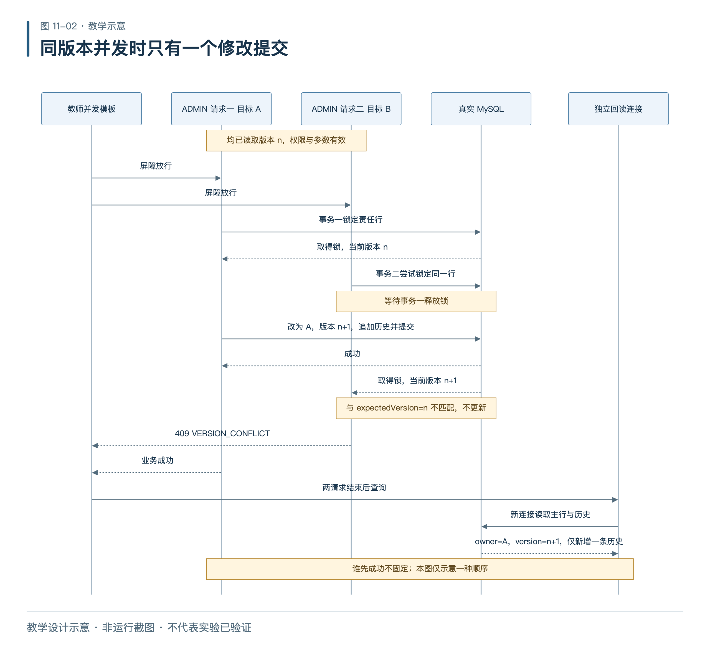
两请求先读取 n，竞争同一行锁；后获得锁者看到 n＋1，返回版本冲突。
可编辑图源：ch11-02-concurrent-updates.mmd
最小实验按以下顺序执行，学生将实际值填入单独记录，不修改本章预期：
- 使用新读连接记录责任字段、version=n、历史条数 h 和最后一条历史版本，确认两名候选当前有效。
- 构造两个独立请求对象，expectedVersion 均为 n，说明分别标注本次并发用例，不能在第二个请求前偷偷刷新版本。
- 启动两个工作请求并等待就绪，由教师模板的屏障释放；保留两个响应和重叠证据，等两个请求都结束。
- 预期恰有一个业务成功，另一个 HTTP 409
VERSION_CONFLICT。网络超时或 500 不能当作合格的第二个结果。 - 从业务事务之外新建连接，读取已提交数据。预期 ownerUid 等于成功请求的目标，version=n＋1，历史条数=h＋1，新增历史版本为 n＋1、前后人员正确。
- 检查失败请求没有新增责任时间线。课程合同未要求另建一条“冲突操作历史”，不能为凑记录破坏每版本唯一的业务时间线。
断言可用下列伪代码表达。它只展示需要比较的事实，不是已交付测试入口。
assert count(success responses) == 1
assert count(HTTP 409 VERSION_CONFLICT responses) == 1
assert persisted.version == baseline.version + 1
assert persisted.ownerUid == successfulRequest.ownerUid
assert historyCountAfter == historyCountBefore + 1
assert newestHistory.version == persisted.version
若两个请求都成功，检查锁、版本读取和更新是否真的位于同一业务事务；若都冲突，先核对两个请求是否拿了同一个过期基线；若只有最终数据库值却没有两个响应，证据不足以说明另一个请求如何结束。先后点击两次页面得到一成功一冲突，只能证明旧版本拒绝，不能独立证明并发协调正确。
2.2 让时间线失败，观察整个事务是否撤销
事务原子性意味着一组修改共同成功或共同失败。事件关闭时，主记录修改、version 增加和 CLOSE 时间线必须一起提交；责任登记同理。最有解释力的实验是在主记录已经更新、事务尚未提交时让时间线插入失败，再从事务外查看最终持久状态。
教师注入点应在真实服务与 Mapper/数据库路径中工作，只在隔离测试配置生效；不 mock 掉数据库调用，也不向普通业务 API 增加一个任意“破坏数据库”参数。可由教师模板在实际插入路径注入一个可识别异常，或构造受控的真实插入失败。模板须说明异常如何传递至事务边界并触发回滚，不能把异常吞掉后继续返回成功。

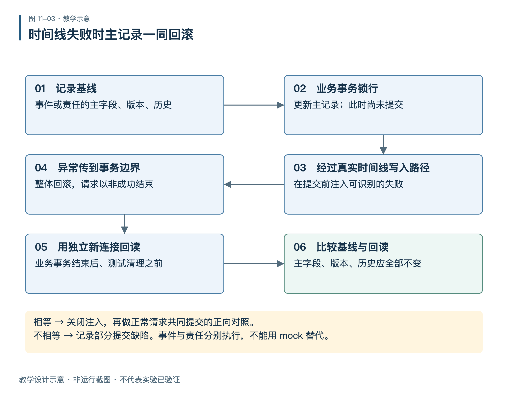
图内主记录更新是事务中的临时变化；失败后须以独立新连接证明其未提交。
可编辑图源：ch11-03-transaction-rollback.mmd · SVG 版式源

分别对事件与责任执行，不能只测一种表就宣称两类事务都可靠：
- 事件使用一条已满足前置条件的合法 NOTE 或关闭操作；责任使用合法负责人更新。各自保存主行字段、版本、时间字段和历史行数，形成两份基线。
- 仅为该用例启用教师注入点，确认注入位置是“主行更新之后、时间线写入路径、提交之前”，并保留标记。
- 发起合法请求，等待业务事务结束。预期接口不返回成功；具体安全错误码依冻结模板记录，不在正文虚构。
- 关闭注入点，使用独立的新数据库连接查询。事件字段、版本、时间线与事件基线一致；责任字段、版本、时间线与责任基线一致。
- 再执行各自正常请求，确认主行和时间线同时产生对应变化。这是正向对照，说明之前的“不变”确实来自回滚，而不是请求根本未到达更新路径。
测试自身最外层若有自动回滚事务，可能把错误业务提交的影响掩盖掉。因此教师模板应让 HTTP 请求的业务事务独立结束，之后才通过新的连接回读。不能在同一连接里看见尚未提交的值就称为持久化，也不能在测试清理之后才查询、把清理效果当作回滚证据。自动增长 id 出现间隔也不直接代表业务提交失败；本实验以主行和实际历史行的内容为准。
2.3 调试是缩小因果范围
遇到“版本增加但时间线没增加”，先写下事实：哪个请求、哪个对象、哪个版本、在哪个连接回读、是否已等请求结束。然后提出可证伪的假设，例如事务方法没有经实际代理进入、两个 Mapper 使用不同事务、异常被捕获后未触发回滚。没有证据时不要直接宣布某个框架失效，更不要先重装全部依赖。
图 11-04 给出一条可重复的调试路线。先固定失败输入，再增加最少观察点；每次只改一个有因果依据的位置。修复后重跑原失败及受影响的相邻规则，例如改了公共事件事务方法，还需回归 start、NOTE、核实和 close，而不必无理由重复所有图表样式检查。

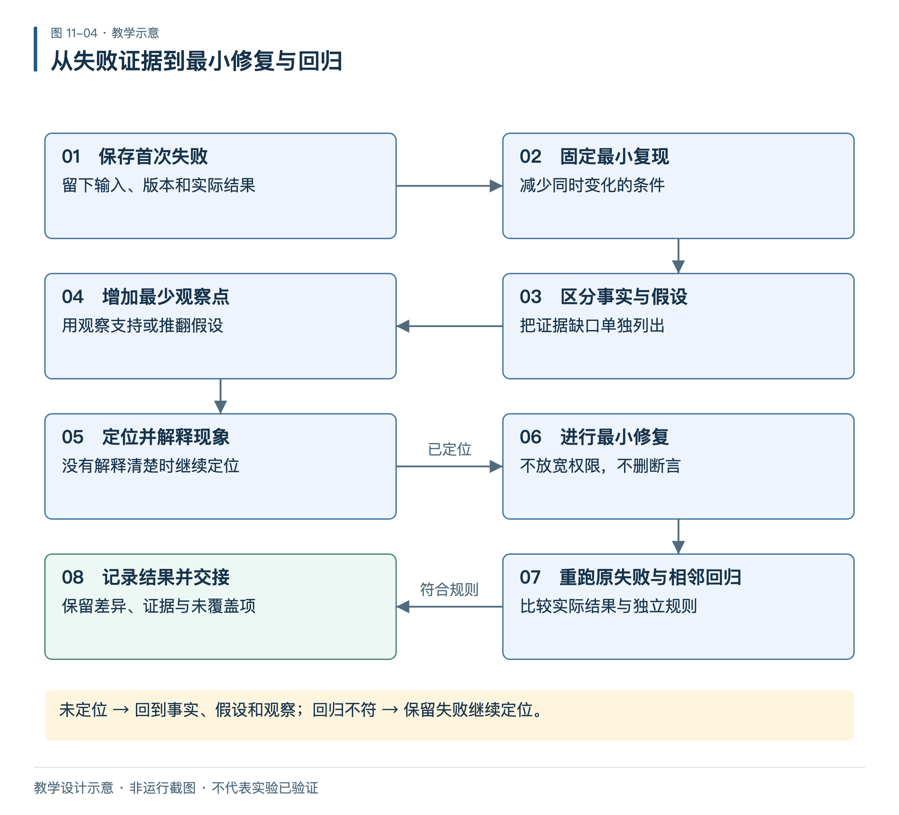
不能通过删掉断言、放宽权限或自动覆盖版本来消除失败。
可编辑图源：ch11-04-debugging-loop.mmd · SVG 版式源

一张缺陷单应包含：对应需求、环境与版本、最少复现步骤、预期、实际、影响、原因假设、最小差异、回归结果。若偶发失败暂时无法复现，保留首次证据和发生频率，检查种子、时钟及共享数据污染；反复运行直到一次绿灯，不能抹掉前面失败。
模块三 交叉审查证据与质量结论（1 学时）
3.1 把问题交给网页 AI，而不是交出判断标准
使用通义等网页工具时，先给需求预期，再给脱敏的实际请求、响应、数据库前后查询和最少相关代码。网页 AI 不能访问本机，不能凭一段异常自动知道你的数据库连接配置。记录网页显示的型号；Qwen3 是课堂案例，不要求固定型号、API 或智能体 CLI。
本次只定位 [责任时间线失败后主行仍改变]。
合同预期：[粘贴原子性与版本规则]。
实际步骤、环境标识、请求响应与独立回读：[脱敏后分块粘贴]。
相关服务、Mapper、事务配置：[标文件名，分块粘贴]。
先分开已知事实、假设和缺证据，按证据给可能原因排序。
不要删权限、状态、版本条件，也不要修改预期来迁就实现。
提出最小修复与相邻回归；mock 不能替代真实 MySQL 证明。
在我返回实际执行记录前，一律写“待验证”。
学生要审查 AI 是否解释了全部现象。例如“把异常 catch 后返回空列表”只隐藏错误，不恢复原子性；“给测试加 sleep”可能降低冲突概率，却没有证明协调条件。采纳建议前写一句因果说明：这个变化为什么能使原来错误的提交路径变正确，哪条用例能否定自己的判断。
3.2 同伴审查从证据缺口入手
两组交换资料，检查请求的 n 是否一致、响应是否属于同一次运行、数据库和源码版本是否对应、回读是否晚于两个事务结束。不要只看测试数量；一百条 mock 用例仍可能没有覆盖一个真实锁问题。截图应辅助阅读，脱敏请求与数据记录要能单独解释结论。
| 验收项 | 最少证据组合 | 本稿状态 |
|---|---|---|
| 独立预期 | 需求编号、前提、成功/拒绝/边界与对应断言 | 待执行 |
| 并发 AC08 | 两同版本请求、屏障及重叠记录、双响应、新连接回读 | 待执行 |
| 事件回滚 AC09 | 注入位置、非成功响应、事件前后字段/版本/历史 | 待执行 |
| 责任回滚 AC09 | 注入位置、非成功响应、责任前后字段/版本/历史 | 待执行 |
| 正向对照 | 关闭注入后，合法修改和时间线共同提交 | 待执行 |
| 修复回归 | 原失败、最小差异、重跑原用例及受影响规则 | 待执行 |
报告用“通过、失败、未执行、环境阻塞”描述具体用例，用“未覆盖”描述尚未设计或纳入的范围。不能把环境阻塞计为通过，也不能因为一个浏览器流程失败便抹去已经有效的单元证据。结论必须带范围，例如“已测本人范围 API，未测移动设备显示”，比“基本没问题”更适合交接。
课后练习与答案要点
- 两请求得到 200 和超时，数据库只有一条新增历史，能否判定 AC08 通过？**要点：**不能。超时请求可能在服务端继续运行，须查清最终响应或事务结果；预期要求一成功一 409，现有证据不足。
- 事务测试结束后测试框架自动清库，随后查询为空，能否证明回滚？**要点：**不能。应在业务事务结束、清理之前，通过独立连接与基线比较，排除清理造成的假象。
- 两个请求使用 n 和 n＋1 都成功，是并发缺陷吗？**要点：**不足以判断。它不是同版本用例，第二次可能合法地基于新版本；必须重建 AC08 前提。
- 关闭用例只检查 HTTP 409，有什么不足？**要点：**需区分 VERSION_CONFLICT 与 STATE_CONFLICT，控制其他前提，并回读确认没有意外写入。
- 如何降低 AI 与实现同时犯错的风险？**要点：**从需求独立写断言，人工预测，使用教师固定夹具，保留反例及真实执行证据，而不是让实现自行定义正确答案。
进阶可以用覆盖率寻找未进入分支，但不以覆盖百分比替代业务证据。交给第 12 章的内容应包括分层结果、代码和资源版本、缺陷清单、实际数据库证据与未覆盖范围。真实并发或回滚尚未完成时，完整验收仍有缺口，交付说明必须保留，不能在打包时改写为通过。
第 12 章 构建交付变更与答辩
你把工程打成压缩包交给同学，对方解压后问：“哪个目录运行？数据库怎么准备？这个配置值从哪里来？为什么页面只能在你的电脑打开？”这些问题往往暴露出开发时没有写下来的条件。软件交付不仅是代码离开作者的电脑，还要让接手者在明确环境里重现相同的核心行为。
本章先冻结一个可以描述的版本，让同伴从干净目录复现，再完成一项小需求变更，最后用个人答辩解释实现和证据。完整课程仍是 48 学时，本章三个模块按 1＋2＋1 学时安排。公网发布、域名、真实 AIRIOT 账号和模型 API 都不是课程完成条件。
本章为 DRAFT_WRITTEN，lab_verified=false 的教材初稿。拟定教学工程、跨平台命令和复现环境尚待教师制作与实测；下面出现的命令、目录和结果格式不表示当前文稿目录内已有可运行项目。
进入条件与学习目标
应已拥有第 11 章按层级记录的测试与缺陷证据。真实 MySQL 并发或回滚仍未完成时，可以整理交付材料，但完整验收应保留缺口。教师须准备干净复现环境、冻结版本的依赖和工具说明、隔离数据库与种子、启动停止入口及交付检查模板；机房操作系统、数据库运行方式和是否保留 Redis 须在资源制作阶段确认，不能让学生猜测。
完成后，你应能说明源码、构建产物、运行实例和业务验收的区别，让同伴依据说明完成核心流程，分析一项小变更的影响并做回归，还能独立解释一次 AI 建议的取舍。交付清晰并非承诺没有缺陷，而是让接手者知道当前可用范围、证据和下一步。
模块一 定义可以复现的交付物（1 学时）
1.1 四个阶段不能互相替代
源码修改完成，只说明文件变了；构建成功，说明在某个环境中形成了产物；服务启动，说明某个实例在运行；业务验收，才说明选定流程符合规则。图 12-01 把四阶段及相应证据分开，防止“已经生成 dist”被写成“系统已经可用”。

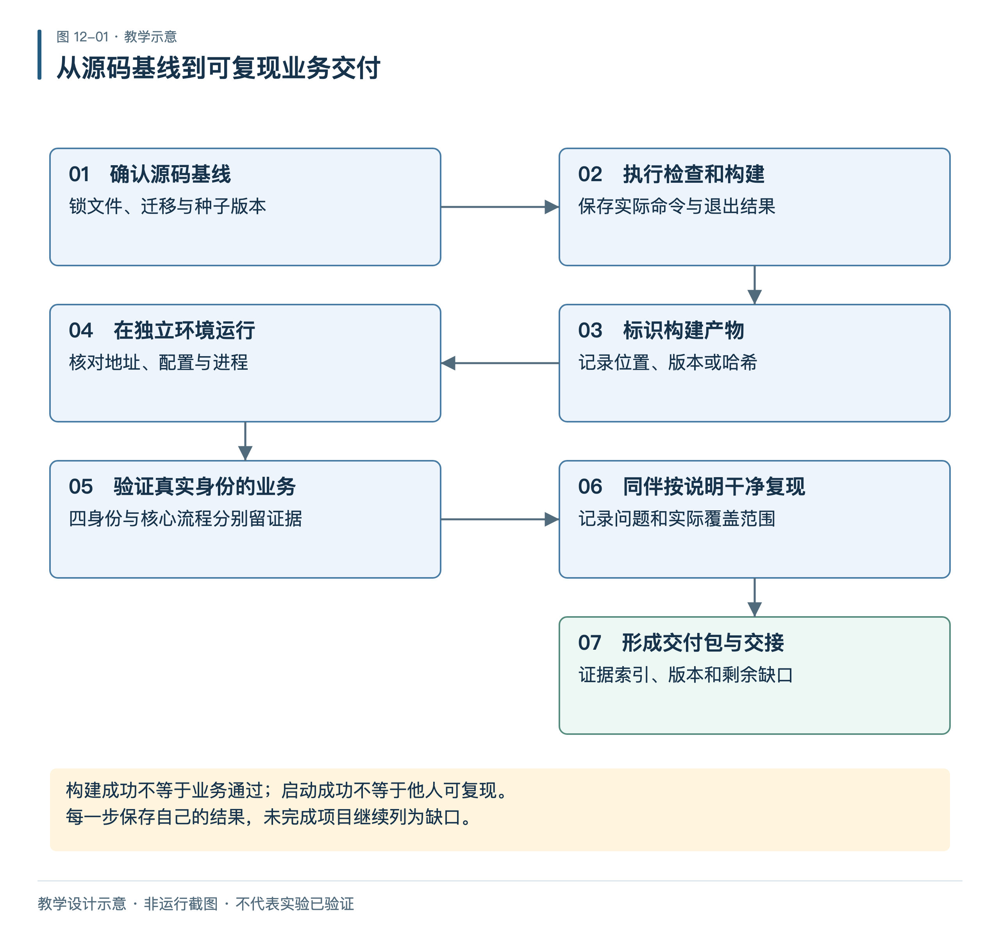
每一步保留自己的版本与结果，未完成的检查继续列为缺口。
可编辑图源：ch12-01-delivery-flow.mmd · SVG 版式源

可复现不必承诺构建文件逐字节永远一致；某些产物会嵌入构建时间等信息。基础要求是输入版本、依赖、配置和数据来源明确，别人能得到满足同一合同的行为。文件哈希可以识别“这一次交付的这份产物”，不能单独证明业务正确，也不能把两个不同时间的包哈希不同直接解释成缺陷。
1.2 用清单让隐含条件变得可见
拟定教学工程根为 campus-ai-course/，下有 frontend、backend、docs、fixtures、evidence。下面的目录是交付结构示例，实际名称以教师冻结资源为准，不要求照抄不存在的路径。
campus-ai-course/
frontend/ # 源码、package.json、依赖锁文件
backend/ # 源码、pom.xml、wrapper、迁移
fixtures/ # 虚构教学数据与种子说明
docs/ # 需求、接口、运行、变更、交接
evidence/ # 脱敏的实际检查与缺陷记录
README.md # 从这里开始复现
运行说明应回答：适用的操作系统和工具版本、从哪里安装依赖、怎样确认独立数据库、怎样导入教学种子、怎样启动前后端、访问地址和端口、怎样停止本组进程、失败时看哪里。它不应要求接手者去翻聊天历史寻找一个遗漏的环境变量。
配置示例仅保留字段说明和占位符，真实教学口令通过教师规定的渠道提供。会话 token、API Key、受限账户文件、真实学生信息不进入交付。日志和截图也要审查，不能只检查源码。锁文件、数据库迁移和种子版本属于必要输入，不应与临时缓存一起被省略；运行生成目录和本机依赖不作为复现的唯一依据。
建议在交付说明中写下以下字段。尖括号是待填写项，不是范例成绩。
源码标识：<实际提交标识；无 Git 时为文件清单与哈希>
依赖与资源版本：<实际锁文件、教师资源包和种子版本>
适用环境：<实际验证过的 OS、JDK、Node、MySQL 等>
数据来源：TEACHING_MOCK；对象 simulated=true
演练范围：DEMO/LOCAL_DEMO；远端控制与外部通知关闭
已验证：<分层列出日期、命令、结果与证据路径>
尚未验证或失败：<具体项目、影响、下一步>
接手入口：<运行说明、测试矩阵、已知问题文件>
1.3 构建命令要与实际资源对应
教师冻结 package scripts、Maven wrapper 与操作系统后，才能把命令写为实操入口。下表是拟沿用命令，全部待实测，不能在当前教材文稿目录执行。无需购买模型 API，也不需要安装 AI 编码 CLI；这里的终端只是学生运行自己工程的普通开发终端。
| 拟定执行目录 | 待核对命令 | 所要检查的内容 |
|---|---|---|
| frontend | npm ci |
按已冻结锁文件安装依赖 |
| frontend | npm run type-check |
TypeScript 与组件类型 |
| frontend | npm run test:unit -- --run |
已编写的单元与组件用例 |
| frontend | npm run build |
生成前端生产产物 |
| backend | ./mvnw test |
Maven 配置中纳入的测试 |
| backend | ./mvnw package |
构建后端包及其配置的检查 |
Windows 使用冻结环境说明中的 wrapper，如相应的 mvnw.cmd，路径与执行方式须实际验证。不能只把命令中的斜杠替换，就声称支持另一个系统。真实 MySQL 集成测试是否由这些命令触发，要查看冻结的测试配置；若需要独立入口，README 应单列，不能将 Maven 普通测试的成功写成并发回滚已通过。
保存执行目录、命令、开始结束时间、退出结果与产物位置。若构建含时间或版本信息，应同时记录。一次失败后修改代码，需要保留失败与修复记录，再记录新产物；不能把早期日志中的版本文字手工改成新版本。
模块二 干净复现与一次受控变更（2 学时）
2.1 让同伴从说明开始，而不是从作者提示开始
先冻结交付基线 A：记录当前代码标识、未提交内容、依赖锁文件、迁移和种子。存在未提交工作时，明确本次包含哪些文件，保留原工作副本，不用 reset、清库或整目录覆盖来制造“干净”。无 Git 的作业可用文件清单与哈希描述版本，但不能声称有 Git 提交和回退能力。
最小复现实验按以下顺序进行，结果写入同伴的实际记录：
- 在新的目录取交付包或检出基线 A；记录复现者、环境和源码标识。新目录用于排除作者本机的隐藏依赖，不覆盖其他作业。
- 按 README 检查工具和端口，确认独立测试库标识，按教师入口初始化迁移和种子。发现连接目标不是本组教学库时停止写入并纠正配置。
- 按锁文件安装依赖，执行约定检查与构建；记录失败原文和退出状态，不让作者直接在背后改文件后只留下成功截图。
- 按资源说明启动本组服务。检查进程、地址、API 与页面分别是否可达；“进程存在”不等于登录和业务正常。
- 使用 ADMIN、MANAGER A、MANAGER B、VIEWER 四个身份做核心检查：模拟来源可见、实际数据数量、有效零与未知值、本人范围拒绝、事件闭环、责任新旧事件对照及刷新持久化。
- 按说明停止本组进程，核对没有误停其他服务。提交复现结果、缺失说明和可复现问题；作者修正文档或代码后保留新的版本记录。
完整数据集的目标为四空间、十六模拟设备、二十八采集点，数量必须来自实际返回，不能硬编码到页面上。若仍只有第一条贯通的一空间、两设备，应报告当前范围与缺少的种子。source=TEACHING_MOCK 描述数据来源，simulated=true 描述对象性质；即使选做接入 AIRIOT，其中模拟对象仍需保留 simulated 标记。
同伴应能独立走过“看运行—办事件—查责任”：先核对设备及数据质量，再用管理员触发并分派，A 处理、管理员模拟恢复、A 核实关闭，最后改变责任并比较新旧事件。B 和 VIEWER 的拒绝检查仍要保留。基础课程不向真实设备写入，也不把 AIRIOT 原始报警导入成本地演练。
2.2 用一个小需求学习维护
完成基线 A 后，接收变更：“事件列表增加按处置状态筛选，刷新后保留已选状态。”若当前作品已有该功能，由教师选一个同等规模的只读筛选任务。不要为了制造工作量改做新权限体系或远端控制。
先写一张变更单，明确用户问题、验收条件、影响文件和证据。现有列表合同已经支持 state，因此通常无需修改数据库。页面可用 URL 查询参数保留选择，这是本例的实现选择，需在本组设计记录中固定，不新增服务端字段。图 12-02 展示先分析后修改的路线。

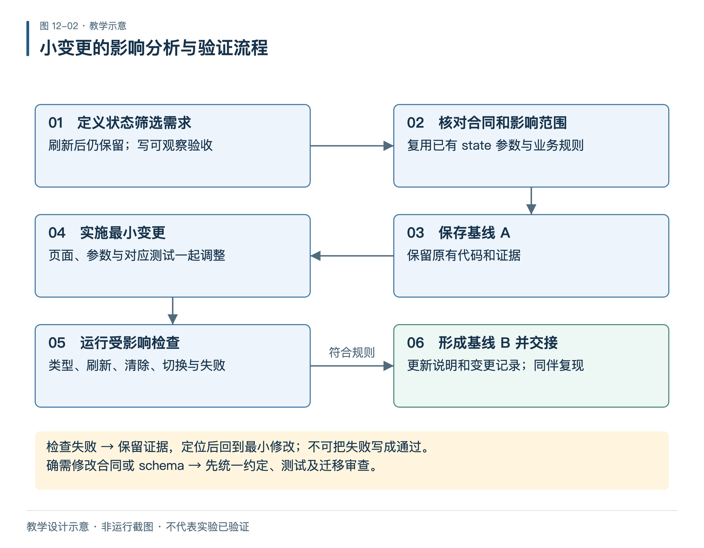
例子复用既有 state 参数；合同或数据库确需变化时，必须先更新对应约定和测试。
可编辑图源：ch12-02-controlled-change.mmd · SVG 版式源

| 验收条件 | 对应实现与检查 |
|---|---|
| 选择 IN_PROGRESS 只显示相应事件 | 请求使用既有 state；对照 API 结果与页面 |
| 刷新后仍选 IN_PROGRESS | 从经过校验的 URL 状态恢复选择，再请求数据 |
| 选择“全部” | 不发送 state 筛选；分页 skip 重置为 0 |
| URL 含未知状态 | 页面提示并按约定回到合法选择；直接非法 API 请求仍被后端拒绝 |
| 请求失败或快速切换 | 不把旧结果标为新筛选成功；最终显示与当前选择一致 |
学生先预测受影响位置：路由查询、筛选组件、请求参数、列表加载状态、相关测试和使用说明。如果已有旧请求在飞行中，新筛选响应先回来，旧响应后到，页面不能再被旧数据覆盖。可沿用前章的请求序号或取消机制；具体做法依教师骨架，不引入新依赖解决一个已有模式的问题。
实现后执行类型检查、相关列表与参数测试，再在浏览器验证选择、刷新、清除、快速切换和请求失败。后端授权及版本更新逻辑应保持原有规则；如果实际改动扩展到公共请求封装，还要相应增加回归范围。测试多少取决于影响，不因变更看起来小就完全不测，也不无条件重跑所有无关检查。
形成基线 B：记录代码差异、实际检查、文档更新与遗留项。由同伴按 B 再做受影响流程复现，不能用 A 的截图证明 B。新报告链接旧报告作为历史依据，但每项当前结论要能指向对应的代码与执行时间。
2.3 回退代码和恢复数据是两件事
本次筛选变更优先不改 schema，出现问题时可以在独立副本恢复基线 A 的代码或构建产物，再重新核验。仍须确认 A 兼容当前数据库，不能凭“版本更旧”推定安全。图 12-03 将代码与数据两条路径分开，避免把删除数据库当成回退方法。

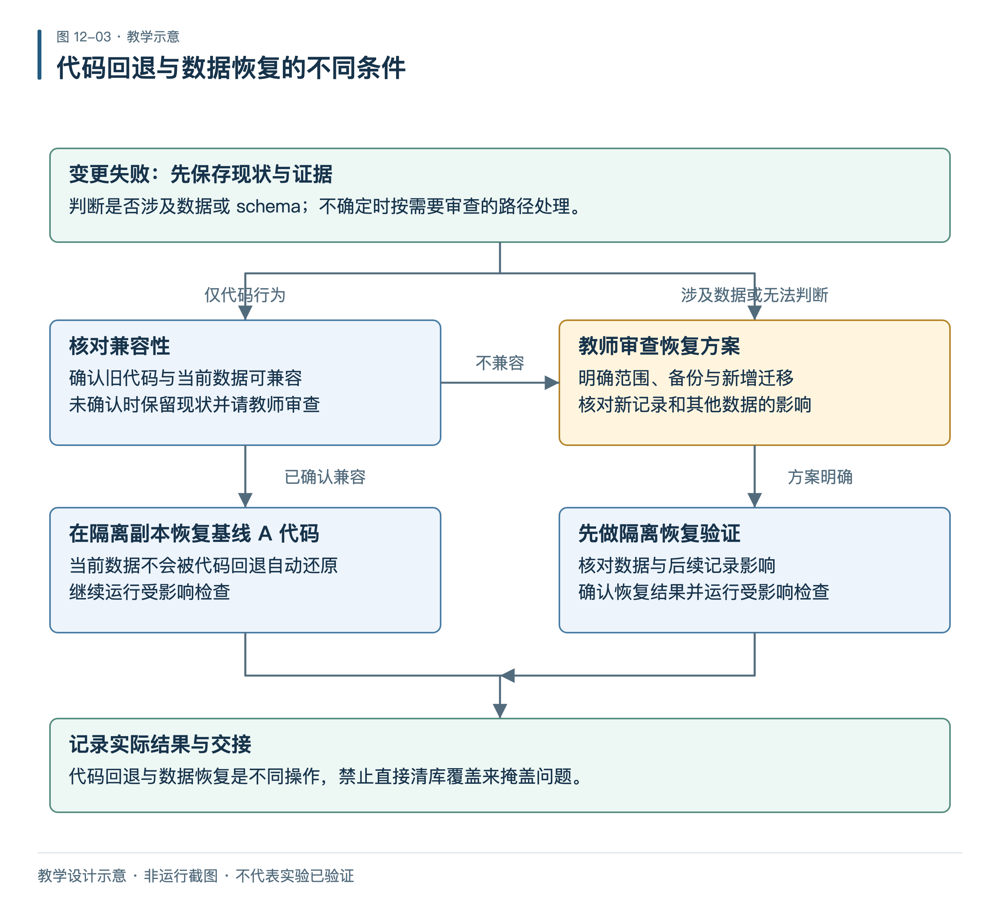
代码回退保留当前数据；确需数据恢复时先由教师审查范围、备份与隔离验证。
可编辑图源：ch12-03-code-data-recovery.mmd · SVG 版式源

若变更确实需要数据库迁移，应新增迁移，不改已经应用的历史脚本；由教师先审查兼容性、备份与隔离恢复方案。旧程序是否能读新结构、恢复会丢掉哪些后续记录，都要有明确结论。本章基础作业不要求把这些操作延伸到共享服务或公网，发布范围另行授权。
模块三 演示、个人答辩与复盘（1 学时）
3.1 用可解释的因果关系讲解作品
小组演示可以协作，个人理解必须可区分。每位学生独立承担一段代码讲解或故障定位，说明一次请求如何从页面经过 API、服务校验、数据库事务再回到时间线。教师可以改变一个输入，让学生先预测结果，再指出实现位置；不以背诵文件名代替理解。
例如展示责任更新请求时，学生应解释 expectedVersion 来自刚读取的责任记录，为什么不接受事件版本；两请求竞争时，行锁如何协调、旧版本为什么冲突；失败后输入为何保留。展示关闭动作时，应解释来源恢复、独立核实、NOTE 与结论各自的作用，以及管理员为何仍不能绕过业务门槛。
演示失败时先保留证据，指出失败层次：未构建、进程未启动、接口不可达、授权拒绝还是业务规则不满足。现场不能为了完成演示临时删除权限或把失败响应改成成功。能准确解释失败和下一步，同样属于工程能力；但解释不能替代本来要求的实际验收。
3.2 让网页 AI 帮助查漏与准备解释
将当前版本、交付清单和实际结果分块贴入通义等网页工具，Qwen3 作为模型案例，不要求 API、CLI 或固定付费档位。发送前移除日志中的口令和令牌。以下提示把 AI 限定在影响分析和材料审查内。
这是智慧校园教学项目的交付清单、合同和实际检查结果：[粘贴]。
本次变更为事件列表按状态筛选并在刷新后保留选择。
请先指出材料中的遗漏与矛盾，并分析页面、接口、测试和文档影响。
只使用既有合同，不增加公网部署、远端控制、通知或模型 API。
把源码修改、构建、运行、业务验收与未执行项分别描述。
再出三道需要结合实际代码回答的答辩题，先不给答案。
你无法访问本机，未看到我的实际证据时不得声称已验证。
学生先独立回答，再要求 AI 按合同指出逻辑缺口。例如 AI 建议“把所有异常都转为空数组以便演示”，应拒绝：空结果与读取失败语义不同，会掩盖服务不可用。个人记录包含原建议、自己的判断、实际修改与证据，不按提示词长度或生成代码量评分。没有遇到真实 AI 错误时使用教师缺陷样例，不伪造一段对话。
3.3 验收表与常见交付故障
| 检查项 | 可以支持结论的实际证据 | 本稿状态 |
|---|---|---|
| 输入完整 | 源码标识、锁文件、迁移、种子及无秘密配置样例 | 待执行 |
| 构建 | 对应版本的命令、退出状态、产物与标识 | 待执行 |
| 复现 AC12 | 同伴在干净目录和独立库的操作记录及问题单 | 待执行 |
| 核心行为 | 四身份、模拟来源、数据质量、事件与责任流程 | 待执行 |
| 质量缺口 | 第 11 章并发、事件回滚、责任回滚的实际证据或阻塞说明 | 待执行 |
| 变更维护 | A/B 差异、影响分析、受影响回归与文档更新 | 待执行 |
| 个人理解 | 代码路径解释、输入预测与 AI 建议取舍 | 待执行 |
“作者电脑能跑、同伴不能跑”，优先检查漏记的环境变量、锁文件、种子与工具版本。构建成功但页面打不开，分别查启动入口、访问地址、代理、静态资源 base 和路由，不直接重写业务逻辑。页面只有空数据，区分未导入种子、查询失败与真实空结果。验收报告比代码旧，按影响补做检查，不修改历史日期冒充新结果。停止脚本误伤其他组进程则属于范围错误，应修正专属进程识别，不以强制结束全部同名进程解决。
课后练习与答案要点
- 前端 dist 已生成，能否写“校园系统验收通过”？**要点：**只能报告对应构建结果；还需运行、带身份 API、浏览器及相关数据库证据。
- 状态筛选复用既有 state 参数，为什么还需要影响分析？**要点：**请求参数、刷新持久化、分页、加载竞态、错误显示和文档均可能变化；没有 schema 变化不等于没有风险。
- 当前代码通过测试，但交付包漏了迁移脚本，会发生什么？**要点：**新环境无法重建结构；作者已有数据库掩盖了缺口，构建通过不能代替干净复现。
- 回退到旧代码是否必然恢复旧数据？**要点：**不会。代码与数据生命周期不同；必须检查兼容性，数据恢复需要独立方案与验证。
- 同伴只复现了 ADMIN 闭环，如何写结论？**要点：**明确管理员已测范围，A/B 本人范围与 VIEWER 拒绝仍待执行；不能扩大成四身份验收。
进阶可在另行批准的隔离环境学习发布与恢复，或完成 AIRIOT 只读适配；不作为基础满分的付费或硬件门槛。个人复盘写一个误判、证据怎样改变判断、实际修复及下次会提前检查什么，比泛泛写“学会了团队合作”更有用。
课程交接与完成边界
最终交付项目包、个人证据索引和 HANDOFF：当前版本、已完成范围、实际验证、尚未解决的问题、下一任务与不可随意修改的边界。接手者应能直接找到运行入口和缺陷复现，而不需要重新问遍整个开发过程。
学生项目交付与教材成熟度分别记录。本轮教材只有可读初稿；教师完成骨架制作、干净环境实验、图文核对、人工审校和实际教学安排后，才能继续进入 LAB_VERIFIED、REVIEWED 与 LESSON_READY 等后续阶段。不能因为十二章正文齐全，就称配套实验已经通过或正式教案已经完成。
图表目录
图像均为教学示意；PNG 供直接阅读，SVG 保留矢量文字与图形。
- 公共图 02 网页 AI 协作。箭头按消息发生顺序编号；一次修正仍须回到人工审查与本地核验。此图说明教学协作方法，不表示课程实验已经通过。
- 公共图 01 教学工程：请求与数据的边界。蓝色为界面，青色为后端业务与本地持久化，灰蓝色为读取端口，金色虚线为选做只读接入。箭头说明请求方向；教学示意，非运行证据。
- 图 01-01 从使用问题到可交接证据。教学示意，非运行证据。
- 图 01-02 从含糊要求到可检查的小任务。教学示意，非运行证据。
- 图 01-03 网页 AI 协作中的人工证据闭环。教学示意，非运行证据。
- 图 02-01 使用者需要与课程范围。教学示意，非运行证据。
- 图 02-02 一条需求如何走到验收证据。教学示意，非运行证据。
- 图 02-03 五个里程碑及其依赖。教学示意，非运行证据。
- 图 03-01 教学系统职责与数据源边界。教学示意，非运行证据。
- 图 03-02 设备引用、本地事件与责任的概念 ER 图。教学示意，非运行证据。
- 图 03-03 来源恢复与处置关闭的两条事实线。教学示意，非运行证据。
- 图 03-04 两个请求竞争同一事件版本。教学示意，非运行证据。
- 图 04-01 工作区、暂存区与提交。教学示意，非运行证据。
- 图 04-02 第一次设备读取的请求与返回。教学示意，非运行证据。
- 图 04-03 首次贯通的分层定位路径。教学示意，非运行证据。
- 图 05-01 设备读取的请求时序。教学示意，非运行证据。
- 图 05-02 来源目录与本地位置关系。教学示意，非运行证据。
- 图 05-03 空间绑定与独立回读。教学示意，非运行证据。
- 图 06-01 设备台账的信息优先级。教学界面示意，非运行截图。
- 图 06-02 原始数据、派生结果与组件。教学示意，非运行证据。
- 图 06-03 页面数据状态与反馈。教学示意，非运行证据。
- 图 07-01 同一观察时刻下的质量对照。教学示意，非运行证据。
- 图 07-02 曲线与原始样本一一核对。教学示意，非运行证据。
- 图 07-03 不重叠刷新与离页清理。教学示意，非运行证据。
- 图 08-01 角色资格与事件对象范围。教学示意，非运行证据。
- 图 08-02 授权与拒绝路径。教学示意，非运行证据。
- 图 08-03 身份切换后的迟到响应。教学示意，非运行证据。
- 图 09-01 事件处置状态与合法迁移。教学示意，非运行证据。
- 图 09-02 关闭事件的完整门槛。教学示意，非运行证据。
- 图 09-03 模拟恢复、核实与关闭的时序。教学示意，非运行证据。
- 图 10-01 当前责任、责任历史与事件的关系。教学示意，非运行证据。
- 图 10-02 责任变更影响未来事件，不改派已有事件。教学示意，非运行证据。
- 图 10-03 从责任时间线解释当前分工。教学示意，非运行证据。
- 图 11-01 测试证据的层级与证明范围。教学示意，非运行证据。
- 图 11-02 同版本并发时只有一个修改提交。教学示意，非运行证据。
- 图 11-03 时间线失败时主记录一同回滚。教学示意，非运行证据。
- 图 11-04 从失败证据到最小修复与回归。教学示意，非运行证据。
- 图 12-01 从源码基线到可复现业务交付。教学示意，非运行证据。
- 图 12-02 小变更的影响分析与验证流程。教学示意，非运行证据。
- 图 12-03 代码回退与数据恢复的不同条件。教学示意，非运行证据。